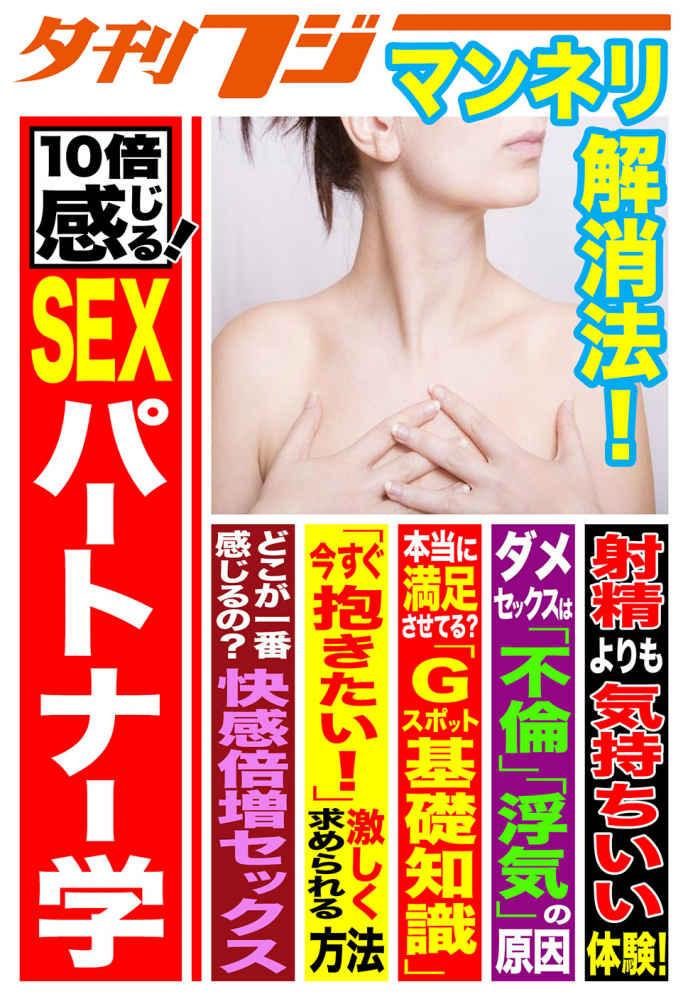
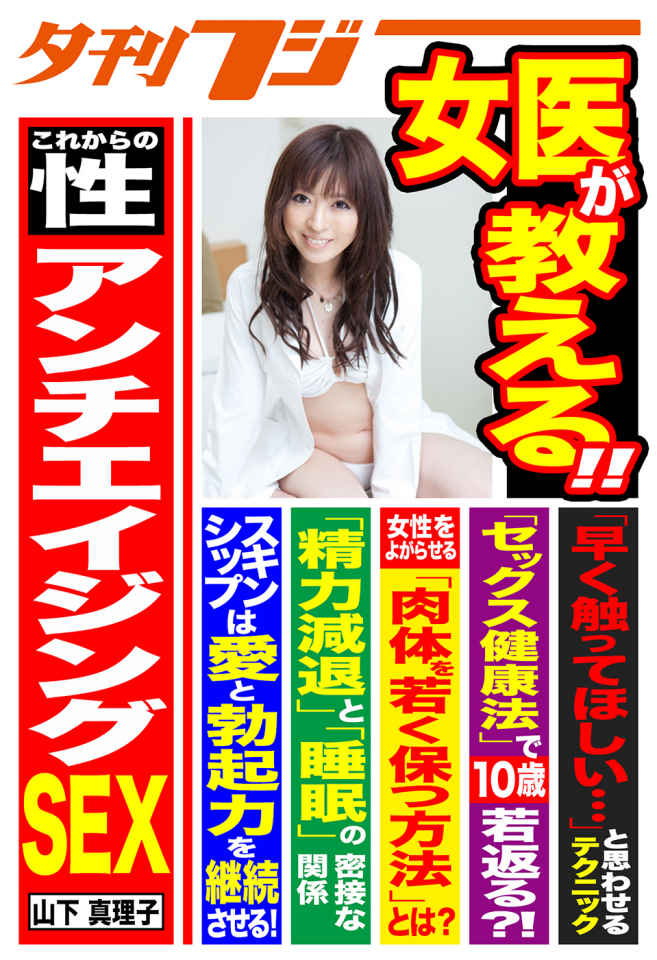
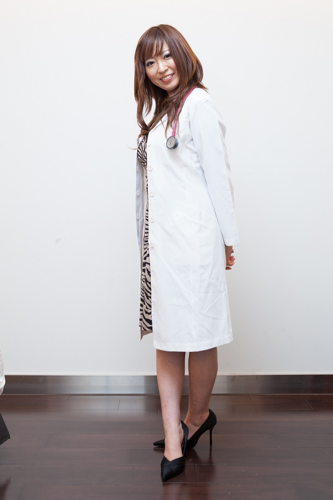
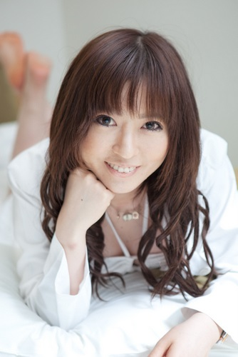
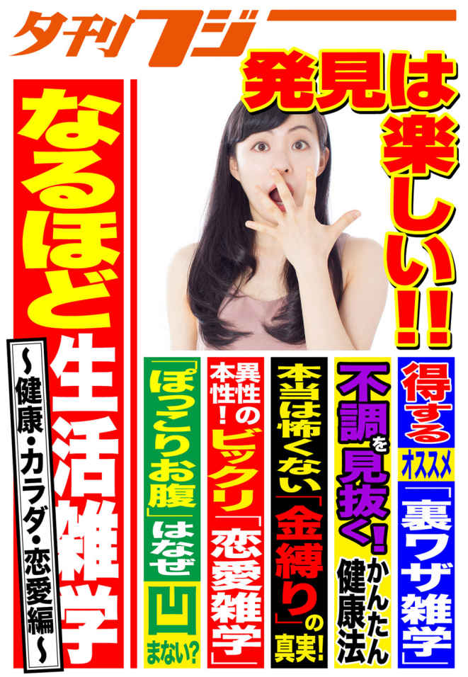
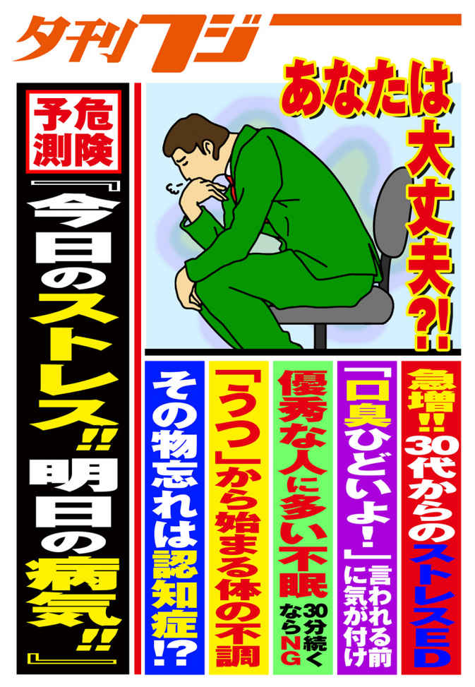

| 「健康」から「ＳＥＸ」まで 知っておきたい雑学満載！ | |
| 夏山佳奈 & 山下真理子 & 田幸和歌子 & 長田昭二 | |
| 株式会社 産業経済新聞社 (2016) | |
「健康」から「ＳＥＸ」まで 知っておきたい雑学満載！ 目次

10 倍感じる！ ＳＥＸパートナー学
加齢と共に女性ホルモンが低下すると、筋肉が衰えて膣の締まりは悪くなりがち。高周波などの治療で改善する方法もあるが、自分で鍛えたいと思う人もいるでしょう。そんな人々に注目されているのが、インナーマッスルトレーニング。パートナーと行うことで、男女問わずに精力がアップするという。
腸腰筋に注目
インナーマッスルを鍛える方法としては、腹筋や背筋の運動が不可欠。しかし、日頃から運動不足の人がいきなり行うのは難しく、腰を痛めるなどの故障にもつながりかねない。そんな中、女性に人気のヨガのポーズに、インナーマッスルを鍛える方法があった。
毎週水曜日に「地域の広場あいスタジオ」（東京都渋谷区）で、「健康！ ヨガ教室」を行うなど、幅広く活動しているヨガインストラクターの山口紘実さんが説明する。
「太ももと腰を結ぶ腸腰（ちょうよう）筋は、膣の締まりに関わる骨盤底筋群をコントロールする役割があります。ヨガには腸腰筋を鍛えるポーズがあるのです。膣の締まりだけでなく姿勢も良くなり、血流やリンパの流れも改善します。特にＯ脚気味で姿勢が悪い人には、お勧めです」
腸腰筋を鍛えるポーズはいろいろあるそうだが、誰でも簡単に行えるのは「飛行機のポーズ」。方法は次のとおり。
（１）マットレスなどの上でうつぶせになり、脚と腕をまっすぐに伸ばす（２）脚は腰幅ぐらいに開く。腕は肩幅の状態（３）顔を上げ、息を吸いながら脚と手を同時に持ち上げる（４）息を止めて姿勢をキープし、その後息を吐きながら脱力（５）５セット繰り返す。
お尻の穴を締める
「飛行機のポーズは、お尻の穴をキュッと締めるようにするのがコツです。お尻の穴を締めると、膣の締まりも良くなります。男性も、お尻の穴をキュッと締めるほど精気も強くなるのです。パートナーと一緒に取り組んでみてください」（山口さん）
ただし、男性の場合、飛行機のポーズでお尻がキュッと上がらないと、息子が床にすれてしまうことがあるという。その場合は、親指を外に出してグーの形に握り、太もものつけ根の辺り（そけい部）に、両手で支えるようにしながら、飛行機のポーズで脚を持ち上げる方法を行うと良いそうだ。
おへそを床から浮かせるように意識すると、腸腰筋は鍛えられやすい。ただし、無理は禁物。できる範囲で少しずつ行うのがベター。
「最初は布団などの上で行いましょう。毎晩、お風呂上がりにポーズを行っていると、腸腰筋だけでなく、ヘソから指３本下の『丹田（たんでん）』というエネルギーの源も鍛えることができます。飛行機のポーズは姿勢をそらすので、その後に、あおむけになって膝を抱えるようにすると、バランスが良くなります。健康にも役立ちます」と山口さんは話す。 （医療ライター・夏山佳奈）
長らくセックスレスで寝室も別という夫婦もいるだろう。セックスレス解消として、久しぶりに妻の寝室に入って拒絶されることは珍しくない。女性は単なる性行為だけでなく、雰囲気にも性欲が左右されるため、いきなりのアタックでは無理。そんな２人の距離を縮めるのに役立つヨガのポーズがあるそうだ。
骨盤内の臓器も刺激
前回まで、ヨガの呼吸法には、体調を整えるだけでなく、性欲アップの作用もあることを紹介した。呼吸法には、胸を開く胸式だけでなく、ヘソの指３本下の位置にある丹田（たんでん）を意識した腹式があり、ノド、胸、腹を組み合わせた３段階の完全呼吸法がより効果が高いという。しかし、素人がいきなり呼吸法をマスターするのは難しい。それを簡単に実現できるのがヨガの「魚のポーズ」。カップルの距離感を縮める作用もあるそうだ。
先月から「あいかんぱにいスタジオ」（東京都渋谷区）で、毎週水曜日に男性限定のヨガ教室を行うなど、幅広く活動しているヨガインストラクターの山口紘実さんが説明する。
「魚のポーズは、あおむけになることで、３段階の完全呼吸法を自然に行うことができます。子宮などの骨盤内の臓器も刺激し、自律神経の乱れを整えるなど、さまざまな効果が期待できます。２人で隣同士になって魚のポーズを行うと、互いの呼吸音を感じることができるでしょう。一緒のタイミングで呼吸を行うと、まさに息の合った状態。疎遠になった心も近づき、セックスレス解消の第１歩にもなると思います」
肩こり解消もきっかけになる
魚のポーズの方法は、
（１）まずあおむけに両足をそろえて寝る。足の爪先は、天井に向ける。
（２）お尻の下に両手のひらを床につけるように置く。このとき、両手の親指を触れあうようにして、手のひらを開くのがポイント。
（３）ひじも背中の下に置き、肩を床につけるようなイメージで、胸を開く。
（４）この状態でゆっくりと息を吐いて吸う。
「魚のポーズは腹式呼吸を行いにくいので、胸の呼吸だけでも行ってみてください。首をのけぞり過ぎると、痛める恐れがありますので無理をしないように。魚のポーズは、肩が外側に向くため、肩こり解消にも効果があります。パートナーの肩こりがひどいようならば、それをきっかけにしてもよいでしょう」（山口さん）
魚のポーズが難しいならば、カラオケでデュエットするのも一考という。息を合わせると、女性の心は開きやすいだけに、一緒に歌うだけでも接近しやすいそうだ。
「ヨガには、単なるポーズだけでなく、歌う、踊る、祈る、呼吸することも、インドでは含まれると考えています。身体を本来の状態に戻す作用がヨガにはあるのです。だからこそ、ヨガの基本の呼吸法で、男女共に若さや恋心を取り戻していただきたい。互いに健康な心身を保つことで、充実したセックスライフも実現できるでしょう」と山口さんは話す。 （医療ライター・夏山佳奈）
ヨガの呼吸法を取り入れると、健康に役立つだけでなく、男女共に性欲アップにもつながるという。女性にとっては、身体がリラックスして体調が整うだけでなく、エネルギー循環によって恋心にも火がつきやすくなるそうだ。加齢に伴いその気を失っているパートナーとの関係改善にも、期待できるかもしれない。
胸を開かせる
近年、ダイエットや体調を整えるために、ヨガ教室に通う女性は増加傾向にあるといわれる。特に高温多湿のスタジオで行うホットヨガは、女性の間ではブームになっているほど注目度が高い。そんなヨガの基本は呼吸法にあり、インドでは老若男女を問わずにヨガを行っているという。その結果、性行為もスムーズに行えるそうだ。
先月から「あいかんぱにいスタジオ」（東京都渋谷区）で、毎週水曜日に男性限定のヨガ教室を行うなど、幅広く活動しているヨガインストラクターの山口紘実さんが説明する。
「ヨガには、気の通り道となるチャクラを開くと、エネルギー循環が良くなるとの考え方があります。胸のチャクラが開けば、女性の心を開かすことにもつながります。オープンハートの状態になれば、性欲もアップし、その気にもなりやすいのです。男性には、ぜひ女性のチャクラを開くようにしていだきたい。それには、胸式呼吸法が役立ちます」
かたくなになった心を無理にこじ開けようとしても、拒絶されるのが関の山。呼吸法で自然に胸を開かすようにするのがコツだ。
簡単な方法
パートナーの心を開く呼吸法はいくつかあるが、簡単に取り組めるのは、次のような胸式呼吸法。
（１）まずゆっくりと息を吐く。
（２）息を吐き切ったら、ゆっくりと胸で息を吸い込む。このとき、肩は後方へ持っていくイメージで、胸を広げるようにして吸い込む。
（３）ゆっくりと息を吐きながら、肋骨（ろっこつ）の下をコルセットで締め上げるように、息を吐き切る。
（４）（２）と（３）をゆっくりと繰り返す。
「加齢とともに猫背になるなど姿勢が悪い人も、胸式呼吸法を行うと正しい姿勢に改善しやすい。パートナーと向き合って取り組んでみましょう。性行為がなくても、体調が整えば、オープンハートになりやすいと思います」（山口さん）
胸式呼吸をマスターした人は、前回紹介したヘソの下指３本の位置にある丹田を意識した腹式呼吸法（丹田呼吸法）を組み合わせ、息を吸い込むときにノド、胸、腹を順番に膨らませる３段階完全呼吸法を行うと効果がより得られやすいそうだ。
「３段階完全呼吸法を行うと、身体全体がポカポカと温かくなり、全身にエネルギーが回っていることを体感できると思います。健康維持だけでなく男女共にセックスライフの充実にも役立ちます。呼吸法を機に、お互いに胸のチャクラを開いてはいかがでしょうか」と山口さんは語る。 （医療ライター・夏山佳奈）
中高年の女性は、性欲が強くセックスライフを楽しむ人と、趣味などに没頭してセックスレスといった人に分かれるという。性欲が強い人は、70 代や80 代になっても「セックスＯＫ」というからパワフル。そんな女性は加齢などに伴う身体変化の改善にも積極的。治療法もいろいろあり、さらに女性の性欲アップを後押ししているようだ。
マイルスリング
中高年女性を悩ます病気としては、骨盤臓器脱が代表格。骨盤内の子宮やぼうこう、直腸を支える骨盤底筋という筋肉群が、出産や加齢でダメージを受け、臓器を支える靱帯（じんたい）も劣化することで、膣の中に骨盤内の臓器が飛び出してしまう病気。ひどいときには、膣と一緒に体外へ出て、ＱＯＬ（生活の質）を著しく低下させる。かつては、痛みなどがなければ我慢。今は積極的に治療を受ける人が増えているそうだ。
「女性医療クリニック・ＬＵＮＡグループ」（横浜市）の関口由紀理事長が説明する。
「軽症であれば、骨盤底筋トレーニングで改善可能です。子宮が落ちる子宮脱では、自分で着脱できる『マイルスリング』を活用します。日中装着し、寝るときは外すので、セックスも可能です。子宮脱の状態でもセックスはできますが、オーガズムに達しにくいなど女性のＱＯＬを下げるため治療を望む人が多くなっています」
日帰り手術も
リングでも子宮脱を抑制できないときには、子宮を支える靱帯を補給する日帰り手術が実施されるという。同クリニックでは、世界に先駆けてＴＦＳ手術を導入し、子宮脱に伴う尿失禁などの改善で成果を上げている。
「術後の陰部の痛みなどが全くなく、日帰りで行えるため、自費診療（50 万円）でもニーズが高い。尿失禁など排尿障害だけでなく、性機能障害も改善します」（同）
肉体的なダメージを解消し、セックスにも積極的。結果として、女性ホルモンが低下する閉経後もセックスライフを維持し、70 歳でも80 歳でも、「セックスしたい」と思う女性はいるのだ。一般的に「男は幾つになっても」といわれるが、今では、「女性こそ幾つになっても」という時代に突入した。「オレはもう年だから」と考えていると、パートナーに置き去りにされる恐れも。
「残念なことに女性の方が長寿ゆえに、周りを見渡せばパートナーがいないといったことも起こっています。よく『パートナー探しに苦労している』との声は聞きます。80 代の男性がいても、セックスができない状態のこともあるからです。男性が高齢になって性の営みをキープするには、中年時代の定期的な射精が大切。高齢になっても継続することが必要なのです。『年だから』は禁句です」と関口理事長はアドバイスする。 （医療ライター・夏山佳奈）
近年、女性向けのアダルトサイトも登場し、女性自身が、より快感を高めるテクニックを身につけるチャンスが増えているという。もちろん、テクだけでなく、加齢と共に衰える膣の状態もケアしたいと望むことも、珍しいことではなくなった。感じ方は人それぞれだが、女性自身が、快感の得やすさをマスターし、身体を改善する傾向にあるのだ。
満足感のために
以前にもこのコーナーで紹介したが、膣の緩みを改善する治療としては、高周波を使った「ビビーブ」、フラクショナル炭酸ガスレーザーを応用した「エッジワン」、それらの治療でも効果が得にくい場合は、膣内の壁を直接縫って縮めるレーザー治療とバリエーションが豊富。さらには、Ｇスポットの快感を高める「Ｇショット」も登場し、快感アップの方法はいろいろある。
女性医療クリニック・ＬＵＮＡグループ（神奈川県横浜市）の関口由紀理事長が説明する。
「出産経験があると、どうしても膣は緩みやすくなります。骨盤底筋トレーニングでも、膣の締まりはよくなりますが、中には、それだけでは難しい人もいるのです。膣を引き締めれば、当然のことながらペニスが当たりやすくなり、感じやすくなるでしょう。男性のためというよりは、ご自身の満足感を得るために、治療を受けるというのが、今の主流です」
かつて性行為に関して受け身だった女性は、現代では積極的。性行為でオーガズムに達しないと、「パートナー換えは当たり前」という女性もいるほど。
入口付近で快感
快感に関して積極的な女性に対して、男性は、あの手この手の作戦が不可欠。クリトリスを愛撫（あいぶ）して、激しいピストン運動。しかし、女性は別の方法を求める傾向もある。
「研究者の間でも、Ｇスポットの存在には賛否両論がありますが、膣の入り口付近に性感帯があることは、はっきりしています。膣の入口から３～４センチの部分に、男性が陰茎をやさしく入れて動かすと、感じやすいという女性は多いのです」（関口理事長）
ＥＤ薬を飲んで息子を硬くして、前戯の後に激しいピストン運動をしなくても、入口付近に亀頭を入れてゆっくり動かすだけで、女性は快感を得られることがあるそうだ。もちろん、それだけに満足しない女性もいるが、試してみるのは一考。
「男性も亀頭部分に性感帯があるので、膣の奥よりも入口付近の方が、感じやすいでしょう。男女共にハッピーになれます。ただし、加齢と共に膣の奥が感じやすい女性もいます。クリトリスでオーガズムを感じる女性もいるので、パートナーの感じやすい部分を探してみてください。激しい動きよりも、女性が本当に感じるか否かが重要でしょう」と関口理事長は話す。 （医療ライター・夏山佳奈）
中高年になって女性ホルモンが低下すると、身体的な変化のみならず、性行為によるオーガズムを感じにくくなるという。中には、治療で膣を引き締めるだけでなく、Ｇスポットそのものの感度を上げようとする人もいる。
Ｇショット
出産経験などで、膣は筋肉や組織のダメージで緩みがち。さらに、加齢に伴う女性ホルモンの低下が加わると、膣の壁は薄く硬くなって締まりを悪くする。結果として、男性の息子を挿入されても、「感じにくい」といったことが起こる。その感じやすさを左右するひとつが、Ｇスポット。
女性医療クリニック・ＬＵＮＡグループ（神奈川県横浜市）の関口由紀理事長が説明する。
「一般的には、膣の前壁の膀胱頸部（けいぶ）は、一番感じるといわれる部分です。中指を入れたときに、第一関節から第二関節辺りの部分で、そこをＧスポットと称しています。女性ホルモンの低下や、膣が緩むなどの変化があると、Ｇスポットへの亀頭の刺激を感じにくくなるのです。そのため、治療でオーガズムを上げたいと希望される方はいます」
Ｇスポットを感じやすくする治療は「Ｇショット」という。ヒアルロン酸を注入することで、膣内の壁をふっくらと盛り上げて、刺激を受けやすくするのだ。近年、治療を行う医療機関が増えているため、女性は手軽にＧスポットの快感を取り戻すことができるようになっている。
Ｇスポット賛否両論
女性にとって快感を得やすいＧスポットだが、その存在については賛否両論ある。知覚神経が密集しているとの報告もあれば、Ｇスポットはなかったとの研究結果もあって、謎めいている。
「クリトリスはほぼ１００％ の女性が感じますが、Ｇスポットと呼ばれる部分では、オーガズムに達しないという女性はいます。単に挿入されただけでは感じないという人は、３割程度はいるのです。女性の誰もがＧスポットを持っているとは限らないと、考えるべきでしょう」（関口理事長）
クリトリスの刺激でオーガズムに達しても、Ｇスポットではあまり感じない。むしろ、膣の奥の方が気持ち良いと思う人もいる。逆に、奥まで挿入されると痛みが走り、快感が少ないという人もいるから、感じ方は十人十色。それを無視してピストン運動だけを行っていると、「やっぱり、この人とは不一致」なんて女性が思いかねないので、注意が必要だ。
「人によって感じる場所が異なるだけに、男性には、パートナーに合った性行為を考えていただきたいと思います。それには、コミュニケーションも大切。最近は、女性向けのアダルトビデオサイトも登場し、女性の中には、より快感を高めたいと思っている人もいます。男性も、このようなサイトを見て、知識とテクニックを高めてはいかがでしょうか」と関口理事長はいう。 （医療ライター・夏山佳奈）
女性は中高年になると、女性ホルモンの低下によって、膣がぬれにくくなる。その結果、性行為で痛みが生じやすくなるため、セックスを拒絶することも珍しい話ではない。男性が愛撫（あいぶ）によって、パートナーの陰液を十分に出そうとした場合、単なる感触ではなく、女性の顔を見て、その状態がわかることがあるそうだ。それが鼻。一体どういうことなのか。
鼻の両脇の赤み
一般的に、興奮したときには鼻の穴は広がるといわれる。また、怒りを感じたときも広がりやすい。久しぶりの性行為でパートナーが興奮したときのみならず、「私はしたくないのよ！」と内心思って怒っているときにも、女性の鼻の穴は広がることになる。では、どう見極めたらよいのか。
「漢方の厚養堂薬局」（千葉県松戸市）の薬剤師、中医食治研究会の田村稲生会長が説明する。
「漢方では、鼻は腎のエネルギーと関係します。腎というのは、願望や欲動、信念、根気といった人間の活動力の源。これは男女問わずといえます。女性の場合は、性的な刺激でバルトリン腺からの分泌が多くなると、鼻の両脇がわずかに赤みをさします。それが目印。生理のときも赤くなりますが、性行為のときに赤くなったら、快楽度が増している目安となるのです」
バルリトン腺は、膣口の両側にある分泌腺で、性的に興奮すると粘液を分泌する。女性の性交痛を緩和し、男性がスムーズに挿入するために大いに役立つ。その分泌液が多くなったかどうか、鼻の両脇の赤みでわかるそうだ。
鼻の下の溝
一方、男性の陰茎が大きいと、大きな鼻を持つと一般的には思われがち。だが、大きさではなく、鼻の下が関係しているという。
「鼻の下にある縦の溝を『人中（じんちゅう）』といい、この部分も腎のエネルギーに関わります。溝がはっきり、くっきりしていると、男女問わずに性器の状態が良いと考えられるのです。溝は子宮の成長と関係しているといわれ、しっかりとした溝があると、膣口の具合が良いともいわれています」（田村会長）
もちろん、パートナーの「人中」がはっきりしていなくても、責めてはいけない。性器の形は十人十色。互いに満足できる性行為が行えるかどうかがカギとなる。そのために、男性の性的な刺激や愛撫は重要な意味を持つだけでなく、男性にとっても恩恵があった。
「古来の養生術では、女性の陰液は、男性にとって生命エネルギーを養うといわれています。さまざまな刺激で快楽度を上げて、クンニリングスをすると、男性の生命エネルギーは高まるのです。互いに満足した性行為の後には、腎に関わる鼻のてっぺんが割れてくることもあります。お互いに鼻をちょっと観察しながら、楽しんでみてはいかがでしょうか」と田村会長は話す。 （医療ライター・夏山佳奈）
充実したセックスライフには、お互いの満足感は欠かせない。しかし、それを妨げるのが膣の緩み。出産で膣は広がるだけでなく、筋肉も断裂。その緩みに拍車をかけるのが加齢である。性行為に気持ち良さを感じないだけでなく、パートナーに緩みを指摘されて、セックスレスに陥ってしまう人もいるそうだ。
膣の中の存在感ナシ
40 代のＡ子さんは、子供を２人産んでから夫のセックスを拒否するようになった。「子育てに疲れている」というのは夫に対する言い訳だが、実はセックスそのものに気持ち良さを感じないのが原因。夫の息子を挿入されても、膣の中での存在感はなく、ピストン運動をされてもオーガズムに達しない。
イッタふりをするのも面倒で、夫はいつも不満気。そんな状態が続いて、セックスそのものがイヤになったという。しかし、Ａ子さんのようなケースは珍しいことではない。
婦人科形成の「なおえビューティークリニック」（東京都中央区）の喜田直江院長が説明する。
「膣は加齢とともに緩んできます。腹筋や骨盤底筋を鍛えることで、締める力は維持できますが、出産後の緩みを完全に解消するのは難しい。膣が緩いと男女共にセックスで感じにくくなるため、セックスレスになってしまう人もいるのです。かつては膣を縮小する手術が一般的でしたが、今は膣トレーニングのマシンや、高周波によって膣を引き締める治療法などがあり、積極的に治療を受ける女性が増えつつあります」
１カ月で膣に変化
膣トレでは、ベルビックトレーナー（骨盤底磁気刺激器）を用い、磁界によって骨盤周辺の筋肉を刺激することで、強化する作用があるそうだ。洋服を着たまま座った状態で20 分で、トレーニングは完了。膣の緩みの解消だけでなく、骨盤底筋の衰えに伴う頻尿や尿漏れの改善効果も期待できるため、女性の注目の的になっている。
一方、高周波によって膣を引き締める治療法は「Ｖｉｖｅｖｅ（ビビーブ）」という。親指サイズの治療チップで膣の入り口周辺をなぞると、皮膚の下にあるコラーゲン組織が刺激され、膣がふっくらとする仕組み。１回30 分程度の年１回の治療。手術とは異なるために、やはり注目度が高い。
「ビビーブは、熱の刺激によりご自身の体内でコラーゲンが作られるため、治療から１カ月後に膣の変化を感じる方が多い。特に閉経前で女性ホルモンがある人には効果的です」（喜田院長）
近年、アラフォー出産プラス加齢により、膣の緩みに悩む人が目立つという。それは単に性生活だけでなく、日常生活にも支障を及ぼすことがあるそうだ。
「膣が緩いと、温泉やプールで水が中に入ってきてしまうことも起こります。ＱＯＬ（生活の質）の改善のために、治療を受けられる方もいます。悩みを抱えている人には、治療法があることを知っていただきたいと思います」と喜田院長は話している。 （医療ライター・夏山佳奈）
出産や加齢で女性の身体は変化しやすい。骨盤底筋という筋肉群が衰えることで、膣が緩む。あるいは、萎縮するだけでなく、膣内に子宮などの骨盤内の臓器が落ちる骨盤臓器脱という病気に陥ってしまう人もいる。ＱＯＬ（生活の質）の低下を防ぐため、積極的に解消を心掛け、セックスライフを取り戻す女性が増えていると言う。
性機能障害も克服
骨盤底筋は、骨盤内臓器（ぼうこう、子宮、直腸）の下にある筋肉。骨盤内臓器をハンモックのように支え、膣や尿道、肛門などが通り、排尿、排便などを司る大切な筋肉群だ。膣がキュッと締まったり、緩んだりするのも、この筋肉群に関わる。
「女性医療クリニック・ＬＵＮＡグループ」（神奈川県横浜市）の関口由紀理事長が指摘する。
「骨盤底筋が加齢などでダメージを受けると、排尿機能に異常が生じ、頻尿や排尿困難などの症状に結びつきます。そのため、積極的に骨盤トレーニングを受ける患者さんは増えました。結果として、膣の緩みや萎縮も解消し、性機能障害も克服した女性はいます。骨盤底筋トレーニングは、女性にとって重要なものなのです」
同クリニックの骨盤トレーニングセンターでは、医師が骨盤底筋の障害を評価した上で、理学療法士、看護師、エアロビクスインストラクターがチームとなって、個別や集団の骨盤底筋トレーニング指導を行っている。
１日10 回で改善
骨盤底筋のダメージは、膣の状態で調べることが可能という。人さし指と中指の２本を膣に入れ、意識してギューっと膣を締め、２本の指に圧力がしっかりかかれば、骨盤底筋はほぼ正常。指に圧力がかからない、あるいは、膣が全く動かないと、骨盤底筋は相当ダメージを受けていることになるという。
「膣が緩くなってギュッと締められない人がいる一方で、加齢に伴う膣の萎縮で、膣が固く狭くなっている人もいます。膣の萎縮は、女性ホルモンの補充療法という治療法もありますが、骨盤底筋トレーニングによって、締めるだけでなく緩める訓練をすることで、萎縮を軽減することが可能です」（関口理事長）
トレーニング方法はいろいろあるそうだが、基本は、膣と肛門をギュッと締めて５秒間、子宮を持ち上げる感覚でキープし、その後、ゆっくり緩める。これを１日10 ‐30 回程度繰り返す。同クリニックの骨盤トレーニングセンターでは、個別指導による３カ月程度のトレーニングで高い効果を上げているそうだ。
「何歳から始めてもＯＫですが、40 歳を過ぎたら自主的に行うと良いでしょう。方法がわからないときには、骨盤底筋の治療を行う専門医を受診してみてください。男性も、女性のＱＯＬ向上に、骨盤底筋トレーニングが必要であることを理解していただきたいと思います」と関口理事長は話している。
女性の感じやすい部分は、人それぞれ。Ｇスポットは全ての女性に備わっているわけではなく、研究者の間でも賛否両論に分かれる。
もうひとつ、一部の女性しかない機能として、「潮吹き」というのもある。女性がオーガズムに達するときに、クジラが潮を吹くように液体が飛び出すのだが、この現象も、全ての人が備わっているわけではないという。また、その成分も謎めいている。
尿か前立腺液か
一般的に潮吹きは、女性の射精といわれている。オーガズムに達したときにプシュッと飛び出すのだが、その仕組みは、実はよくわかっていない。
女性医療クリニック・ＬＵＮＡグループ（神奈川県横浜市）の関口由紀理事長が説明する。
「膣の中のＧスポット付近には、胎児期に、男性の前立腺と同じ由来であったスキーン腺という分泌液を出す器官があります。ここが潮吹きに関与しているのではないかといわれています。男性は、精子と前立腺液によって精液になるように、女性の潮吹きも、このスキーン腺液と考えられています。ただし確定はされていません」
関口院長は、以前、週刊誌の取材で、潮吹きの分泌液を調べたことがあるそうだ。成分結果は尿。
「オーガズムの際に尿道が緩み、少量の尿がスキーン腺液に混じった可能性もあります。が、オーガズムに達したときに、女性が自覚なく排尿し、それが潮吹きとされるケースもあるようなのです」（関口理事長）
潮吹きは、尿なのか、スキーン腺液なのか、結論は出ていない。
訓練してもできない
40 代のＡ子さんは、過去にパートナーから「潮吹きがなかったから、気持ちが良くなかったのか？」と言われて驚いた。オーガズムにも達して、エッチそのものに大満足だったのに、潮吹きがないことを指摘されたからだ。「私って本当はイケてないの？」と思うようになったが、どうしてよいのかわからない。
その後も、潮吹きはないまま。友人に聞くのも恥ずかしく、悩みのタネになっている。
「潮吹きとオーガズムは、必ずしも一致しません。オーガズムはテクニックの練習で、到達しやすくなりますが、潮吹きは訓練してもできるようになるものではないのです。男性には、知識は持っていたとしても、女性に潮吹きを求めないでいただきたいと思います」（関口理事長）
尿なのか、スキーン腺液なのか、尿道からか、膣からかなど、謎めいた潮吹きは、全ての女性に備わっているわけではなかった。
「女性を満足させるには、潮吹きのような現象ではなく、パートナーがオーガズムに達して快感を得られているかが問題でしょう。女性の身体の感じ方は人それぞれです。パートナーが気持ち良いと感じる部分を見つけてみてください」と関口理事長はアドバイスする。 （医療ライター・夏山佳奈）
女性は、髪の毛や手首、首が感じやすいという。しかし、長らく手をつないだこともない妻のみならず、気になる女性に、いきなり触れようとすれば、場合によっては問題になりかねない。女性との距離間を縮めるのは意外と難しい。しかし、そんな状況を一変させるのが呼吸法。意思の疎通が行いやすく、性欲アップにも役立つそうだ。
性の源の丹田呼吸法
中高年の女性は、更年期障害など加齢に伴う身体変化で、体調を崩しやすい。パートナーにセックスを求められても、「無理」と拒絶することがある。呼吸法は、女性の身体を正常に導くだけでなく、男性の下半身も元気にするという。
今月から「あいかんぱにいスタジオ」（東京都渋谷区）で、毎週水曜日に男性限定のヨガ教室を行うなど、幅広く活動しているヨガインストラクターの山口紘実さんが説明する。
「ヨガには、呼吸法と身体を正しい状態に戻す動きによって、健康に結びつくといった考えがあります。基本は『丹田（たんでん）呼吸法』。男女問わず丹田は性の源であり、体調を整えるのにも役立ちます。身体を活性化させるため、休日の午前中にカップルで呼吸法を行うと、やる気も性欲もアップします」
山口さんが伝授する丹田呼吸法は次のとおり。
（１）息をゆっくり吐きながら、ヘソから指３本下の丹田の位置を背中の方へギュッと引き入れることを意識する。
（２）息を吐き切ったら、鼻からゆっくり息を吸っておなかを膨らませる。
（１）と（２）を繰り返す。丹田の位置で呼吸することを意識するのがポイント。
気になる相手と呼吸を合わせる
丹田呼吸法は腹式呼吸といっておなかを膨らませたり、へこませたりして呼吸を行う。胸で呼吸をするのとは異なるが、それだけで、本当に効果はあるのか。
「ヨガでは気の通り道を『チャクラ』といいます。チャクラが開いたり、閉じたりしてエネルギーが回る。女性は、性行為のときに痛みなどを感じると、チャクラが閉じられてしまう。丹田呼吸法には、チャクラを開き、エネルギーを回す作用があるのです」（山口さん）
パートナーと向き合いながら一緒に丹田呼吸法に取り組むと、いつの間にかリラックスして、距離感も縮まりやすいという。一緒に丹田呼吸法を行う状況でない場合は、向かい合って座った相手の呼吸に、自分の呼吸を合わせてみるのもひとつの方法。
「隣同士に眠るときに、相手の呼吸に合わせると眠りやすい傾向があるように、呼吸は気持ちを安定させます。相手と呼吸を合わせると、相手も安心感を抱きやすい。女性にとって安心感は大切。お茶を飲むときは、相手がカップを持つタイミングに合わせるなど、動作をまねて同調することでも、気持ちが近づきやすくなります。距離感が縮まったら、一緒に丹田呼吸法を行うと、性行為もスムーズに行いやすくなると思います」と山口さんはアドバイスする。 （医療ライター・夏山佳奈）
男性の中には、出産した妻は、母であって女ではないと無意識に思ってしまう人がいるという。結果として無関心になり、妻が髪を切っても気づかない。ガッカリした妻は浮気。そんな事態を避けるには、コミュニケーションが不可欠だ。その方法として、女性の髪はカギとなる。
ヘアチェンは触るチャンス
一般的に、異性に対して性的な魅力を感じる身体部位はマチマチだろう。お国柄によっても異なるが、ヨガの盛んなインドでは、女性の髪は特別な意味を持つそうだ。
インドやカナダで修業を積み、今月から「あいかんぱにいスタジオ」（東京都渋谷区）で毎週水曜日に男性限定のヨガ教室を行うなど、幅広く活動中のヨガインストラクター、山口紘実さんが説明する。
「インドでは、髪の毛、首、手首が色気の象徴といわれています。特に髪の毛は第２の性感帯と考えられているのです。女性は、髪に触られたり、なでられたりすると繊細に感じる。日本の男性も、パートナーが髪形を変えたならば、ほめる、触るチャンスです」
女性の中には、ヘアサロンでシャンプーをしてもらうだけで、感じてしまう人がいるという。ただし、セックスレスな妻に、いきなりシャンプーをすることに対して抵抗感を持つ男性はいるだろう。でも、髪形をほめることは、その気になればいつでもできるはず。
手や首も感じやすい
女性に近づきたいと思ったときには、髪形をほめてみる。もちろん、セクハラにはご用心。相手が受け入れてくれるようならば、ちょっと髪に触れてみるのも一考だ。
「女性は、男性のように性行為そのものより、性行為と感情が密接につながっているため、好きな人から繊細な部分に触れられることはとても重要です。髪を触るというのは、スキンシップのひとつ。首筋や手首に触れてもよいでしょう。首や手首は、脈を感じる場所で、香水をつけると香りが漂う部分でもあります。だからこそ感じやすい。いきなりセクシュアルな状況に持っていこうとせずに、女性の気持ちを高める方法を考えてはいかがでしょうか」（山口さん）
近づきたい女性に、手相をみるフリをして手首を持つ方法は、昔から行われているテクのひとつ。だが、下心がバレバレでは、女性はドン引きしてしまう。髪をほめるところから始めて、髪の毛を少し触る。肩もみをしながら首にもふれてみる。さらには、一緒に歩くときに手をつなぐ。そんな段階を徐々に踏むことがポイント。
「ご夫婦でありがちなのは、考え方の相違によるすれ違い。一方通行のコミュニケーションになりがちなのです。インドでは、性のコミュニケーションはエネルギーの交換というとらえ方があります。単なる性行為だけでなく、考え方やエネルギーを交換することを意識すると、パートナーとの関係もうまくいくと思います」と山口さんは語る。 （医療ライター・夏山佳奈）
昨今、雑誌で盛んに取り上げられるシルバーエイジのセックスライフ。「男たるもの、いくつになっても」という勢いだが、パートナーである女性に拒否されては元も子もない。「セックスより趣味」という妻もいるからなおさらだ。そもそも中高年女性の性欲はどうなっているのか。
60 歳を過ぎても
今年１月に公表された「ＪＥＸセックスサーベイ２０１２」によれば、婚姻期間30 年以上、平均年齢60 歳前後のカップルでは、５組に４組はセックスレスだった。しかし、５組に１組は月１回以上の性の営みを持っている。一般的に女性は50 歳前後で閉経すると、女性ホルモンが急激に低下するのだが、５組に１組はそれを乗り越えていたことになる。実は女性の性欲は、年を重ねても旺盛なのだ。
産婦人科医の日本家族計画協会クリニック・北村邦夫所長が解説する。
「男女を問わず性欲と深い関係があるのは男性ホルモンです。男性は18 ‐20 歳にピークがあります。女性のピークは30 代後半から40 代。女性の場合は、女性ホルモンが低下すると、相対的に男性ホルモンが高まるのです。だから男性よりもピークは遅い。閉経を過ぎても性欲は十分に保たれ、相当長い間、維持されることになります」
つまり、女性は60 歳を過ぎても性欲があってセックスも可能というわけだ。それを裏付けるもう１つの調査結果がある。
40 歳以上で中絶増
厚労省の発表した「平成23 年妊娠総数（出生数＋中絶数）１００」に対する「中絶の割合」では、45 ～49 歳が58 ％ にも上った。50 歳以上でも３３・９％ 。シルバーエイジのセックスライフで、思いがけずに「妊娠」することがあるのだ。
「40 歳以上の『産み終え世代』は、セックスにもゆとりがある、避妊のことも知らないわけではない。にも関わらず、妊娠して中絶を余儀なくされている。ピルなどの女性主導の避妊法は確実に広がっているものの、コンドームと膣外射精の男性主導のセックスにより、このような状況が起こっていると考えられます」（北村所長）
避妊方法については別の機会に譲るとして、40 代後半以降の女性も、性欲があって妊娠することも可能。つまり、「子供の母親」「オバサン」などと男性が思ってセックスレスを続けていると、女性は家の外に性欲のはけ口を求めることも考えられる。実際、「不倫をしている」といった女性の話は、そこかしこにある。
ただし、それはごく一部に過ぎない。冒頭の調査結果では、セックスに積極的になれない理由として、60 代の男女ともに『セックスより趣味など楽しいことがある』が目立っていた。
「これではセックスの再開は難しいと言わざるを得ません」と北村所長は指摘する。 （医療ライター・夏山佳奈）
浮気が発覚したとき、男性は「２度としません」「おまえを心から愛している」などといって、言い訳をしがち。だけど妻の機嫌がなおらないことはあるだろう。ネチネチといつまでもなじられては、最初は謝っていた夫も「いい加減にしろ！」と逆ギレ。夫婦の溝は深まるばかりだ。それを解消する方法は、あるのだろうか。
過去を忘れようは×
つい出来心の浮気が見つかっても、離婚はせずに夫婦関係を蘇らせようと努力する人たちはいる。しかし、謝り続けても許してくれない妻もいる。冷たい空気が流れていては、当然のことながらセックスどころではない。
夫婦のカウンセリングなどを長年行う「＠ はあと・くりにっく」（東京都渋谷区）の臨床心理士、西澤寿樹さんが指摘する。
「浮気をした男性は、長らく怒りと悲しみを抱える妻に、『やっちゃったことは変えられないので、将来を見よう』という。あるいは、『いい加減にしろ』と逆ギレすることがあります。それはいずれも夫である自分の立場の主張に過ぎません。妻は傷つけられた揚げ句に、『オレについてこい』といわれても、ハイと素直に返事はできない。妻の立場で物事を考えていただきたい」
夫婦とはいえ、そもそも他人である妻の気持ちを１００％ 理解するのは難しい。しかし、自分の行為によって妻が傷ついたことは理解できるはず。「過去を忘れよう」というのではなく、妻が未来を見つめられるようにしなければならない。
セックスレス解消にもなる秘策
浮気による妻のキズを癒やすのは、一朝一夕にはいかない。ただ、愛情を求めている妻は、自分が夫にわかってもらえたと感じると、少しずつ心のキズを癒やすことが可能だ。
「相手をわかるには、よく観察することが大切です。子供を見守っていると、日々の成長を感じられるでしょう。今日は新しい言葉を覚えたなど、ちょっとしたことも見逃さない。突き詰めるとそれが愛情です。昨日と今日の違いを言えるのは、その人のことをよく見ているからこそ。妻に対しても、わが子の成長を見守るように観察してみてください」
髪形が変わった、ネイルの色が違うなど、ちょっとした変化を見つけて妻にいってみる。いえなくても、興味を持って、いつもよく見ていることが大切。やがて妻は、愛されていることを少しずつ感じるようになる。
「最初は見るポイントがわからないかもしれません。でも見続けてみてください。愛情の延長線上にあるのがセックスです。浮気などに関係なく、セックスレスを解消したいと思う男性も、まずはパートナーをよく見ることから始めましょう。手をつなぐ、デートをするのはその後。愛情を妻が感じるようになれば、わざわざデートしなくても自然にセックスレスを解消できると思います」と西澤さんはいう。（医療ライター・夏山佳奈）
つい出来心で浮気をすると、妻にバレやすい。主婦の勘はそれほど研ぎ澄まされている。浮気がバレて離婚というのも珍しくはないが、夫婦間を修復しようとするときに、妻の怒りや悲しみを和らげるのは大変。この状況に拍車をかけるのが、夫の言葉尻。事態はさらに悪化するようで...。
最悪な夫の言い訳
夫への愛情ゆえに、妻の観察眼が鋭くなることを前回紹介した。夫は隠したつもりでも、浮気はバレて修羅場。「申し訳ない」「２度としない」などと謝っても、妻の怒りは収まらず、悲嘆に暮れることはあるだろう。「妻に謝ったけど、許してもらえない」。このフレーズの「けど」が問題。
夫婦のカウンセリングなどを長年行う「＠ はあと・くりにっく」（東京都渋谷区）の臨床心理士、西澤寿樹さんが指摘する。
「浮気問題を終息させるために、夫は『謝ったけど』というフレーズをよく使います。謝ったけど許してもらえない。つまり、『けど』の２文字で自らを正当化し、許してくれない妻を悪者にしている。そもそも浮気をされて傷つき、落ち込んでいる妻は、『けど』でさらに谷底に突き落とされたようになるのです」
このときの妻の気持ちは、夫に自分の傷ついたことをわかってもらえていないということ。怒りと悲しみを「けど」で打ち消され、結局「許さないおまえが悪い」と言われる。妻からすれば踏んだり蹴ったり。それでも愛情があると、「ここまで夫が反省しているのに、許さない私が悪い」と妻は思う。これで解決できないのが夫婦問題の奥深さだ。
次の修羅場へ続く
夫に「けど」を突き付けられ、妻が「のに」で許したときに、一見、夫婦の問題は決着したように見える。だが、根本的な解決がなされていないゆえに、次の修羅場が待ち受ける。
「妻のキズは癒えない状態が続くため、事あるごとに『浮気した』との話を持ち出すようになります。夫は決着したと思っているのでウンザリ。今度はバレないようにとまた浮気に走る。バレても『けど』『のに』で解決できると思っているので、浮気の可能性が高くなるのです」（西澤さん）
夫の浮気に悩む妻の中には、うつになるなど体調を崩してしまう人もいる。子供の問題や金銭的な問題などで、離婚したくてもできない。心身ともにボロボロ。でも、夫に対するかすかな愛情が残っていれば、形だけの夫婦でも妻はそこに留まるしかない。
「解決するには、夫が妻に対する愛情があるならば、妻の心に寄り添ってみてください。難しいことなのですが、妻の悲しみや怒りを自分のことのように感じる。妻をよく観察して、妻の痛みを感じる。それが愛情のエッセンスです。浮気を過去に消し去るのではなく、痛みや悲しみという情緒の歴史を共有することが大切。その努力によって、夫婦の問題は解決できることが多いともいえます」と西澤さんはアドバイスする。 （医療ライター・夏山佳奈）
近年、マスメディアでは盛んに中高年の性を取り上げている。性行為は愛情の一環だけでなく、アンチエイジングにもつながるため、決して悪い行為ではない。しかし、夫婦でのセックスが充実していないと、つい外で浮気という人もいるだろう。隠しているはずなのに妻にバレバレ。そこには理由があった。
無意識の言葉の変化
世の中には、浮気は当たり前と思う人もいれば、つい出来心で若い女性との一夜を楽しむ人もいる。バレやすいのは、当然のことながら浮気に慣れていない後者。妻に知られないようにと隠そうとすればするほど、浮気は暴露しやすいという。
夫婦のカウンセリングなどを長年行う「＠ はあと・くりにっく」（東京都渋谷区）の臨床心理士、西澤寿樹さんが説明する。
「浮気に後ろめたさを感じる男性は、無意識のうちに『いつもと違う』言動をするのです。妻はそのちょっとした違いに疑念を抱く。最初は『まさか』と思っても、スマホのメールやせっけんのニオイなどで確証を得ることで、夫の浮気を知るのです」
たとえば、帰宅後にいつも「○○と接待していた」といっていたのに、浮気をした日は「今日はお客さんと飲みに行った」という。ちょっとした違いなのだが、いつもと異なる内容に妻は『アレ？』と疑念を抱く。普段はなにも言わないのに、「今日は仕事で疲れた」など、つい口にしがちな言葉も、妻の疑念に拍車をかける。主婦の勘は研ぎ澄まされ、結局浮気が暴露。そんなケースが多いそうだ。
しっかり夫を見ている
研ぎ澄まされた妻の観察眼は、わずかに残るせっけんや香水の香りも、キャッチできるという。いつもと違う言葉尻と別の女性を感じさせる香り。では、なぜ妻の勘はそれほど発達するのか。
「長年セックスレスであったとしても、妻には愛情があり、カップルだった頃と比べて夫婦生活に不満を持っていることは珍しくありません。愛情はあるのに夫に応えてもらえない。相手をよく見るというのは、愛情のエッセンスのひとつです。だから、ちょっとした違いに妻は気づくのです」（西澤さん）
カップルから夫婦という家族へ変化すると、いつの間にかドキドキ感やワクワク感は失われがち。夫の妻に対する興味は薄れ、妻の髪形が変わっても気づかない。ところが、妻は夫をしっかり見ている。まるで一方通行のような愛情だが、それが浮気をも見抜く力となっているのだ。
「最近は、不倫に関して抵抗を持たない若い女性もいます。社会環境的に男性は浮気をしやすくなっている。浮気体質でない人も、機会を得やすいのでしょう。しかし、浮気に走りたくなるのは、夫婦の間がうまくいかないことからの逃げだということも念頭に置き、夫婦の関係改善を優先していただきたい。それが、夫婦のトラブルを回避するために、最も重要なことといえます」と西澤さんは話す。 （医療ライター・夏山佳奈）
日本では性行為のない夫婦は珍しいことではない。昨年公表された「ＪＥＸセックスサーベイ２０１２」によれば、１年間セックスをしていない既婚女性で、40 代は４５・７％ と半数近くになっていた。夫婦のセックスレスを解消しようとしても、妻にその気がなければ話にならない。なぜ妻は性行為を拒絶するのだろうか。
一方的な夫に×
「ＪＥＸセックス‐」によると、夫婦のセックスレスで妻がしたくない理由は、「なんとなく」「面倒くさい」「セックスに際して痛みがある」など。
そして、「相手の一方的なセックスに不満がある」と、夫が要因になっているケースも見られるという。恋愛結婚で当初はうまくいっていたはずの夫婦でも、妻が不満を持つことがあるそうだ。
夫婦のカウンセリングなどを長年行う「＠ はあと・くりにっく」（東京都渋谷区）の臨床心理士、西澤寿樹さんが説明する。
「一般論として、セックスが先か、愛情が先かの問題があります。男性はどちからといえば、セックス＝愛情。女性は逆に愛する人とセックスをしたい。その捉え方の違いが、夫婦のセックスレスに結びついていることは珍しくありません。互いにそれを認識していないので、一方的になりがちともいえます」
ただ単に夫の息子を挿入されるだけでは、満足できない妻は多い。気持ちが良いと感じないから「面倒くさい」との思いも沸く。たとえ肉体的には気持ちよくても、精神的に満たされないセックスを続けると、むなしく感じてしまうのだ。この状況を解消するには、夫は、愛情が先の性行為を意識しなければならないが、それも難しい。
家事ロボットではない
つき合っていた頃のように、夫婦で外食や旅行へ出掛けることは、セックスレス解消としては、よく推奨される行為。ちょっとした環境の変化で、妻の心を解きほぐし、性行為への雰囲気を作ってみる。しかし、それもひとときのセックスレス解消に終わりがち。日常生活に戻ると元のもくあみ。
「一般的に妻のことを『空気』のように、生きていくために不可欠という人がいます。なくてはならない存在。しかし、冷蔵庫がなくて生活に支障が生じるように、妻をモノ扱いにしていると捉えてしまうことがある。そこに愛情を感じることは難しい。だから、妻は夫から求められたセックスを拒絶することがあるのです」（西澤さん）
妻は家事をするロボットではない。愛情を求める女性である。だけど、長年連れ添っていると、若い女性と飲みに行ったときのドキドキ感やワクワク感は薄れ、夫婦間の距離は広がるばかり。セックスも拒絶されれば、夫は外に性行為を求めるしか、性欲を満たす術がなくなってしまう。
「夫に対して愛情を持つ妻は、夫の出来心の浮気を見抜く能力を持っています。浮気がバレて修羅場に陥るご夫婦もいるでしょう。そうならないために、妻への愛をまず考えていただきたいと思います」と西澤さんはいう。 （医療ライター・夏山佳奈）
中高年女性の中には、若い女性に刺激されて、華やかな装いなどのイメチェンで、新たな恋をゲットする人もいるという。加齢で不都合が生じる性機能障害は、医療機関で改善し、セックスライフを楽しむ。不倫の場合は、夫にバレると悲劇に発展しやすいが、全く夫に知られずに過ごしている女性もいる。これは、男性サイドに問題があるようで...。
ヘアチェンにも気づかない
中高年になって若い人々のハートをつかむには、男女問わず、オシャレに気を使うなどの努力が必要。専業主婦で子育てに忙しく、それまで装いに無頓着だった妻が、ヘアスタイルなどを変えれば、夫は気づくはず。それは、どうやら女性だけの思い込みのようで、全く気づかない夫もいるという。
「いけした女性クリニック銀座」（東京都中央区）の池下育子院長が解説する。
「夫婦になって子供ができると、妻は母親であって女ではない。そういった考えを持つ夫は、妻への関心そのものが薄れているのです。妻は母でもあるが、女でもある。女を忘れたくない妻たちがヘアスタイルを変えても、夫は全く気づかない。女性が新しいパートナーを求めて努力していても、無関心な夫にはわからないのです。夫が気づかないゆえに、一般的に男性が若い女性と楽しむように、妻も外出先で夫以外の男性と楽しむ。不倫がわかったら悲劇でしょう。夫である男性には、もっと妻に関心を持っていただきたいと思います」
夫と子供がいるのに、新たなパートナーとセックスして妊娠。そんなケースを避けるには、夫が妻の変化にいち早く気づくしかない。
妻の性欲への非難は×
50 ‐60 代の女性が、夫以外の男性に目を向けるきっかけも、夫の無関心にある。
「50 代以上でも女性の性欲は維持されるため、夫にセックスを迫ることがあるでしょう。ところが、夫は『女から誘ってくるなよ』『何考えているんだ』と、女性を非難するようなことがあります。ひどく傷ついた妻は、新たなパートナーを外に求めるのです。それは自然の流れだと思います」（池下院長）
子育ても終わり、人生も折り返し地点になって、気がつけば家の中には夫と妻の２人だけ。しかし、手を握るなどのときめきは失われがち。恋心を取り戻したい妻は、夫に非難された場合、外へ目を向けざるをえない。
「性行為をいまさら夫婦で行うのは照れる。そういう場合は、２人で旅行や食事を楽しむだけでも、夫婦共に幸せな気持ちになれると思います。女性にしてみれば、セックスそのものより、ハグやキスを特別な人と行いたいとの気持ちがあるのです。若い人たちが駅や公園で抱き合っている姿を見て、憧れを抱く中高年女性もいます。そんな気持ちを男性がそっとくみ取ってあげると、夫婦間でのセックスライフも取り戻せると思います」と池下院長はアドバイスする。（医療ライター・夏山佳奈）
シルバーエイジのセックスライフが話題の中、「久しぶりにやってみるか」と思う人もいるだろう。しかし、いざ合体してみれば、妻は痛がり、「２度とイヤ！」とまで言われてしまうケースもある。一方で、60 歳以降でも夫婦による性の営みをエンジョイしている人もいるから、性の仕組みは複雑だ。中高年女性が痛がる理由とは何か。その身体メカニズムを紹介する。
膣に指も入らない
女性は、女性ホルモンが減って男性ホルモンが増えると性欲がアップするため、閉経後も性欲は維持されることは前回紹介した。ただし、性欲はあっても、実際にセックスを久しぶりにしてみたら、「痛い」と訴える女性は少なくない。
日本家族計画協会クリニック・北村邦夫所長が解説する。
「閉経になると卵巣の活動性が失われ、卵巣からの女性ホルモンの分泌が枯渇します。その結果、女性の身体にさまざまな影響を及ぼし、膣の萎縮や、膣からの潤滑液の低下も起こります。ボク自身の経験では、閉経後も性生活を積極的にエンジョイされている女性では、膣の萎縮が遅れる印象を持っています。逆に、全く性交渉のない女性では、膣に指一本も入らなくなったなどという例もあるのです」
膣が萎縮して潤滑液も少ないと、ペニスの摩擦で痛みが生じる。しかし、それは加齢に伴う女性の身体の変化だけにとどまらない。別の理由もある。
性的興奮なし
性交痛を訴えるのは、閉経前後の女性だけでなく、比較的若い人にも見られる。「オレの息子が大きいから痛がる！」なんて男性が思って、無理にセックスを続けると、膣が裂傷してしまうことも...。
「性的な興奮が高まると、女性の場合は、血液が下腹部に集中し、膣壁から汗のように水溶性の成分が吹き出ます。『濡れない』のは、性的興奮が抑えられていることも原因のひとつです。深刻なのは、『私はあんたとはやりたくないのよ』という思いがあること。脳への抑制がかかれば濡れないのです」（北村所長）
痛みの原因が加齢に関わるならば、潤滑を補うリューブゼリーやメノケア・モイストゼリーなどを活用するのも一考だ。しかし、性交痛を訴える女性の47 ％ は、潤滑ゼリーを「使いたくない」と回答した調査報告もある。さらに、男性が無理やり挿入しようとすれば、「イヤ！」と拒絶。これでは先に進まない。
「ボクは、親しくなった異性との関わりでは、語り合うことも、見つめ合うことも、手をつなぐこともセックスと考えてほしいと主張してきました。性器結合はその延長線上にある行為なのです。『気持ちよかったらもうけモノ』程度にとらえられれば、もう少し気楽にセックスという行為を受け入れることができると思うのですが...」と北村所長は言う。 （医療ライター・夏山佳奈）
セックスレスが長らく続いていると、久しぶりの合体を求めても妻に拒否されることがある。中年期以降の女性の身体は変わりやすく、更年期やストレスなどで体調を崩していると、夫から求められても無理。ただし、単にその気になれない人もいる。そんなパートナーの心の状態を知るのに、色の好みが一助となるそうだ。
赤色は合体合図
赤いドレスを身にまとい、真っ赤なルージュをつけていると、セクシーな雰囲気が漂う。もちろん、こんな服装の妻は、日常生活において一般的とはいえない。家事や育児のために服装は地味になりがちで、意識的に、性的な欲求を感じられる装いを避ける人もいる。
こうなると、妻の色の好みを知るのは難しい。しかし、小物などの色に好みを持つ人はいる。では、赤い色を好むと、セクシュアルな行為を求めているといえるのか。
「漢方の厚養堂薬局」（千葉県松戸市）の薬剤師でクリエイティヴ・セラピストの田村稲生さんが指摘する。
「赤は、エネルギッシュな色ですが、赤色を好む場合は、ご自身がエネルギーを蓄えようとしている傾向があります。つまり、パワー不足のときに、赤色で補いたいと無意識のうちに思うのです。古来の養生術には『男女和合の法』といって、男女の違った部分が合わさることで、足りないものを補い合い、養うとの考えがあります。パワー不足の妻には、夫がパワーを与えてみてはいかがでしょうか」
赤色を好み始めたら、男女和合ＯＫのサインかも。
紫と黄は注意
色の好みは人それぞれ。ひとつの色にこだわらず、カラーコーディネートを心掛けている人もいるだけに、妻の好む色を見つけるのは難しい。しかし、妻を観察して、最近、色の好みが変わってきたら要チェック。
青色を好む場合は安定型、ピンクはフワフワとした気持ちで落ち着かない状態など、色の好みが気分を表すことがあるという。中でも、紫色や黄色を好むようになったら要注意。
「紫もエネルギッシュな色なのですが、負のエネルギーに関わります。紫色を好む場合、うつうつとしたエネルギーを内にためていることがあるのです」（田村さん）
ただし、紫色を好み始めた妻に「おまえは欲求不満か？」などといえば、内に秘めた負のエネルギーを増幅させてしまうことがあるそうだ。外食やスポーツなど、２人でストレスを発散できることを考え、さりげなく誘ってみる。
「黄色は、相手を遮断しているサインです。黄色を好む女性に、男性が自分の意見を通そうとしても、拒絶する傾向があります。パートナーに逆らわないようにしましょう。黄色好みの妻に意見をすると、単なる拒絶だけでなく、怒りをあおることにもつながります。もちろん、カラーは単なる相手の心をくみ取る目安に過ぎません。よく観察しながら相手が望むことを知り、和合養生を考えていただきたいと思います」と田村さんは話す。 （医療ライター・夏山佳奈）
若い女性のようにファッショナブルになって、恋心を取り戻す。そんな女性は、けなげな努力を怠らない。ファッションセンスを磨くだけでなく、セックスに対しても、老化をはねのけようと積極的に取り組んでいる。その努力によって、パートナーを変え、年下男性をゲットという話もあるそうだ。有名人の熟女話は、一般の女性にも広がっていた。
ＨＲＴの活用
女性は閉経を迎えても、男性ホルモンの影響で性欲は維持されることは、このコーナーで以前に紹介した。ただし、女性ホルモンの低下により、膣の分泌液が減少するなど、セックスに痛みを伴うことがある。
加えて、心身に変調をもたらす更年期障害に苦しむ人も少なくない。その治療法のひとつとして、ホルモン補充療法が注目されている。
「いけした女性クリニック銀座」（東京都中央区）の池下育子院長が説明する。
「女性のホルモン補充療法（ＨＲＴ）は、閉経前後に急激に低下する女性ホルモンを補う治療薬です。内服薬、パッチ（外用薬）、ジェルタイプの薬があり、症状や使い勝手に合わせて選択することが可能です。更年期障害だけでなく、セックスライフを取り戻すために、活用する方もいます」
最初は、１日１回の飲み薬からスタートする。肝臓が悪い人や他の薬を飲んでいる人は、腹部に貼るだけのパッチや、ヘソの周りや二の腕に塗るジェルを選択することもあるという。
若い恋人のため
更年期障害のツライ症状を改善するために、一時的にＨＲＴを活用する人がいる一方で、新たな恋の成就に向けて、治療を受ける人もいる。
たとえば、離婚後に50 代で年下のパートナーに出会ったＡ子さんは、「今度、温泉旅行に行きませんか？」と相手から誘われた。それまでつき合っていてもセックスはなかったが、旅行となるとその可能性は高くなる。長年セックスレスだったＡ子さんは、自分の下半身に自信が持てなかった。バイブで自慰行為をしてみたものの、激痛が走る。膣の老化を実感せざるをえない状況だった。「このままでは彼とできない」と旅行を諦めかけたＡ子さんだったが、彼への恋心は日増しに強くなるばかり。
彼との恋を実らせるには、セックスは避けて通れないと一念発起し、ＨＲＴを受けることにした。パッチは彼に知られると恥ずかしいので、飲み薬を活用。結果として、数週間で膣は潤うようになり、自慰行為による痛みも減った。そして、旅行でのセックスで自信を取り戻し、人生を謳歌（おうか）している。
「適切な治療を受けることで、女性は幾つになっても恋を成就させることが可能です。長期間に渡るＨＲＴの使用は、血栓症のリスクを高めるなど、副作用もあるため、医師の的確な診断は欠かせません。更年期が始まる頃には、経口避妊薬のピルによって、ホルモンバランスを整える方法もあります。いずれにしても、積極的に治療を受けることで、ハッピーな女性が増えているのです」と池下院長はいう。 （医療ライター・夏山佳奈）
中高年女性でセックスに積極的な人が増えてきているという。かつてはセックスを語るのも気恥ずかしく、自分で求めるなんて「とんでもない！」といった風潮があったが、最近は肉食系女子が増え、熟女のセックスも当たり前の状況に...。その背景には何が関与しているのか。
性欲処理だけ
アクティブな女性の中には、ファッショナブルな装いで、しゃれた飲食店で出会った男性とのベッドインは「いつものこと」という人がいる。若い人たちにはありがちだが、中高年女性でもその傾向が高まっているそうだ。一体、何が彼女たちをセックスに突き動かしているのか。
「いけした女性クリニック銀座」（東京都中央区）の池下育子院長が指摘する。
「既婚の男性が、ちょっとキレイな女性と出会ってセックスをするのは、よくある話でしょう。それは、結婚相手とは別であくまでもセックスパートナー。女性も、結婚相手とは異なるセックスパートナーを求める時代になっているのです。いわば『男化』している。時代の影響を強く受けていると思います」
もちろん、多くの女性は、昔のしがらみから抜け出せずにいるという状況は残っているが、変化はジワリと波及。自分の日常生活は守りながら、性欲処理のパートナーを求める。女性にもその傾向が広がっているのだ。
バブル時代が影響
かつてはセックスという言葉を発するのもはばかられ、好きな男性から求められないと応じない。そんなかたくなな女性は、今や化石となっている様子。それは１９８９年に始まったバブル時代の影響を強く受けていた。
「バブル期には、多くの女性がセクシーで派手な格好をしていました。そのファッションや姿勢は、バブル世代以後の女性たちに受け継がれている。そして性行為に対しても奔放。バブル世代以前の女性から見れば、眉をひそめる半面、うらやましいと思う部分もある。自分たちはそういうライフスタイルがなかったからです。だから今、それを再び体験しようという女性がいるのだと思います」（池下院長）
胸の谷間が見えるようなシャツを着こなし、長い足がスッと見える短いタイトスカート。美しい花に誘われるように、イケメン男子が寄り添い、飲食店やホテルなどで行動を共にする。映画のワンシーンのような光景に対し、「ハレンチ」などといった言葉は死語と化し、「うらやましい」気持ちがムクムクと沸き起こる。そして、自分も具現化しようと、エステに通い、ファッションコーディネートに気を使う。そんな中高年女性が増えているようだ。
「全ての中高年女性が、憧れを抱いているわけではありません。でも、もう１度、青春を取り戻したい中高年女性はいるのです。そんな気持ちにパートナーの男性も応えることで、生活に潤いがよみがえると思います」と池下院長は話す。 （医療ライター・夏山佳奈）
出産や加齢などで女性は、骨盤底筋という筋肉群がダメージを受けやすい。「子供を産んだらアソコが緩くなった」などと男性が思う以上に、女性にとっては、排尿機能などにも悪影響を及ぼすために深刻。それを解消するトレーニングや治療法が注目を浴びる中、中高年女性がパートナーチェンジのために治療を受けるケースが増えているという。
膣を縮める手術
一般的に男性サイドから指摘されるのは、「膣が緩いと気持ちが良くない」といったこと。女性サイドにしても、膣が締まらないと感じにくく、「オーガズムに達しない」「ただのピストン運動の受け皿」的な受け止め方となり、セックスは「面倒」になりがち。骨盤底筋トレーニングにより、排尿機能障害だけでなく、膣の緩みや萎縮の解消を実現するだけでなく、中高年女性の中には、膣の緩みを治す手術に積極的な人もいる。
「女性医療クリニック・ＬＵＮＡグループ」（神奈川県横浜市）の関口由紀理事長が説明する。
「骨盤底筋のダメージを解消する治療法はいろいろあります。最終的に膣の緩みをレーザー手術によって解消する治療も、自費（約80 万円）で行っています。最近は、50 代前後で治療を受ける方が増えました。離婚後に新たなパートナーとの生活を始めるため、治療を受けたいというニーズが高くなっているのです」
子作りのパートナーと、老後のパートナーが異なり、パートナーチェンジのために、膣の緩みを治す女性がいるのだ。
50 代から性欲アップ
骨盤底筋のダメージに対する治療は、骨盤底筋トレーニングが基本となる。体操でも効果が得られないときに、同クリニックでは「ネオコントロール」という医療機器を用い、磁気で骨盤底筋を刺激する治療を実施。衣類を着たまま椅子に座るだけで治療が受けられ、週２回２カ月の治療で85 ％ の患者に改善効果が見られるそうだ。
また、膣が緩いことで性機能障害となっている人には、高周波を膣にあてる「ビビーブ」という治療法もある。それでも改善しないときに、膣の一部をレーザーで切除し縫い合わせる手術という選択肢が用意されているという。
「女性は50 歳を過ぎても、性機能は落ちずに、積極的にセックスをしたいと思っている人はいます。むしろ、50 歳を過ぎてから性欲が高まったという人も少なくありません。出産や加齢に伴う骨盤底筋のダメージを解消し、第２の人生を歩む人が増えているのです」（関口理事長）
かつては、男性に「緩い」といわれ、ショックのあまりに治療を受けた女性が目立った。今は、ハッピーな自分の人生の追求のために積極的に治療を受ける女性が増えているのだ。「男性も、女性がＱＯＬ（生活の質）改善に積極的なことを理解して、互いにハッピーになっていただきたいと思います」と関口理事長はいう。 （医療ライター・夏山佳奈）
中高年女性は性欲があるけれど、加齢に伴う身体変化で膣が濡れにくくなる。セックスで痛みを感じることが増え、パートナーから迫られても「イヤ」と拒絶。それが続けばセックスレスに結びつく。性欲を趣味などの分野で発散する人もいるようだが、一方で、ひそかに性欲処理をしている女性もいる。ただし、それでは満足できない女性の性反応もあった。
60 代で自慰行為３割
「ＪＥＸセックスサーベイ２０１２」の全国調査結果では、「過去１年間にマスターベーション（自分の性器を手や器具で刺激して快感を求める行為）の経験があるか」の問いに対し、「した」と答えた女性は40 代で７４・１％ 、50 代で５３・２％ 、60 代では３２・１％ 。男性の60 代６５・６％ と比べれば少ないものの、マスターベーションを行う中高年女性はいる。
この調査を実施した日本家族計画協会クリニック・北村邦夫所長が解説する。
「８～９割の人は、男女ともにマスターベーションで何も使用しないと回答していますが、60 代の男性では『ゼリーや液体』を使う割合が９・０％ 、女性は『バイブレーター』と２２・２％ が回答しています。マスターベーションを行うときにも、60 代は年少者より工夫をしていることがうかがえます」
しかし、女性の性欲が本来60 歳でも維持されることを考えれば、マスターベーションをしているのが３人に１人程度とは数が少ない。
男性が どう導けるか
女性は、マスターベーションだけでは、性欲処理が満足にできないことがある。それは男女の性反応の違いに関わっていた。
「男性の性反応は、『興奮‐勃起‐射精‐満足‐おしまい』のワンパターン。それに比べて、女性の性反応は、見る、聞く、触る、匂いを嗅ぐ、味わうの５感の刺激によって、多様に変化するのです。１回オーガズムに達したから満足するという単純な仕組みではありません」（北村所長）
夫とのセックスはイヤ、マスターベーションにも満足できない、だから趣味などに没頭。そんな女性は珍しくないのだ。この状態を変えられるのは、パートナーである男性によるところが大きい。
「男女のセックスの基本は、単純な性反応しか経験できない男性が、女性との関わりの中で、多様な性反応を導けるかどうかにかかっています。その意味からは、『男性は女性に奉仕をするために生まれてきた』というのを自覚することが必要です。射精欲求を満たすことばかりに専心するのではなく、果てたら終わってしまう自分の性を自覚しつつ、相手の女性をどうやったら満足させてあげられるだろうかと日々精進すること。これが男性に課された使命と心得ることです」と北村所長は言う。（医療ライター・夏山佳奈）
加齢に伴う女性器の変化は、セックスレスでは見逃されがち。いざ性行為を再開しようとしたときに、膣口に痛みが伴うだけでなく、クリトリスも感じないといったことも起こる。その原因のひとつとして、「陰唇癒着症（いんしんゆちゃくしょう）」という病気がある。放置していると、排尿障害にも結びつくだけに注意が必要といえる。
閉経前後で増加
女性器には、小陰唇といって、膣口や尿道を覆う左右のひだがある。蓋のような役割を持つ小陰唇だが、ひだがなくなって左右がくっついてしまうのを陰唇癒着症という。
女性医療クリニック・ＬＵＮＡグループ（神奈川県横浜市）の関口由紀理事長が説明する。
「陰唇癒着症は、女性ホルモンに関係し、乳幼児に多い病気といわれていました。ところが、近年、閉経前後の女性で増加しているのです。もともと小陰唇の小さい人に起こりやすい。癒着しても痛みを伴わないため、進行して排尿障害などの自覚症状が生じて受診し、初めて気がつくケースも珍しくはありません」
左右の小陰唇が癒着すると、尿道はふさがれて尿が出にくくなる。クリトリスも覆われ、膣口も隠れるようになれば、性行為をするのも難しい。しかし、セックスレスでは気づかないまま、癒着を進行させてしまうそうだ。そんな状態で久しぶりに性行為をしようとしても、当然のことながら無理。加齢に伴う女性器の変化は、セックスレスで思わぬ病気の落とし穴に結びつくのである。
快感も蘇る
閉経前後の陰唇癒着症では、軽症の場合、女性ホルモンクリームや副腎皮質ステロイドクリームによって、症状は軽減するという。重症になると手術が必要。ただし、日帰りで治療は受けられる。
「当クリニックでは、癒着した小陰唇を切り離すだけでなく、上部にあるクリトリスも、きちんと露出させるようにしています。クリトリスを元の状態に戻すことで、性感を再び復活させることができるからです」（関口理事長）
クリトリスは、性行為で多くの女性にオーガズムをもたらす。癒着によって快感を得られずに、セックスレスに陥っていた人も、治療によって復活することが可能となるのだ。もちろん世の中には、閉経前後の女性の快感を呼び戻すことに、否定的な見方もある。
「確かに、陰唇癒着症の治療では、『寝た子を起こすな』とクリトリスを露出させない方がよいとの考え方もあります。しかし、性行為は人間の営みにとって、いくつになっても重要なものだと思います。セックスレスでない人は、陰唇癒着症も、軽症の段階で見つかるケースが多い。単なる快楽ではなく、女性の健康チェックの上でも、性行為は必要なものと思いましょう。パートナーとの営みを大切にしていただきたいと思います」と関口理事長は話す。（医療ライター・夏山佳奈）
「出産後なんとなく」セックスレスになるカップルが少なくない。子育てに忙しく「セックスどころじゃない」といった環境要因だけでなく、出産を機に変化する女性の身体に関わりがある。中高年になるとさらに身体状態の変化は進む。
性欲減退と緩み
「ＪＥＸセックスサーベイ２０１２」の全国調査結果では、婚姻期間が長くなればなるほどセックスレスのカップルは増え、30 年以上になると５組に４組はセックスレスだ。女性の理由では、20 ‐34 歳代は「出産後なんとなく」が多く、35 歳以降は「面倒くさい」が最も多い。妊娠・出産してセックスレスになり、その後、セックスそのものが面倒に。この背景に、出産を機に変化する女性の身体も関わっていた。
「女性医療クリニック・ＬＵＮＡグループ」（神奈川県横浜市）の関口由紀理事長が説明する。
「母乳を赤ちゃんに与えている間、女性の体内ではプロラクチンというホルモンが上昇します。すると、女性ホルモンは低下し続け、生理も来ず、性欲も減退している状態が続きます。次の妊娠を抑制する作用が自然に働くのです。さらに、子宮などを支える骨盤底筋という筋肉群も衰え、膣の締りは弱まり、子宮が膣の方へ下がるようなことも起こります」
この時期、女性はセックスよりも子育てに専念する身体の仕組みになっているのだ。
加齢で骨盤臓器脱
加齢が骨盤底筋に与える影響も大きい。骨盤底筋は骨盤内臓器（ぼうこう、子宮、直腸）の下にある筋肉で、膣や尿道、肛門などが通っており、骨盤内臓器をハンモックのように支え、排尿、排便などをつかさどる大切な筋肉群。出産では、骨盤底筋だけでなく子宮を支えるじん帯にもダメージを受けるため、子宮が膣の方へ下がる「子宮脱」状態にもなりやすい。それに拍車をかけるのが加齢だ。
「若い世代は、母乳を止めて女性ホルモンが上昇すると、骨盤底筋の筋力もよみがえり、子宮脱も改善しやすい。ところが、再び40 代を過ぎると加齢による筋肉量の低下で、子宮脱といった骨盤臓器脱という病気にかかりやすい。特に50 歳を過ぎて閉経を迎え、女性ホルモンが低下した場合は、さらに筋肉量が低下して発症しやすくなります」（関口理事長）
骨盤臓器脱は、骨盤内の子宮やぼうこう、直腸などが膣の中へ落ち、ひどいときには膣と一緒に身体の外に飛び出してしまう病気。頻尿や排尿困難などの症状を引き起こしやすく、下腹部に引きつれや痛みなどの違和感を生じさせ、ＱＯＬ（生活の質）をひどく下げてしまう。セックスどころではない。
「軽い症状なら、骨盤底筋トレーニングで、改善も予防も可能です。子宮脱でも、問題なく性行為を行っている人もいますが、違和感やオーガズムに達しにくいなどの理由からセックスレスに陥る人もいます。男性が女性の身体の変化に気づいたら、受診を促すなど、サポートしてほしい」と、関口理事長はいう。（医療ライター・夏山佳奈）
女性器の形は人それぞれ。膣などの蓋の役割をする小陰唇が、大きくなり過ぎて日常生活に支障を来す人もいるが、大陰唇のシワやたるみに悩む人もいる。しかも、アンチエイジングのつもりの行為で、大陰唇の変貌を自覚してしまうというから、ショックは大きい。最近は、大陰唇のたるみ切除や脂肪注入だけでなく、新たな治療法が登場して注目を集めている。
陰毛脱毛であらわに
大陰唇は、小陰唇の外側にあって左右対となったふくらみのこと。このふくらみが、加齢とともにシワやたるみが目立つようになる。ただし、大陰唇は陰毛に覆われているため、通常はその変化は気付きにくい。ところが、大陰唇のシワやたるみがあらわになってしまうことがある。
婦人科形成の「なおえビューティークリニック」（東京都中央区）の喜田直江院長が説明する。
「加齢に伴い髪の毛が白くなるように、陰毛も白髪が混じるようになります。白髪はイヤだと陰毛を脱毛することは珍しくはありません。結果として、大陰唇のシワやたるみに気づき、ショックを受ける方が少なくないのです」
若返りのはずの脱毛で、シワシワな大陰唇があらわになって大ショック。しかし、脂肪組織で構成される大陰唇は、若い子の肌と年老いた人の肌が違うように、本人が気づかぬにうちに変化している。その現実を知ったときの衝撃は、計り知れないものがある。悩み抜いた揚げ句に、受診する人が後を絶たないそうだ。
体内のコラーゲンでふっくら
大陰唇のふくらみを蘇らせる手術もあるが、抵抗感を持つ人もいる。そんな人々から最近支持されているのが、「ローズリフト」という治療法。髪の毛よりも細く、体の熱で溶ける糸を大陰唇に挿入すると、皮膚下の組織に刺激を与えて、たるみなどを改善するコラーゲンが増える仕組み。自分の体内でコラーゲン合成を促すことで、ハリやふくらみを蘇らせることが可能だ。
「ローズリフトは痛みが少なく、糸は自然に体内に吸収されるため、異物が残ることもないと喜ばれています。外性器の悩みは、ひとりで抱えることが多いので、解消することで『人生が変わった』といわれる方もいます」（喜田院長）
肌のツヤを化粧品などで取り戻すように、大陰唇のハリを取り戻し、自信に満ちた状態で新たなパートナーとの人生を歩む。「おまえのアソコはシワシワ」などという男性は、知らぬ間に女性が大陰唇のふくらみを取り戻し、別の男性に乗り換えてしまう恐れもあるのでご用心。
「男性は、女性の性器に関して『こうあるべきだ』との強い考えを持つ人が多い気がします。外性器の色も、思春期から自然に濃くなる人もいて、セックス回数が多いから黒くなるのではありません。男性には、女性の性器のことはむやみに言わないでいただきたいと思います」と喜田院長は話す。 （医療ライター・夏山佳奈）
女性の性器は十人十色。男性の性器も人それぞれだろう。男性には、トイレに並んで横目で他人の性器をチェックする機会があるが、女性の場合は比べるチャンスは皆無。そんな中、加齢とともに女性を悩ます性器の変化のひとつが、小陰唇の肥大化。単なる大きさだけでなく、形によっても、長年女性を苦しめることがあるようで...。
小陰唇は伸びやすい
小陰唇は、女性器の外側にあって左右対となったひだのこと。膣などに蓋をする役割があり、大きさは人によって異なる。「蓋」としての役割は、左右それぞれ１センチ程度の幅があれば十分。ところが、数センチも大きくなってしまう人がいる。
婦人科形成の「なおえビューティークリニック」（東京都中央区）の喜田直江院長が説明する。
「小陰唇は、生まれつき５ミリ程度と小さい方もいれば、数センチと大きい方もいます。思春期に大きくなる人もいて、個人差があります。小陰唇が大きくて、下着からはみ出して困るという方も治療を受けられています。もともと小陰唇は、引っ張ると伸びやすいのですが、加齢に伴いたるみが出ることで、さらに大きくなる人もいるのです」
左右５センチも肥大化すれば、性行為のときに膣の方へ巻き込まれて痛い。また、ジーンズなどをはいたときに挟まって違和感が生じる。あるいは、自転車のサドルに挟まって痛いなど、悩ましい状況に陥ってしまう。そんな肥大化した小陰唇の治療では、事前に形をシミュレーションしながら、患者の希望に沿ったデザインで、縮小手術を行っているという。
左右の大きさ違いも
小陰唇の形は、他人と比べることが難しい。大きさだけでなく、わが子の出産時に片側の小陰唇が裂けてしまうこともある。このとき、産婦人科医に相談して縫ってもらえないと、裂けた小陰唇は女性の悩みに...。どこに相談してよいかわからず、夫にも言えず、それが原因でセックスレスになってしまう人もいるそうだ。
「インターネットで調べて、ようやく治療法があることを知ったという方は少なくありません。多くの方はパートナーのために小陰唇の形成術を受けられていますが、中には、離婚を機に治療を受けたいと希望される方もいます」（喜田院長）
左右対の小陰唇だが、生まれつき左右の大きさが違う人もいる。他人と比べなければ、それが普通と考えるはず。しかし、パートナーから「おまえの形、変じゃない？」などといわれて、傷つき、悩みを深めてしまうことも珍しくはない。変だといわれても、周囲の女性と比べようがないだけに、医療機関を受診する人もいる。
「女性の性器に関する悩みは、男性の『女性の性器はこうあるべきだ』との偏見から生じていることがあります。男性には、パートナーの悩みを察して、サポートしてあげていただきたいと思います」と喜田院長は話している。 （医療ライター・夏山佳奈）
セックスに対して積極的な女性が増える中、想定外の妊娠が問題となりやすい。厚労省の発表した「平成23 年妊娠総数（出生数＋中絶数）１００に対する『中絶の割合』」では、45 歳～49 歳が58 ％ 、50 歳以上でも３３・９％ 。避妊対策は重要となっている。男性任せではなく、女性自身も対策を意識する必要があるようだ。
男性の避妊法は×
避妊法として、男性は、コンドームの装着や体外射精が一般的。でも、これらは、完璧な避妊法とはいえない。コンドームをしていたはずなのに、思わぬ妊娠というケースがあるからだ。不倫や見知らぬ男性とアバンチュールを過ごし、避妊どころか、男性の避妊法によって身体に悪影響を受けてしまう女性もいる。
「いけした女性クリニック銀座」（東京都中央区）の池下育子院長が説明する。
「コンドームがセックスの途中で外れる、あるいは、破損することは珍しいことではありません。結果として、精子が子宮に入って妊娠してしまう。体外射精にしても、完璧に精子を体外に出すことは難しい。特にコンドームに関しては、途中で滑脱してしまうなどが問題となっています。妊娠だけでなく、子宮口にへばりついて、膣炎を起こす人もいるからです。女性の避妊としては、低用量ピル（経口避妊薬）の活用を考えることが必要といえます」
セックスに積極的な女性が増える中で、女性自らが行う避妊法の重要性は増すばかりだ。
低用量ピル
ピルは、生殖機能をつかさどる卵胞ホルモンと黄体ホルモンが主成分で、服用すると脳が妊娠したと勘違いして、排卵が停止するため避妊ができる。ホルモンの成分量が多いと、むくみや性欲減退などの副作用があることから、国内では、経口避妊薬として１９９８年に低用量ピルが許可された。ホルモンバランスを改善する作用もあるため、２０１０年には、月経困難症の治療薬として超低用量ピルも認可されている。
「47 ‐48 歳で、更年期による生理不順の解消としても、健康に問題がなければ低用量ピルを用いることもあります。また、ピルを避妊薬としても活用できます。しかし、50 代以上の方は、低用量であってもピルを使用し続けることで、血栓症などのリスクが高まるため、医師の診断と治療は欠かせません。身体状態によっては、子宮内避妊システム『ミレーナ』を用いるのも考えたいですね」（池下院長）
ミレーナは、医師によって子宮内に装着するＴ字型の医療装置で、医薬品扱いとなっている。精子と卵子の受精を妨げたり、着床を阻害して、避妊に役立つそうだ。ただし、低用量ピルや避妊器具で妊娠は回避できても、不特定な人との性行為で起こりやすい性感染症は回避できない。
「セックスによって人生をハッピーにするのはいいのですが、一方でさまざまなリスクが伴うことがあります。女性だけでなく男性にも、それを認識していただきたいと思います」と池下院長は警鐘を鳴らす。 （医療ライター・夏山佳奈）
女性をイライラさせる体調変化は、生理だけではなく更年期障害もある。50 歳前後になるとホルモンバランスが崩れて、心身にさまざまな変調を起こしやすい。それを理解して接すれば、パートナーとの距離も縮まり、セックスレス解消にもつながるかも。
紅花茶を勧めてみる
一般的に、女性には毎月のように生理（月経）が訪れる。が、50 歳前後になると卵巣機能が徐々に低下し、周期が乱れる生理不順になりやすい。１年以上生理のない状態を閉経という。この時期、女性ホルモンが減少することで、のぼせやほてり、めまい、頭痛などさまざまな症状が現れる。
イライラする、抑鬱感が生じるなど、精神的な症状を伴うこともあり、セックスどころではない人も。症状がひどいときには、医療機関への受診をそっと促すのが、パートナーの役割。さらに、食事でもサポートできることがある。
「漢方の厚養堂薬局」（千葉県松戸市）の薬剤師、中医食治研究会の田村稲生会長が説明する。
「更年期では、卵巣機能が低下するため、月経異常を起こしやすくなります。そういう場合、漢方では、血の流れを促す食材を多く食べるとよいという考え方があります。そのひとつは、紅花（べにはな）茶。血行促進作用があるので、月経異常で悩むパートナーに勧めてみてください」
まずは、妻や彼女が体調不良を抱えているならば、どんな症状かを聞いてみる。更年期障害ならば紅花茶を活用するのが一考。
血流改善の食材
体調の悪いパートナーは、イライラしがち。また、毎月訪れていた生理がなくなり、女性としての身体の衰えを感じ、落ち込んでしまう人もいる。そんな気分の妻や彼女に、「更年期か？」などとストレートに聞くと、怒りを増長させることもあるのでご用心。しかし、さりげないサポートも、慣れていないと難しい。
「血の流れを改善する食材は、黒木耳（きくらげ）、チンゲン菜、米酢やりんご酢、オカラなどいろいろあります。中華料理には、これらの食材を用いているメニューがありますので、パートナーと外食に出掛けてみてください。手料理が得意な男性ならば、ご自身で作ってあげましょう」（田村会長）
更年期のパートナーとは中華料理店へ。
一方、更年期以前の妻と子作りに励みたい場合は、すし店がおススメという。相手の体調に合わせて使い分けるのがコツだ。
「女性の不妊症では、血を補いホルモンバランスを整え、生理を順調にさせて排卵を促すと、漢方では考えます。血を補う食材は、赤貝、タコ、イカなど。エネルギーを補うのは、イワシ、カツオ、山芋などです。食材はいろいろありますが、すし店がピッタリ。男性のエネルギーも補うことができます。外食は気晴らしにもなりますので、たまには２人で出掛けてみてはいかがでしょうか」と田村会長はアドバイスする。（医療ライター・夏山佳奈）
セックスレスを解消したいのに、妻やパートナーがイライラ。子育てや仕事などのストレス以外に、身体不調が潜んでいることもある。そのひとつとして見逃せないのは、毎月のように女性に訪れる生理。単に「腹痛でしょ」などと考えていると、さらに妻やパートナーの怒りを増幅しかねないのでご用心。
生理の症状はいろいろ
女性の子宮は子供を産むため、毎月、子宮の内側にある子宮内膜を整える。卵巣から排卵して受精卵が着床しないと、子宮内膜ははがれ落ちて排出される仕組み。それが月経（生理）。生理後には、子宮が再び妊娠するための準備をする。この繰り返し。月経周期は、25 日～38 日ごとに訪れるのが一般的で、生理のときには、女性の身体にいろいろな症状が現れやすい。
「漢方の厚養堂薬局」（千葉県松戸市）の薬剤師、中医食治研究会の田村稲生会長が説明する。
「男性は婦人科系の症状を知らないことが多い。学生時代に性教育を受けていないとなおさらです。生理痛は、腹痛だけと思っている人もいますが、頭痛、腰痛、体の節々の痛み、さらに発熱やおう吐、むくみ、不眠など、人によってさまざまな症状が起こります。周期も異なり、20 日周期の人や、40 日周期の人もよく見かけます。男性には、女性の生理の症状だけでなく、生理前にも、体調の変化があることを知っていただきたい」
漢方では、子宮は「血海（けっかい）」と呼び、子宮に血がたまっていっぱいになると、月１回の生理が来ると考えられている。だるい、痛みがあるなど身体症状は、そのときの体調の変化だけでなく、精神状態にも影響を受けるそうだ。
たんがたまったら爆発寸前
心身ともに不調だと、生理の症状もひどくなりやすい。特にストレスがたまっているときのイライラ感は、生理の時期と重なると増幅される傾向にある。
「女性のストレスがたまっているかどうかは、生理前の症状でわかります。漢方では、ストレスがたまる＝気の停滞が起こっていると考えます。気の流れが滞ると、気の通り道に張った感じが生じやすくなるのです」（田村会長）
眼精疲労、首のこりや肩こり、乳房の張りや痛み、脇腹がつった状態、膝関節の痛み、足の横が重だるいなど。そんな症状が生理前にあったならば、気の停滞が起こっている証しという。パートナーが症状を訴えているときには、怒りを増幅させるような行為は避けるようにするのが得策。
「最初は軽い気の停滞から始まり、次は血の停滞、さらに進むと水はけの停滞が現れます。それが痰（たん）となって、女性にノドの違和感をもたらします。せき払いでたんを出すなどノドの調子が悪く、ハイネックを着たがらないようならば、パートナーが爆発寸前と思いましょう。ハーブ系のガムを食べさせ、休日は旅行に連れ出すなど、ストレスを和らげてあげてみてください」と田村会長はアドバイスする。（医療ライター・夏山佳奈）
一般的に出産や加齢などで女性器の膣は緩くなり、男性の息子を挿入されても感じにくくなるという。その一方で、加齢とともに性行為のときに痛みを感じる人がいる。緩いはずなのに膣が痛む。それは入り口に関係していた。熟女だけでなく、若い女性も悩むことがあるようで...。
薄く硬くなる
女性は50 代になると閉経を迎え、女性ホルモンが急激に減少し始める。すると性器にも影響を及ぼし、膣の粘膜はコラーゲンが減って弾力がなくなり、薄く硬くなっていくという。
婦人科形成の「なおえビューティークリニック」（東京都中央区）の喜田直江院長が説明する。
「膣の壁は鈍く、痛みを感じません。閉経後の性行為で痛みを感じやすいのは、膣の入り口です。加齢とともに膣の入り口は萎縮して小さくなり、薄く硬い状態になります。無理に性行為をしようとすると痛みが走るだけでなく、裂けることもあるのです。それを防ぐために潤滑ゼリーを使う方法もありますが、治療で改善する方もいます」
同クリニックでは、日本で初めて最先端の「ＥｄｇｅＯｎｅ（エッジワン）」というレーザー治療を導入し、注目を集めている。膣の表面だけでなく深い部分にまで働きかけて、膣の収縮やコラーゲンの再構築などを促すそうだ。一般的な女性の約半数が、潤滑ゼリーを使用したくないと回答した調査報告もあるだけに、治療で膣の状態が改善することに期待を寄せる女性もいるわけだ。
厚く硬い処女膜
膣の入り口の変化に悩まされるのは、50 代以降の女性ばかりではない。若い女性でも性交痛に苦しむケースはある。その原因のひとつが処女膜。初体験でも破れずに、膣の入り口を狭めて性交痛を引き起こし、セックスレスになってしまう人もいるという。
「処女膜は、初めての性行為だけでなく、激しいスポーツなどでも破れることはあります。一般的に薄くて破れやすいイメージですが、中には非常に厚くて硬い処女膜を持つ人もいるのです。性行為でも破れない。入り口に小指１本程度しか入らない方もいて、性行為そのものが難しいケースもあります」（喜田院長）
硬い処女膜に覆われて膣の入り口が小さいと、医療器具が挿入できずに婦人科検診すらも受けられないことがある。処女膜切開の治療を受けた後に、「もっと早く受けていれば子供を産めたのに」という女性も...。
「処女膜切開の治療法を知らずに、ずっと悩んでいたという方は少なくありません。逆に、結婚前に処女膜を再生したいと望まれる方もいます。悩みは人それぞれ。解消する方法が見つからず、悩まれている人も少なくないだけに、男性にはそういう方々がいることも理解していただきたいと思います」と喜田院長は話す。 （医療ライター・夏山佳奈）

これからの性 アンチエイジングＳＥＸ 山下真理子
春ですね。この出会いの季節に、新しいパートナーを見付けた方もいらっしゃるのではないでしょうか。そういった相手とのセックスは最初が肝心。これからの良好な関係を築くためにも、頑張りどころです。そこで今回は、「勃起力を持続させる簡単なトレーニング法」についてお話ししましょう。
勃起力の向上に効果があるとされる薬やサプリメントが、今は数多く出回っています。高い効果が見込めるものの、こうしたものを服用することに抵抗がある方も多いようです。「薬に頼りたくない」、「自分のカラダのことは自分でなんとかしたい」という気持ちからなのでしょう。そういった方々にオススメなのが『骨盤底筋』のトレーニングです。
骨盤底筋とは、その名の通り骨盤の下にあり、尿などの排泄（はいせつ）をコントロールする筋肉で、『ＰＣ筋』とも呼ばれます。排尿中、途中で尿を止めようとすると、肛門がキュッと窄まるような感覚があると思います。
肛門を閉じる力は、『肛門括約筋』によるものですが、ＰＣ筋はこれと連動しています。なので、ＰＣ筋を鍛えるためには、肛門を強く閉じたり、緩めたりを繰り返すようなトレーニングが効果的。
ＰＣ筋と密接な関係にある『ＢＣ筋』も同時に鍛えることができるので、射精をコントロールし、勃起状態を長時間保つのに役立つでしょう。早漏改善の効果も見込めるので、お悩みの方は試していただきたいです。
こうしたトレーニングは、何気なくテレビを見ているときや、通勤電車の中でも簡単にできます。他の人に気付かれることもないし、衰えやすい筋肉でもあるので、こまめに鍛えるのがオススメです。
勃起力を持続させるための手段として、コンドームを２重に付けて感度を鈍くするという方法をとる方がたまにいるようです。しかし、この方法はコンドーム間の摩擦を強め、破けやすくなるという欠点があります。破損したコンドームが膣内に残ってしまう危険性もあるので、避けた方がいいでしょう。
地道な努力で精力アップ。いざというときに備え、早めに取り組んでみてはいかがでしょうか。
秋ですね。秋といえばスポーツの秋。間もなく体育の日でもあります。お子さんの運動会を見に出かけられる方も多いのではないでしょうか。
運動がカラダに良いというのは周知のことですが、下半身にも良い影響を及ぼします。そこで今回は、「勃起力を促す運動法」ということで話を進めていきましょう。
運動がなぜ下半身に良いのか。それはカラダの血流が良くなるからです。勃起というのは、陰茎にある海綿体に血液が流れ込んで起こるもの。血流が良くなれば、勃起力アップは必然なんですね。
血行を良くするための運動法として挙げられるのが〝ウオーキング〟です。「ジョギングの方がいい運動だろう」と、ごもっともな意見をお持ちの方も多いと思いますが、〝走る〟ということをストレスに感じてしまうケースがよくあるのです。まずは気持ち良く運動することが大事。それにウオーキングは有酸素運動なので、脂肪を効率よく燃焼してくれます。肥満を抑え健康にも役立つのです。
また、下半身の血の流れにおける〝ふくらはぎ〟の存在はとても重要。ふくらはぎは、血液を送り出すポンプのような働きをしてくれるんです。その重要性は、「第２の心臓」とも呼ばれるほど。
さらに、足の裏には多くのツボがあります。テレビ番組でも、タレントさんが足ツボを押されて絶叫しているシーンを見ますが、あれはただの罰ゲームではないんですね。特に、生殖機能を向上させるツボは、かかとに存在します。歩くことでこの部分が、自然と刺激されるというわけです。
そしてもうひとつオススメする運動が〝腹筋〟です。ヘソの下には『臍下丹田』という個所があり、ここに力が入るとカラダが元気になるといわれています。ですから、この部分を鍛えれば、その効果はもちろん勃起力アップにも繋がってくるのです。
他にも、脳にしか存在しないと考えられていたホルモンが、各臓器から発見されたりと、おなかと脳の関係性が見直されています。おなかは脳と同じくらい大事な器官なのです。
それでは、過ごしやすいこの季節、運動の秋、大人の秋をお楽しみください。
「人は年を取ると、死の恐怖から逃れるためにボケる」という説があります。医学的な根拠はありませんが、なんとなくうなずけます。とはいっても、やっぱりいつまでもボケずに、いろんなことを感じて生きていたいもの。そこで今回は、「ボケ防止に役立つセックス」というテーマで考えてみたいと思います。
認知症というのは、病的なものではなく、後天的に知能や記憶力の低下が起きる症状。防止するためには、脳を刺激して活性化させることが大事です。
セックスを行うためには、まずは性欲がなければいけません。女性を見て、「エッチしたいな～」という衝動です。性欲が湧くと、脳内の視床下部や脳下垂体を刺激してホルモンの分泌を活発にします。また、自律神経の働きを高め、血液の循環を良くする効果もあり。性欲は、脳を活性化させるのに十分な働きをするのです。
性欲が湧けば、続いて起こるカラダの症状が〝勃起〟。脳に性的な興奮が加わることで、それが脊髄神経を通って勃起神経に届きます。そして見事に勃起した男性器を挿入し、セックスが行われるわけです。
認知症になる原因として、脳が萎縮することで生じる前頭葉と側頭葉の血流の悪化が挙げられます。そこで、セックスにおいて行われるさまざまな運動が効果的です。体位によって使われる筋肉は違いますが、かなりの運動量を要するこの行為によって血流が良くなり認知症防止にも役立ちます。
いよいよ最後、フィニッシュの時。精液が射精管を通って尿道に至り、体外に放出されるわけですが、射精管内には『快感神経』というものがあり、そこを精液が通過することで快感がもたらされます。
この、性欲から勃起、挿入から射精に至る一連の流れにおいて、脳への刺激は相当なもの。そこには、性的衝動によるものだけではなく、恋愛感情も介在するはずです。さまざまな刺激を脳に与えてくれるセックスという行為が、ボケ防止に繋がることは間違いありません。もちろん、その行為が実現できるだけの健康なカラダが必要になってきます。
まずはカラダが資本。日頃の食事や睡眠などにも気を付けましょう。
今回から、リニューアルしたこのコーナー。年齢を重ねることで生じる下半身の悩み、セックスとアンチエイジングの関係性など、医学的立場で考察しアドバイスさせていただきたいと思います。
１回目のテーマは、「勃起を促す食べ物」。年を取れば、誰しも下半身の勢いはなくなってくるもの。でも、そこで「年だから仕方ない」と諦めてはいけません。小さな努力を積み重ねることで、驚くような回復をみせることがあるからです。
まず、「なぜ年を取ると勃起しなくなるのか」ということですが、勃起しなくなることに年齢は関係ありません。70 歳でも80 歳でも元気な方は大勢いらっしゃいます。かの、喜劇王チャプリンは73 歳の時に子供をつくっています。
あえて勃起しなくなる理由を挙げるとするならば、それは性欲を失ってしまうからなんです。老化にともないホルモンの分泌が減少し、性的な興奮が少なくなってしまうのです。なので、こうしたホルモンの分泌を促すような食べ物、勃起力を回復させるような食べ物を摂取すればいいのです。
昔からよくいわれる、〝精のつく食べ物〟はやはり勃起力回復には効果大です。特にネバネバ系の食べ物、納豆やオクラや山芋などはその最たるもの。ネバネバの成分は『ムチン』と呼ばれるタンパク質で、かなりの強精作用が見込めます。
また、タンパク質の摂取は男性ホルモンの分泌を促進します。『テストステロン』というホルモンは、男性の性的な能力に大きく関わるものです。こうした男性ホルモンの分泌を促進させるためには、野菜ばかりではなくお肉も食べた方がいいでしょう。
他にも、栄養ドリンクなどに含まれる成分、『タウリン』の強精作用もかなりのもの。これを含む食べ物としては、カキなどの魚介類など。カキには、「性のミネラル」といわれる『亜鉛』も含まれています。ウナギやレバーやショウガなども、亜鉛を多く含む食材です。
毎食とはいわずとも、週に１度でも食べれば効果はやがて出てくるはず。まずは料理を作ってくれた女性に、下半身でのお礼をどうぞ。

暖かい陽気が続くようになると、ついウトウトしてしまいますね。「春眠暁を覚えず」という言葉があるように、なかなか目がさえてきません。では、睡眠時間というのは、カラダにどんな影響を及ぼすか。今回は、「睡眠欲を満たして精力アップ」というテーマで考えてみましょう。
人間の三大欲求といえば、睡眠欲・性欲・食欲。この３つは相互に関連し合い、成り立っています。
ある研究によると、睡眠不足は男性ホルモンである、『テストステロン』の分泌の減少を引き起こすという結果が出ています。テストステロンは、男らしさを保つための重要なホルモン。下がれば性欲減退に繋がります。一般的には、加齢により減っていくものですが、睡眠不足によっても促されてしまいます。
睡眠時に多く分泌される『メラトニン』は、抗酸化作用があり、老化の原因となる活性酸素を制御する作用があります。他に、睡眠を多くとることで見込める効果が、基礎代謝のアップ。人間の基礎代謝は、20 代を境に落ち始め、40 代以降急激に下がっていきますが、睡眠はこれを抑制してくれます。
これらのことからも、しっかりと睡眠をとることは、肉体を若く保ち、精力維持にも役立つことが分かります。
また、基礎代謝を上げることで、『レプチン』というホルモンの分泌が正常に保たれます。レプチンは満腹感を促し、食欲をセーブするホルモン。睡眠は、ダイエット効果もあるということになりますね。
では、よい睡眠をとるためにはどうしたらいいのか。
人は睡眠導入時に、体温が低下します。これはカラダの中心から末端にかけて、体温を均等にしようとする働きによるもの。この体温の低下を脳が察知して、睡眠状態に入っていきます。
しかし体温の低下が見受けられないと、なかなか寝付けない状態に。そこで、寝る前にお風呂に入ったり、湯たんぽなどでカラダを温めておくと、すんなりと睡眠状態に入れるようになります。
良い睡眠は精力アップに繋がりますが、ベッドを共にしているパートナーそっちのけで眠ってしまうのは、本末転倒になりかねないので気を付けましょう。
まだまだ寒い日が続きます。でも、部屋の中にばかりいては運動不足になってしまいがち。特に、〝足〟の筋力の衰えは、精力減退にも繋がります。今回はそんな、〝足〟についてのお話です。
実は足は、「第２の心臓」と呼ばれるほど重要な役割を果たしています。心臓は、体内の血液循環をつかさどる最重要個所。その心臓の働きを助け、血の巡りを円滑に行わせるポンプのような役割を担うのが足なんです。
寒いからといって外出せず運動不足が続くと、重力のために血液がたまり循環も滞ってしまいます。血流が悪くなるということは、勃起する能力にも悪影響を及ぼします。ですから、精力向上のためには適度な運動が必要不可欠です。
そこで、もっとも簡単で大きな成果をあげられるのがウオーキングです。有酸素運動を行うことで、カラダにもたらされる大きな効果は広く知られているところ。肥満防止にもなりますし、糖尿病の予防にもなります。
さらに足の裏には、押すとカラダに良いとされるツボが多く存在。歩くことで、それらのツボがほどよく刺激されるというわけです。特にかかとの部分には、生殖機能を向上させるツボがあるので、意識して歩いてみるのもいいかもしれません。
ただ、歩くフォームも大事。姿勢が悪く体重が偏ってしまうような歩き方は、知らず知らずのうちにカラダに負担がかかり、長距離を歩いたりすると故障しかねないので注意が必要です。
また、ウオーキング終了時にマッサージを行うと、より血流も良くなるでしょう。股関節部分のストレッチもオススメ。骨盤付近には腰神経や仙骨神経といった重要な神経が通っているため、それが圧迫されると精力減退を招きかねないので、股関節を柔らかくしておいた方がいいのです。
こうして足を鍛えることで、筋力もアップ。すると、セックスにおいて、筋力を必要とした体位にも耐えられるようになります。立ちバックどころか、駅弁といった大技も夢ではありません。セックスを楽しみ、さらなるレベルアップのためにも、足を鍛えてみてはいかがでしょうか。
５月ももう半ばです。春からの出会いのシーズンに、何も成果が残せなかったという方。ここはもう最後の手段。今回は、「風俗店での疑似恋愛のススメ」というテーマでお話ししましょう。
「風俗で恋愛なんて味気ない」という方もいるかもしれませんが、たまたまお店で出会ってしまっただけで普通の恋愛と変わりません。それにこの状況が、男性側にとって有利に働く点もあります。
まず、対象となる女性を写真で選べるというところ。不特定多数との出会いよりも、最初から自分の好みに近い相手に的を絞れるわけですから、恋愛のスタートとしては上々。写真を見ることで、視覚から得た情報により脳は興奮状態となっています。
いざ会ってみた時に、「写真と違い過ぎてガッカリした...」ということさえなければ、強いトキメキを感じるでしょうし、恋愛感情を抱くのに十分なシチュエーションとなります。
こういう時、脳内では『ＰＥＡ（フェニールエチルアミン）』というホルモンが分泌しています。ＰＥＡは〝惚れ薬〟と呼ばれるほど、強力な作用のある恋愛系ホルモン。極端に性欲を高めるという効果もあります。疑似恋愛をすることで、女性からの奉仕がより強い快感を生み出すようになるのです。
しかし、女性にとってはあくまでも仕事。たった１回の接客で恋心を抱くまでには至りません。もしさらに関係を発展させたいのであれば、お店に通い、彼女を指名することです。何度も指名を受ければうれしいもの。なによりも、慣れた相手であれば仕事もしやすくなります。
そういった関係性を築き、信頼を得るようになると、『オキシトシン』というホルモンが分泌するようになります。これは、「一緒にいたい」「離れたくない」といった感情を湧き立たせるホルモン。通っていくうちに、相手の女性が悩みなどを相談してくるようになれば、それは貴方に対して少なからず好意を抱いている証拠です。
例え疑似でも、恋愛感情を抱くことで快感もアップ。それにもし本当に好きな女性ができたときの、良いトレーニングになります。ただ、お金を使い過ぎないよう気を付けましょう。
この時期、お花見や歓迎会などでお酒を飲む機会が多く、体調を崩している方も多いのではないでしょうか。摂取したアルコールを分解するのは、肝臓。今回は、「肝機能を改善して精力アップ」というテーマでお話ししましょう。
肝臓は、人体の中でも最も大きな臓器で１２００～１５００グラムもあり、「体内の化学工場」と呼ばれるほど多くの機能を担っています。日本語でも、大切なことに対して、「肝心かなめ」や「肝（キモ）」という言葉が用いられることからも、その重要性が分かります。
アルコールが摂取されると、肝臓内のアルコール脱水素酵素の働きにより、『アセドアルデヒド』という毒性の物質に分解されます。さらにそれが分解され、酢酸となって無害化されていくのですが、分解し切れないで残ってしまったアセドアルデヒドの影響で、二日酔いなどの症状が起こります。
アセドアルデヒドが分解される際、肝臓内では『亜鉛』が消費されます。亜鉛といえば、精力増強には欠かせない栄養素。これが多く消費されれば、精力減退を招きかねません。ですから、肝機能をしっかりと整えておくということは、精力維持にも繋がることになります。
肝臓に良い食材というと、まず味噌です。味噌にはタンパク質を始め、たくさんのビタミンやミネラルが含まれています。以前は、塩分が多いということで、胃がんの発症も懸念されていましたが、今では関連性はほとんどないということが実証されています。
同じように、タンパク質が豊富な豆腐も、肝臓の修復に役立ちます。なので、豆腐の味噌汁は、肝機能アップに最適なメニューといえます。
他にも、シジミに含まれる『アラニン』は、肝臓のエネルギー源となります。昆布やワカメなどの海藻類に含まれる『フコイダン』も、肝細胞を増殖させ、老化防止に役立つといわれています。
肝機能改善には、食事だけでなく適度な運動も必要。ウオーキングなどの有酸素運動を行い、血流も良くなれば健全な勃起が促されます。
春の飲み会で知り合った女性たちと、これから良い関係を築くためにも、どうぞ肝臓をお大事に。
多くの男性が、女性の胸〝おっぱい〟が好きなはず。でも、好きだからといって、強引な揉み方をしては女性も不快なだけ。そこで今回は、「理想的な胸の触り方」について考えてみたいと思います。
男性はなぜ、女性の胸に執着するのか。それは、幼い頃の記憶からであったり、隠されている部分への好奇心からであったり、健康的で授乳に適した女性を求める男性の本能からだとも言われています。
女性側からすると、自分の胸にすがりつく男性をかわいいと思うこともあるようですが、実は胸はそれほど感じやすい部分ではありません。ですから、あまりしつこく責めすぎると、嫌がられる可能性もあります。
まず、乳房は全体の９割が脂肪。その他は乳腺になります。脂肪をいくら触られても気持ちよくはなりませんし、乳腺も母乳を排出するためのものであり、刺激を受けても快感を伴うわけではありません。
ただ、乳首は違います。乳首には多くの神経が通っていて、特に『マイスネル小体』や、その奥にある『パチニ小体』は、快感と深く関わる性的な神経です。指で摘まんだり、唇で吸ったり、じっくり愛撫（あいぶ）することで、強い快感をもたらします。
たまに、「乳首を触られるとくすぐったいからイヤ」という女性もいますが、それは乳首が敏感な証拠。慣れてくれば、十分に性感帯となりえます。そういう女性の乳首は、焦らずゆっくりと開発してあげるといいでしょう。
ここまで、乳首の重要性を説いてきましたが、その他の部分への愛撫が無駄なわけではありません。乳首をより敏感にさせるために、触り方を工夫すればいいのです。ここで大事なのは〝焦らし〟です。いきなり乳首を責めるのではなく、触るか触らないかの距離を保ち、その周囲を揉んで刺激を与えましょう。
すると女性は、乳首に神経が集中し始め、「早く触ってほしい」と思うようになります。入念な乳房への愛撫のあとの乳首への刺激は、相当な快感をもたらすはず。
理想的な胸の触り方は、周りから徐々に先端に向かって、焦らすように揉んでいくのがベストといえるでしょう。
前回、「理想的な胸の触り方」についてお話ししました。乳房の外側から、徐々に内側へとじらしながら触り、敏感な乳首をさらに敏感にさせて感度をアップさせるという方法をオススメしました。今回は、おっぱいを触る〝手つき〟について考えてみましょう。
ＡＶなどでは、女性の胸をわしづかみにして、力強くもむことで感じさせるというシーンがよくあります。ですが、この触り方は乳房にとっては害でしかありません。乳房内には『クーパー靭帯（じんたい）』というものが存在します。これは、コラーゲンなどでできた繊維の束で、乳腺を皮膚や筋肉につないで支える役割を果たしています。
この靭帯に強い衝撃を与えてしまうと、痛んだり切れてしまったりして、バスト自体の下垂を引き起こしてしまうのです。しかもやっかいなことに、この靭帯は切れると再生できません。ですから、垂れてしまった胸を元に戻すのは非常に困難なことなのです。
最近では、ジョギングを趣味にする女性も増えてきていますが、走ることで生じる振動すらも、胸にとっては悪影響となります。胸はとにかく優しくもむこと。乳房の周辺にはバストアップに効果のあるツボも多くあるようなので、マッサージする感覚でもみほぐしてあげるといいかもしれません。
また、女性の胸を脅かす最大の敵に、『乳がん』という病気がありますが、これも触り方次第では早期発見に繋がります。指先を使って、乳房を外側から内側へとなぞったり、乳首を中心に円を描くように触ってみてください。
その時に、「普段からもんでいる感覚と何か違う」「しこりのようなものを感じる」などの違和感があったら、すぐに女性に伝えてあげましょう。
乳がんを発症する人の多くは40 ～50 代ですが、20 代でもその可能性は十分にあります。とにかく、がんにおいて大事なのは、早期発見からの早期治療。もしかしたら、貴方の胸のもみ方次第で、愛する女性を救うことができるかもしれません。おっぱいを触るという行為は、相手に快感を与えるだけでなく、愛を伝えるという行為でもあるんですね。
厳しい寒さが続いていますね。指先のかじかむ季節です。指先の動きというのは、脳の活性化に大きく関わってきます。セックスにおいて、指先を使うといえば、〝愛撫〟。女性の扱いがなんとなく雑になっている方のために、今回は特に、「女性器への愛撫と脳の活性化」について考えてみたいと思います。
セックス時、上半身を入念に愛撫した後、手は下半身へと移行。女性器を触ることになりますが、ここではまず下着の上からの愛撫をオススメします。感度は人それぞれですが、なかには敏感すぎるぐらいに感じてしまう女性もいます。少し強めに触っただけで、〝痛み〟として捉えてしまう場合もあるほど。
まずは、薄い布を隔てた上から優しくじらすように触ってあげてください。入念な愛撫により、じんわりと濡れてきたのを感じたら、下着をおろしクリトリスに直接タッチ。ここでも焦らずに撫でるように触ること。爪が当たったりしないように、指の腹で触るようにしてあげてください。
そしていよいよ、指を膣の中へと挿入。ここで責めるべきは、やはり〝Ｇスポット〟です。位置もまた人によって若干異なりますが、中指を入れて第二関節を折り曲げ、指先が触れた辺りがその部分になります。
Ｇスポットも同じく、ソフトタッチを心がけて触るようにしてください。ＡＶで見るような、強引に奥から掻き出すような激しい動きは必要ありません。苦痛を伴うだけです。なでながら押し付けるように、じんわりと圧迫感を与えるような触り方がベスト。これをゆっくり何度も繰り返すと、女性は快感に悶え、意識ももうろうとしてくるはずです。
こうした心のこもった丁寧な愛撫を、指先に意識を傾けながら行うことで脳が活性化するのです。そして、さらに難易度を上げて反対の手を使って行うなどの工夫をすれば、左脳と右脳の両方の活性化が促されるというわけです。
愛撫というのは、相手に快感を与えるだけではありません。技術向上を目指せば自然と脳も活性化され、アンチエイジングにも繋がります。若さを保つためにも、愛撫は手を抜かないように。
乾燥の激しいこの季節。唇がカサついているという方も多いのではないでしょうか。唇が乾いては、すてきなキスで女性をメロメロにすることはできません。ということで、今回は「女性を満足させる冬の唇ケア」について考えてみましょう。
そもそも、唇は他の皮膚よりも角質が薄く、皮脂腺も少ないため水分が蒸発しやすく乾燥しやすい部分。そのため、食事をしたり、呼吸をしたり、日常生活を送っているだけでも乾いてしまうのです。なので、リップクリームは必須アイテム。「唾を付けておけば大丈夫」なんていう考えはダメですよ。脂分が取れてしまい、より症状を悪化させてしまいかねません。
唇はカラダの状態が現れる個所でもあります。暴飲暴食が続いて唇がカサついていれば、それは胃腸が荒れている証拠。症状が悪化してきたら、すみやかに食生活を改善させる必要があるでしょう。
唇の状態を良くするのに役立つ栄養素は、ビタミンＢ２で、皮膚や粘膜に影響を与えるため「美容ビタミン」とも呼ばれています。レバーやうなぎ、納豆などに多く含まれるので、積極的に摂取した方がいいですね。
口のまわりの筋肉、『口輪筋』を鍛えるのも、良いキスをするには大事な要素かもしれません。口輪筋は、口元を使う動き、例えば口笛を吹くような動きや、口をきつく閉じたりするような運動で鍛えられます。口輪筋を発達させることで、力強いキス、貪（むさぼ）るような愛撫（あいぶ）が可能になるでしょう。
また、年を重ねると口元が緩くなり、口呼吸が増えてきます。口呼吸が増えると、唇が乾燥しやすくなります。口輪筋を鍛えることで、自然に口を閉じて鼻呼吸をするようになり、乾燥を防ぐ効果が得られるのです。それに口輪筋は、さまざまな表情筋とも繋がりがあるので、鍛えることで顎や頬のタルミなどを予防するアンチエイジング効果もあります。
たかが唇と侮ってはいけません。セックスと唇は密接な関係にあります。「口は第２の性器」です。しっかりとケアして、艶のあるプルプル唇で、女性を満足させてあげてください。
年を重ねれば、若い頃に比べて下半身に元気がなくなるのは仕方ないこと。かといって女性を満足させられないと嘆くのではなく、長年培ったテクニックで、勢いだけのセックス以上の快感を与えてあげればいいのです。そこで今回は、テクニックの中でも重要な、「クンニとアンチエイジングの関係」について考えてみたいと思います。
クンニは、女性であれば誰もが歓迎してくれるというわけではありません。「形が変だと思われるかも」、「臭ったらどうしよう」という理由から、嫌がられることも多いです。そこで強引に、顔を股に埋めるようなことをしてはいけません。まずはじっくりと手で愛撫（あいぶ）。上半身から下半身へと入念に、そこで「キレイだよ」なんて耳元でささやくのも効果は大きいでしょう。
快感に身悶えた女性は次第に羞恥心も薄れ、力みも取れて股も開いてくるはず。そこでいよいよクンニ開始。「自分の恥ずかしい部分を受け入れてくれている」という感情が、女性の興奮をあおります。
クンニはゆっくりと時間をかけて行ってください。すぐに相手をイカそうなんて考えてはダメ。まずは唇で、小陰唇を優しくなでたり軽く吸ったりして刺激を与えます。そして大事なのは舌の使い方。膣の周りを円を描くようになぞり、相手をじらせ、とどめにクリトリスをピンポイントで責め立てるのです。突いたり、チロチロと舌先で転がせば、絶頂への道をたどっていくことでしょう。
こうした細かい舌の動きは、実はアンチエイジングにも関係してきます。老化が進むと、筋肉が落ちてくるように、舌の力も衰えてきます。すると、しゃべりにくくなったり、舌をかんでしまうようになります。そこで、クンニを利用して舌を動かすことで老化を防げば、脳の活性化にも繋がってきます。
しかし、クンニの際に気を付けなければいけないのは、性感染症の問題。口は〝第二の性器〟とも呼ばれます。性器から口への感染例も数多く見られます。異臭がしたり、状態がおかしいようであれば、なめることは絶対避けるべき。
安全を第一に考え、めくるめく快感を与えてあげてください。
お正月に新年会にと、食べ過ぎ飲み過ぎの日が続き、「ちょっとカラダがダルい」という方も多いのではないでしょうか。それはもしかしたら腎臓に負担がかかっているせいかもしれません。今回は、「腎臓と性欲の関係」についてお話ししようと思います。
腎臓の役割といえば、血液中の老廃物を除去し、体外に排出するというのが主な機能。しかし、腎臓は「沈黙の臓器」と呼ばれるほど、変化が見られません。自覚症状のないまま機能が低下し、人体に影響が及ぶこともしばしばです。
腎臓の機能が低下すると、食欲不振や貧血、さらには性欲低下などに被害が及びます。こうした症状をもたらす原因としては、年齢によるもの、塩分の取り過ぎ、寒さなどが挙げられます。まさにこの時期に、気を付けなければいけないカラダの部分なんです。
人肌恋しいこの季節。せっかく隣で女性が寝ているというのに、性欲が落ちてしまっているせいで、「何もできない」なんていうことがあるかもしれません。そんなふがいない自分をみせないためにも、腎機能を整えておく必要があります。
腎機能が低下している兆候として挙げられるのが、尿の変化。濾過（ろか）機能が低下していたりすると、普段よりも泡立っていることがあります。普段より濃かったり薄かったりと、色の違いにも気を配っておくといいでしょう。また、カラダがむくみやすくなるという症状も見られるので、注意した方がいいかもしれません。
腎機能の回復に役立つのは、適度な運動をして血流を良くすること。足湯なども効果があります。食べ物で良いのは、山芋や里芋など。根菜類はカラダを温める効果があり血流を促してくれます。他にも、小豆なんかも利尿作用があって腎臓に良い食べ物といえます。お汁粉なんて、この時期にピッタリのメニューじゃないでしょうか。
腎臓は状態の変化が分かりにくいとはいえ、放っておけば性欲減退どころかＥＤにもなりかねません。黙っているからこそ、気にかけてほしい臓器です。そういう意味では、女性の扱いに似ているかもしれませんね。
これまで、精力アップに繋がる運動や食べ物についてお話ししてきました。ですが、やはり精力が減退してしまう恐れのある食べ物も知っておいた方がいいでしょう。今回はそんな食べ物のお話です。
まず挙げられるのが、コーラ。若い人の中には、毎日どころか、毎食飲まなければ気が済まないというくらい愛して止まない人もいるほど。しかし、コーラに含まれる『有機リン』は、カルシウム不足を促し、副交感神経にダメージを与え、ＥＤの原因になるとも言われています。有機リンはその他にも、ハムやソーセージ、かまぼこといった加工食品にも含まれていたりするので注意が必要ですね。
アルコールの過剰摂取も性欲を鈍らせる原因になります。適量であればカラダもリラックス状態になり、性欲を刺激する効果もあります。しかし、アルコールは性的な衝動に関わる脳内の視床下部の働きを抑制させるため、飲み過ぎれば勃起を妨げる可能性もでてきます。ですから、肝臓の機能に支障をきたすほどの大量摂取は、性欲減退も免れないといえるでしょう。
他にも、ケーキやチョコレートといった甘いものも、控えた方がいいかもしれません。血糖値が上がると、動脈硬化や血流障害などを引き起こし、神経障害からＥＤの症状にも繋がりかねないからです。肥満によりカラダに負担がかかり、足腰の筋肉の弱体化からの神経障害も懸念されるところです。
また、ポテトチップスやマーガリンなどに含まれる『トランス脂肪酸』も、良くないとされています。取りすぎると体内の血糖値を乱し、性欲減退を促します。
特に最近では、トランス脂肪酸が心臓疾患やアトピーなどの原因になるとされ、アメリカではマーガリンが使用禁止になるというニュースまで流れています。バターの代用品として気軽に使っていたマーガリンにも、こんな危険性があったんですね。
ここまで挙げた以外でも、どんなものでも食べ過ぎはよくありません。かといって我慢のし過ぎでストレスをためるのもダメ。適量を守って下半身の元気を保ってください。
女性と違い、男性は爪を清潔に保つという意識が低いです。逆に言えば、爪は女性が意識する部分ですから、清潔に保っていればポイントも高いということ。そこで今回は、「セックスと爪のお手入れ」というテーマで考えてみましょう。
男性は、爪を伸ばしたままにしがち。セックスの時に、「切っておけばよかった...」と後悔する方も多いのではないでしょうか。女性器は大変デリケートな部分。伸びた爪で愛撫（あいぶ）をすれば、傷付けてしまうこともあるし、出血させてしまう危険性もあります。
また、女性にとって男性の爪というのは、品定めする上での良い基準にもなります。もし貴方が不潔な爪をしていたのならば、それはおそらく、「セックスから遠ざかっている人」。すなわち、「モテない男性」とみなされてしまうのです。評価を気にするのであれば、最低でも５日に１回ぐらいは必ずお手入れすべきですね。
爪というのは、カラダの健康状態が現れる部分でもあります。艶のある肌色からピンク色くらいが健康な人の爪。これが黄色みがかってくると、薬剤による変色の可能性もありますが、むくみの症状が出るリンパ浮腫だったり、肺病の疑いが出てきます。
さらに黄色みが強くなり黒みがかってくると、肝機能に障害がある可能性があります。爪の表面が白濁色になったりすると、腎臓病や糖尿病といった疑いもあるので注意しましょう。
爪の白い部分、『爪半月』もまた健康のバロメーターとされています。この部分が大きいと、「元気な証拠」とか、まれに「セックスが強い」とまで言われることがあります。通説ではありますが、爪半月が大きいというのは新陳代謝が良く、肉体的に若いことを示しているので、あながち間違いでもないのです。
実際に、強いストレスを感じたり、体調不良や栄養不足、血流が悪くなったりすると爪半月が減少することもあるので、気を付けた方がいいでしょう。
実は爪には、いろんな情報が詰まっているんですね。心とカラダのケアも怠らないようにして、きれいな爪で女性にアプローチしてください。
春は精神的に不安定になりやすい季節。鬱病や不眠症といった症状を訴える人が多くいます。精神面が大きく影響する症状の中でも今回は、「セックス依存症と精神的な健康維持」について考えてみましょう。
樹木に新芽が出るこの時期を、『木の芽時』と言います。爽やかなイメージですが、体調や精神面に良い影響ばかりを与えるとは限りません。原因として挙げられるのが、寒暖差。暖かい日もあれば、冷たい風が吹くこともあります。こうした気温の変化が、自律神経やホルモンバランスの乱れを生じさせるのです。
セックス依存症は、まだまだ日本ではなじみの薄い症状。しかし、海外では、有名俳優やスポーツ選手がこの症状を告白しています。原因としては、必ずしもホルモンバランスが影響しているわけではありません。大きな原因として考えられているのが、幼少期の体験です。
ほとんどの人が、自分の中に幼い頃の自分を持っています。この「内なる自分」を、『インナーチャイルド』と言います。これは、現在の自分を形成する上でとても大事なもの。トラウマなどを抱えたりして、傷付いたインナーチャイルドが作用し、精神的なゆがみとなって現れます。
その症状の１つが、セックス依存症です。親の愛情を受けずに育ったり、性的虐待を受けていたりしたことが原因となり、発症するケースが多いようです。
セックスすることで、誰かに必要とされる喜びを感じたり、もしくは虐待で受けた心の傷を癒やしたり。終わった後は自己嫌悪に陥るものの、また同じことを繰り返してしまうのです。
まだ認知度の低い日本では、「ただのセックス好き」、「快楽主義者」と思われかねません。深刻な問題であるということを理解していただきたい。だって、もし自分の愛する人がこの症状で悩んでいたらどうでしょう。自分以外の人とセックスを繰り返していたら、黙っていられないはずです。
予防といっても難しいですが、「健全な精神は、健全な肉体に宿る」と言います。せっかく暖かくなってきたのですから、軽く運動して汗をかいて、健康なカラダを維持してください。
冬は夏に比べて体臭を気にしなくてもいい...というのは大間違いです。今回は、「女性に嫌われないためのニオイ対策」ということで考えてみましょう。
この時期は汗をかく量が減るため、ニオイも気にならないのではと思いがち。でも冬は体温を上げようとカラダ自体の基礎代謝が高まっているため、汗をかきやすい状態になっています。しかも厚着をすることで通気性が悪くなり、脱いだときにより強いニオイを発してしまいます。だから今の時期は特に、体臭には気を使わなければいけないのです。
気になるニオイといえば〝加齢臭〟。気にならないという方、ぜひ気にしてください。女性と接する際に、ニオイというのはとっても重要。臭覚は、もっとも原始的な五感のひとつといわれています。それゆえ、ダイレクトに感情に作用してくるんですね。
加齢臭の原因は、皮脂中の脂肪酸『パルミトオレイン酸』が酸化することで、『ノネナール』という物質が生成され増加することにより発生します。
ノネナールは、50 歳以降に特に増えてきます。予防するには、まずカラダを清潔に保つこと。老廃物をカラダにためてしまうとノネナールの発生が活発になります。食事に気を付けることも大事。脂肪を控えめにして、野菜や果物といったヘルシーな食生活を心がけるといいでしょう。
あるアンケートによると、女性が好きな男性のニオイとして柔軟剤という回答が多くを占めたそうです。自然に漂うほのかな香りに、安心感を得るようです。
リラックス効果を促すホルモン『セロトニン』を分泌させる効果は、コーヒーの香りにもあるといわれています。なので、柔軟剤を使った服を着て、コーヒーを片手に香りを漂わせていれば、あふれ出る安心感に女性の方から寄ってくるかもしれませんよ。
ニオイを嗅ぐことで過去の記憶や感情が呼び起される、『プルースト現象』というものもあります。懐かしいニオイを嗅いで、胸が締め付けられるような思いをした経験がある方も多いはず。同窓会などで、かつてのマドンナに近付いたりするのに応用できる効果かもしれませんね。
みなさんは包茎ですか？
いきなりで申し訳ありません。日本人男性は約７割の方が包茎だといわれています。若い頃から下半身にコンプレックスを抱えたまま、年齢を重ねてしまう方も多いようです。そこで今回は、「50 代からの包茎治療」というテーマで考えてみたいと思います。
ご存じの方も多いと思いますが、包茎は大きく分けて３つ。真性包茎、仮性包茎、カントン包茎。真性やカントンの場合は、女性とのセックスの際、痛みをともなうことがあるので手術に踏み出す方がほとんど。仮性の場合は特に障害がないため、いつまでも放置しておきがちです。しかし、こうして包茎をそのままにしておいた方たちが、今、悩んでいるようです。
包茎に対して女性側は、「清潔感がない」、「臭そう」などの感想を持っています。女性からのこうしたマイナス評価を意識し過ぎることで、男性は自信を失っていくのでしょう。
また、包茎は感染の可能性を高めます。常に亀頭が皮に包まれているため不衛生であり、雑菌が繁殖しやすく、それが尿道口から入り込み炎症を起こします。そして、そのままセックスをするようなことがあれば、雑菌は女性の体内にも侵入し重大な病気を引き起こしかねません。
これらの包茎の負の要素から、治療をした方がいいと考えるのもうなずけますが、50 代の方が包茎治療を望むのにはまた少し違った理由があります。それは、これからさらに年を重ね介護を受けるような年齢になったとき、周囲に情けない姿をさらしたくないという心理があるからです。
自分の息子や娘、もしくはヘルパーさんなどに、露出した下半身を見せるのは耐え難い行為。ましてやそれが包茎だったら...。プライドの高い方であれば、惨めで屈辱的な仕打ちと感じてもおかしくはないのでしょう。
一概に「治療すべき」とは言えませんが、セックスという面から言えば、余った皮がなくなることで、敏感な亀頭が飛び出し、立ちやすくなるというメリットもあるようです。いつまでも元気な貴方の姿を、愛する人に見せてあげられたらいいですね。
「女性は恋をするとキレイになる」と言いますが、さすがに中年を過ぎた男性はそうそう恋もしませんし、女性と出会う機会もなかなかありません。なんとか恋をしなくても、男性の魅力が増す方法はないものか。そこで今回は、「50 代からのＡＶ鑑賞のススメ」というテーマでお話ししたいと思います。
女性が恋をするとキレイになるという理由は、『エストロゲン』というホルモン分泌がもたらす効果です。このホルモンは、肌をプルプルにしたり、胸を大きくして腰をくびれさせ女性らしい体形に導いてくれます。
では、男性はどうすればその魅力を増すことができるのか。それは、『テストステロン』というホルモンの分泌が関係しています。
テストステロンは、引き締まったカラダや精悍な顔つきを形成します。運動したり睡眠をとることで分泌は促されますが、性的な映像を見たときの興奮により、テストステロン値が上昇することも確認されています。要するにＡＶなどを見たとき。ここに、ＡＶ鑑賞をススメる理由があるわけです。
さらに、作品に出演している中で、お気に入りのＡＶ女優を見付けてみましょう。その女優さんの作品を徹底して見るぐらい夢中になれば、男としての魅力回復に役立つかもしれません。
なぜなら、１つのことに熱中すると、『ＤＨＥＡ』という抗加齢ホルモンの分泌にも繋がるからです。ＤＨＥＡはテストステロンや多くホルモンの元になるもので、マザーホルモンとも呼ばれます。
また、ＡＶを見ることでセックスに関する知識が増えます。すると、それを使ってみたい、試してみたいと思うようになり、下半身が元気を取り戻す可能性も十分にありえます。
ただ、射精を行うと、テストステロンの減少を補うために『ジヒドロテストステロン』が分泌されます。これは、性欲の減退や薄毛の原因にもなるといわれるホルモン。ハッキリと解明された説ではありませんが、オナニーはほどほどにしておいた方がいいかもしれませんね。
ＡＶを見てムラムラした状態を保ち、狼のようなギラギラした男性こそが、魅力的といえるのかもしれません。
ようやく、春めいた暖かい風を感じるようになってきましたね。
春といえば、別れの季節でもあり、出会いの季節でもあります。せっかくなので心機一転、新しいパートナーを見つけて、セックスに励んでみてはいかがでしょうか。
セックスをするためには、ターゲットを決め、相手をその気にさせなければなりません。ようするに、恋心を芽生えさせなければいけないわけです。
恋と密接な関係にあるホルモンが、『フェニルエアチミン（ＰＥＡ）』。気になる女性と出会ったときに起こるドキドキ感は、このＰＥＡの分泌によるところが大きいといわれています。ですから、自分に好意を持ってもらいたいのであれば、相手に対してＰＥＡの分泌を促すような行動をとることです。
ＰＥＡの分泌は、不安や緊張感を抱いているときや、手に入りそうでなかなか入らないものを前にしたときなどに多く起こります。よく言われる、『吊り橋効果』もその例でしょう。不倫など、障害のある恋愛が燃え上がるのも、その１つといえるかもしれません。
ですから、「家庭があるから」ということで恋に前向きになれない方は、ともすればそれはモテ要素になり得るということを知っておくべきです。
しかし、このＰＥＡには、『４年周期説』というものが存在します。３～４年ほどで、急激に分泌量が落ちるという研究結果が出ています。ですから、末永く付き合っていきたいと思う相手であれば、自分と一緒にいることの付加価値を見いださせておかなければなりません。「貴方のカラダが忘れられない」なんて思わせるほど強い依存があれば、まず問題はないでしょう。
まもなく桜も咲き始め、花見シーズンとなります。奇麗な桜を見ることで視覚を通して前頭葉が刺激され、脳が活性化。そこで起こるドキドキ感を恋心だと錯覚し、一気に関係が深まる可能性もあります。恋する場として、お花見はとてもオススメです。
最近では、ネットを使った出会いも頻繁に行われていると聞きます。今の時期、出会いはそこかしこに落ちています。積極的に行動して、良いセックスパートナーを見つけてください。
今年も残すところわずかです。あっという間だったな...なんて感傷に浸っている場合ではありません。今月はクリスマスもあり、すてきな出会いに恵まれる可能性もまだまだ捨てきれません。そこで今回は、「50 代からのラブホテル活用法」というテーマで話を進めましょう。
「最近、ラブホテルに行ってない」という方も多いんじゃないでしょうか。もしかしたら、まだ回転ベッドのイメージを持っている方もいるのでは？ 回転ベッドは、１９８５年に風営法が改正されたことにより、ほとんど使用できなくなってしまったんです。かといって、ホテルの部屋が殺風景なものばかりになってしまったわけではありません。
各ホテルも趣向を凝らし、ＳＭの設備が整っていたり、コスプレの衣装があったり、テーマパークのような派手な装飾をしてある部屋などがあります。出会ったばかりの女性とは、少し入りにくいかもしれませんが、若くてノリのいい娘だったら、楽しんでもらえるかもしれませんね。
こういった少々風変わりなホテルは、むしろ奥様など長年連れ添ったパートナーの女性向きです。マンネリになってしまった関係に、刺激を与えるのにはピッタリ。男性は視覚から興奮を得る生き物です。普段にはないシチュエーションに、今までにない快感がもたらされるでしょう。
逆に、触覚による快感を強く得るのが女性です。ですから、目隠しなどをして視覚をふさいであげると、より感覚が研ぎ澄まされて敏感な反応を示すはずです。別に、他の男性を想像して興奮しているわけではないので、そこは勘違いしないように。
こうしたホテルに相手を誘うというのは、ある意味、自分の変わった趣味の告白でもあります。内面をさらけ出していることにもなります。そこでもし、自分の要求が受け入れられたなら、どんなにうれしいことでしょう。相手を今まで以上にいとおしく感じるのではないでしょうか。さらに激しい愛の交換がなされることでしょう。
だいぶ寒くなってきたこの時期はラブホテルにでも行って、激しく熱い夜を過ごすのもいいかもしれません。
次第に寒さも増し、朝などベッドから出るのが苦痛に感じ始める時期です。でも、そこでグッタリせずに、隣で寝ているパートナーを抱き寄せてみてはいかがでしょう。普段とは違う興奮があるかもしれませんよ。今回は、そんな「朝セックスのススメ」というテーマでお話ししましょう。
セックスというと、〝夜の営み〟というイメージがありますが、朝に行うことでまた別の効果が生まれます。仕事から帰ってきてクタクタの状態でセックスをしても、満足いく快感を得ることはできないし、相手にも与えることはできません。しかも、終わった途端にバタンキュー...なんてことになると、女性にも失礼です。それが朝であれば、睡眠もしっかり取っていますし、体力も回復。充実したセックスが可能となります。
しかも朝は陽の光も入り、相手の顔やカラダをしっかりと見ることができます。視覚的な興奮も、朝の方が強いと言えるでしょう。
また、女性は時間をかけて愛し合い、オーガズムに達すると、『オキシトシン』というホルモンが分泌されます。これ別名「愛と信頼のホルモン」とも呼ばれ、満足させてくれた相手に無上の愛を注ぐとも言われます。ですから朝のまったりした時間は、普段ないがしろにしてしまいがちな奥様に奉仕するのには、一番のタイミングなんですね。
もし、「最近アソコに元気がない...」と感じている方がいたのなら、朝立ちを利用するという手段もあります。繰り返して行うようにすれば、血行もよくなり、勃起の状態も改善されてくるでしょう。朝立ちもまるでしないという方は、血管に障害がある可能性があるので注意が必要。その他の重大な病気に繋がりかねないので、早期の検査をオススメします。
セックスの効果としては他にも、心臓発作や脳卒中、前立腺がんなどの発症のリスクを軽減する効果もあるという研究結果も出ています。なので、生活のリズムに取り入れることで、知らず知らずのうちに健康が保たれるのです。
「朝のセックスは金のセックス」なんていう言葉も、出てくるようになるかもしれませんね。
同じパートナーと時間を共にしていれば、どうしても陥ってしまうのが〝マンネリ〟という状態。旅行などに出かけて気分を変えてみるのも効果的ですが、時間も費用もかなりかかってしまいます。そこで、手軽に使用できるのがアダルトグッズ。今回は、「アダルトグッズを使ったセックス」について考察してみましょう。
アダルトグッズの中でも代表的なものは、バイブやローター。こういったグッズの機能の進歩は著しく、品質や形状も、バラエティーにとんだ物が出回っています。
アナルとヴァギナとクリトリスを同時に責めることが可能なタイプや、振動の仕方に微妙な変化が加えられるタイプなど種類も豊富。見た目にもインパクトがあり、これからセックスするのが楽しみになってしまうほどです。わざわざ専門店に行かなくても、ディスカウントショップやネット通販でも購入できるのが利点ですね。
そして、いざ本番。バイブの振動に身悶える彼女。たかが大人のおもちゃで、激しい快感を得る女性を前に、視覚を通して前頭葉が刺激を受けます。貴方の脳は興奮状態に陥り、カラダも臨戦態勢へと入っていくのです。
また、アダルトグッズの使用は、男性に嫉妬心を芽生えさせる効果もあります。もし女性から、「バイブの方が気持ちいい」なんて言われたら、たいへんショックを受けるはず。
すると嫉妬心から相手を独占したいという感情が生まれます。普通こうした感情は人を対象にしたものですが、ライバルが物なだけに争いごとに発展することもなく、女性に対して思う存分に愛を注入することができるでしょう。
他にも、よく使われるグッズとしてローションがあります。ヌルヌルとした感触を楽しむのが主な用途となっていますが、注目すべきはその匂い。フルーティーなものから、ミント系、さらには人の体液に似せた匂いのものまであるようです。
嗅覚からの刺激も、脳を興奮状態へと導く手段となります。女性好みの香りのするローションをベースに、オリジナルブレンドを作ってみるのが、これからのセックストレンドになるかもしれませんね。
これから年末年始にかけて、忘年会にクリスマスに新年会とイベントが増えてきます。その分、新たな出会いもあるでしょう。そこで出会った女性と深い関係に...なんてこともなくはない話。今回は、「いざという時の精力サプリ」についてお話しします。
女性とベッドをともにして、いざ本番となった時、「元気がない...」なんてことになったら、どれほど恥ずかしいことでしょう。
そこで頼りになるのが、精力サプリメント。精力アップを促すと聞くと、バイアグラなどを思い浮かべる方も多いと思いますが、それは〝ＥＤ治療薬〟の範疇になります。医療用医薬品であり、大きな効果が期待できますが、医師の処方箋が必要です。
そこで、簡単に服用できるのが精力サプリです。即効性という意味ではＥＤ治療薬に劣りますが、健康食品に分類されるため、入手は簡単で安心です。
多くのサプリメントが出回っていますが、注目すべきはその成分。昔から知られているもので言うなら、スッポン・マムシなどのエキスでしょう。摂取すると滋養強壮効果がもたらされ、精力増強にも役立ちます。
精力アップといえば、代表的なものは「マカ」です。マカの根には多くのミネラルが含まれ、精力剤として抜群の効果を発揮。精子の生成を促す栄養成分「アルギニン」も含まれています。
他に「トンカットアリ」も人気。インドネシア原産の植物で、根に含まれる成分が、男性ホルモンである「テストステロン」の量の変化に関わっています。
また、「ソフォン」はタイに自生するマメ科の植物で、その効果は大昔から言い伝えられ、子孫繁栄のために用いられるほど。勃起持続力を高め、バイアグラと同じような効果が得られます。
サプリメントは種類も豊富ですが、なかには添加物が多く含まれているものもあるので、「ＪＡＳ有機認定」などのよく知られている審査を通っているものを選んだ方が安全です。
貴方の下半身の眠れる獅子を目覚めさせてくれるようなサプリに出合えたらいいですね。

女性との距離を縮めるのに重要なのが、スキンシップです。ソフトなボディータッチがＯＫであれば、かなりセックスに近付いているといえます。今回はそんな「理想的なスキンシップのはかり方」について考えてみましょう。
スキンシップをとるとしても、いきなりなれなれしくベタベタと触ってはいけません。よくいるのが、「マッサージをしてあげる」といって肩をもみだす人。下心丸出しの行動は、相手を不快にさせるだけ。大事なのは〝さりげなさ〟です。
最初は、「腰に手を添える」ぐらいがいいでしょう。２人で歩いているときなど、道路側にいる女性を歩道側に寄せたり、食事をしに店に入るときに何気なく席に着かせたり、そんな時に腰に手を添えるのはさりげなくもあり、紳士的な行動として好印象を与えます。
少し関係が発展したと感じたなら、「手をつなぐ」という行動に移りましょう。手は多くの神経が通っていて、とても敏感な部分です。とはいっても、「手相を見せて」といって握ろうとするのはアウト。
あくまでもさりげなく行ってください。手をつなぐことによって、脳内から『オキシトシン』や『エンドルフィン』といったホルモンが分泌するといわれています。オキシトシンは安心感を与え、エンドルフィンは心地良さをもたらすホルモン。男性の大きな手に包まれると、女性は幸せな気分になるのです。「男性の手が好き」という女性は、安らぎを求めているといえるでしょう。
その他のスキンシップの方法として、「髪を触る」という行為があります。動物の世界でも、『グルーミング』と呼ばれる毛づくろいの行動があるように、髪の毛を触るというのはかなり深い関係で成立します。すでに信頼を得ていて、もっと先に進みたいというときに有効かもしれません。
スキンシップではありませんが、「上着をかけてあげる」という行為も効果的。衣服はカラダの一部ですから、女性にとっては男性に包まれているような感覚になるようです。今の時期なら少し寒い日もありますし、自然に肩に掛けてあげられるのでは。どうぞ試してみてください。
秋の夜長をいかがお過ごしでしょうか。夜になると少し寒いぐらい。ますますセックスに適した気候となってきました。
今回は、セックスにおける基本形ともいうべき〝正常位〟について、カラダにもたらす効果やアンチエイジングとの関係についてお話ししましょう。
まず、正常位といっても、人間以外の動物はほとんどが後背位で交尾を行います。ということからも、正常位と呼ばれる体位に関しては、諸説あることをお伝えしておかなければなりません。
正常位の利点としてまず挙げられるのは、互いが向き合うことで、顔と顔、目と目が合うこと。見つめ合うことで安心感を与え、愛されているという感情を相手に湧かせることができます。そして〝快楽ホルモン〟とも呼ばれる『ドーパミン』の分泌を促し、カラダを興奮状態に保ち、いっそうの快楽をもたらします。
人は好きな物を見ると瞳孔が開くとされています。瞳孔が開いた相手の瞳を見ることで、自分の瞳孔も開きます。これは、顔を近付けることが可能な正常位だからこそできる愛情の確認方法。セックスの最中に見つめ合うことが、愛を高め合う行為となるわけです。
肉体的な面でいうと、正常位においてもっとも負担のかかる部分は腰でしょう。激しいピストン運動を行えば、腰の運動量は相当なもの。しかし、こうして腰を鍛えることがアンチエイジングにも役立ってきます。腰の奥にはインナーマッスルである『大腰筋』が存在します。大腰筋が衰えると、骨盤が歪んだり腰痛などの症状が起きます。この部分を鍛えることができれば、背筋が伸びて姿勢も良くなり、歩き方も毅然（きぜん）として若々しく見えるのです。
また、正常位では『ボルチオ』が刺激しやすいとされています。ボルチオというのは、子宮口付近にある女性の性感帯のひとつ。ここを重点的に責めるのには、挿入角度などに工夫が必要で、老練なテクニックが必要となります。あなたの知識と経験を駆使して、パートナーの女性を快楽の世界に誘ってあげてください。
爽やかな秋の夜空に、愛する人の歓喜の声が響きますように。
最近ではＳＮＳ（ソーシャルネットワークサービス）が発達し、以前の知り合いとまた連絡を取り合うようになったというケースが増えています。それは男女間でも多いよう。今回は、「復活愛からのセックス」というテーマでお話ししましょう。
昔の彼女や好きだった女性の連絡先を携帯電話に保存したままにしておくと、ＳＮＳ利用時に友達として表示されることがあります。懐かしさに連絡を取ってみたくなるかもしれませんが、思い出というのは美化しやすいもの。相手にはどう印象が残っているか分かりません。
よく言われるのが、男女の記憶の仕方の違い。パソコンの画面で例えると、男性は、女性ごとにファイル保存。女性は、１つのファイルに上書き保存。男性は交際した彼女の記憶が取り出しやすい位置にあり、女性は今までの彼氏を過去のものとして扱うということを例えています。
これだけで考えると、男性が過去を引きずりやすいというのも頷けますが、実際はそういう傾向にあるという程度のようです。
記憶のメカニズムを簡単に説明すると、人間は新しい記憶は脳内の大脳辺縁系にある『海馬』に、古い記憶は『大脳皮質』に保存します。
認知症などが原因で、新しい記憶が失われ、昔の記憶だけが残ってしまうのも、海馬が正しく機能しなくなることが影響しています。
記憶というのは海馬で一度保存され、重要なものや印象的なものが選別されて、大脳皮質に残ります。
記憶を遡（さかのぼ）る際、男性は時系列で、女性は感情を主として思い出すという説もあります。男性はデートしたときの時間や場所を記憶し、女性はその時の気持ちを覚えています。なので、昔付き合っていた女性であれば、貴方と手をつないだときのドキドキ感や、セックスしたときの高揚感が記憶されている可能性は十分にあります。
だからもし、連絡を取り合うようになって昔の話題になったときは、雰囲気や感情を伝えた方が思い出話に花が咲きやすいかもしれません。流れで復活愛もありえるでしょう。セックスに至ったときは、しっかりと記憶をたどって彼女の感じるポイントを思い出し、責めてあげてくださいね。
久しぶりにセックスをすると、「やけに気持ちいい」と感じることがありますよね。オナニーも同様に、頻繁にするよりも間隔を空けた方がより快感は増すはず。それは、たまりにたまった精液が原因だと考えられます。そこで今回は、「精液の量と快感の関係」についてお話ししようと思います。
なぜ、セックスをすると気持ちいいのか。プレイの内容や好みにもよりますが、一番の快感は、やはり射精時にもたらされるはずです。精液は体内において、輸精管から尿道を通って体外に排出されます。
この輸精管の途中には『快感神経』というものがあり、そこを精液が通過することで刺激を与え、快感がもたらされるのです。ですから、通過していく精液量が多いほど、快感も大きくなります。
１回の射精で放出される精液の量は、個人差はあるもののおよそ1.5 ～６ミリリットル。射精後、精嚢が満タンになるのには３日ほどかかります。ということは、３日に１度のペースでのセックスが理想のサイクル。効率よく快感を得ることができるということになります。ちなみに、まったく射精をせずたまり過ぎてしまった精液は、夢精として排出されるか、タンパク質として体内に吸収されるので、精嚢がパンパンに膨れ上がるという心配はありません。
もうお分かりだと思いますが、気持ちのいいセックスをするためには、しっかりと精液を生成する必要があります。加齢による影響で、30 歳代に比べ50 歳代では精液量が20 ％ 近く低下するという研究結果も出ています。そこで精液の生成を助けるためにも、栄養素の摂取が必要不可欠。なかでも、もっとも効果があるとされる栄養素が『亜鉛』です。亜鉛が含まれる食べ物といえば、カキやレバー。しかし、こうしたものを頻繁に食べるというのは困難。サプリメントなどで補うことも有効な手段です。
また、亜鉛には精子自体を増やす効果もあるので、まだまだこれから子作りを頑張ろうというオジサマ方にはもってこいですね。
忙しい日々でついたまりがちな精液。たまには発射して、セックスの気持ち良さを再確認してみてはいかがでしょう。
冬の寒い時期、お風呂の湯で温まると気持ちいいですよね。カラダもポカポカ、血行も良くなり、勃起力もアップといったところ。そこで今回は、「冬の理想的なお風呂エッチ」について考えてみましょう。
血行を良くし、なおかつ美容にも良いとされるのが半身浴。理想的な入浴方法は、40 度くらいのお湯に、30 分ほどつかるのが目安。ゆっくりと温まったカラダは、湯冷めもしにくく、冷え症にも効果があります。足は「第２の心臓」と呼ばれ、血液を循環させるポンプのような役割を果たしています。ですから、そこを温めることで、効率よく全身に血液が行き渡るのです。
前半15 分は、パートナーの方と２人並んで座り、手での愛撫（あいぶ）。後半は立ちバックで楽しんだりすると、お風呂につかったままの状態で、健康的なセックスが堪能できるでしょう。狭いお風呂でも可能なのが、半身浴エッチのポイントかもしれませんね。
しかし、カラダの冷えを考慮すると、やはり冬場は全身浴でのエッチがオススメ。40 度以下の熱いともぬるいとも感じないくらいの『不感温度』で入浴すると、自律神経のうちの副交感神経が優位に働きリラックス効果が促されます。そのままお風呂の中でするも良し。ベッドに戻るも良し。まったりとしたセックスが楽しめるでしょう。
ただし、熱いお風呂でのエッチはあまりオススメできません。というのも、42 度以上のお湯につかると自律神経の交感神経が刺激されカラダが興奮状態となり、血液の流れが抑制されてしまうのです。そうなると勃起力にも悪影響を与えかねません。血圧の高い方が心筋梗塞や脳卒中を起こすケースもあるので、十分な注意が必要です。
また、全身浴の利点としては、水圧による効果も見込めます。カラダに水圧がかかることで自然にマッサージされているような状態になり、内臓を活発に働かせる効果があります。ですが、水圧による心臓への負担も懸念されるので、持病をお持ちの方は要注意です。
ただでさえ興奮しているのに、行為に夢中になり過ぎて時間を忘れ、お風呂でのぼせてしまわないように気を付けてください。
男性器の勃起状態を、手のひらで表現することがあります。手を開いたときの、反り立った親指の状態が20 代。斜め上に伸びる人さし指が30 代。以下は徐々に下がり、小指が50 代となります。
年齢にともない、立ち具合いが悪くなるのは仕方のないこと。でも、いざ本番を迎えたとき、まったく立たなくなってしまったら...。そこで今回は、「勃起しなくなったときの女性への対応」というテーマで進めていきましょう。
まず、勃起しない原因についてですが、大きく分けて２つあります。運動不足による血流の悪化や、持病のために服用している薬の副作用などの器質的なもの。もしくは、ストレスやカラダのコンプレックスによる心理的な要因。ほとんどが後者の精神的なものが原因となります。
勃起しなくなったとき、多くの方が「なるべく早く回復させたい」と思います。そんな時に手を伸ばすのが〝薬〟です。バイアグラ、レビトラ、シアリスといったＥＤ治療薬には即効性があり重宝されます。しかし、これらは根本的な精力の回復にはならず、セックスのたびに服用しなくてはなりません。
精力を高める強壮剤として人気があるのは、マカや高麗人参などですが、即効性という点ではやや劣ります。
薬に頼らずに勃起を促したいという方は、焦らずゆっくりと女性を抱き締め、髪などをなでてみましょう。女性特有の香りが漂うはずです。こうした香りは性的刺激を促すので、勃起する可能性は大いにあります。
それでも結局、勃起に至らなかったという場合。手や口を使い、オーラルセックスなどで快楽に導くことになります。しかし、ただやみくもに女性のカラダをなで回しても、快感を与えることはできません。
大事なのは、相手に愛を感じさせること。裸になって抱き合って、互いのぬくもりを感じ合えば、性器による交渉がなくても十分な快感を得ることができるのです。今は、高性能な大人の玩具もありますから、そういったものを使ってみるのもいいでしょう。
勃起しないからといって負い目を感じる必要はありません。そのぶん相手を深い愛で包んであげてください。

なるほど生活雑学 ～健康・カラダ・恋愛編～
腰が痛むとき、マッサージなどをしてもなかなか治らないことがある。そんなときの原因は内科的な疾病だった...なんてケースをときどき耳にするけど、外からの痛みと、中からの痛みの違いって、わからないものなのだろうか。神奈川の総合診療医に聞いた。
「整形外科的な腰痛の場合は、『起き上がると痛い』『体をひねる・体を動かすと痛い』などの特徴があります。対して、内臓が原因となる場合は、『痛みが徐々に増してくる』『熱が出る』『足がしびれる』『排尿・排便障害がある』などの症状を伴うことがあり、ひどい場合には、痩せてきてしまうこともあるんですよ」
また、痛みの場所も、１つの判断基準になるそう。「普通の腰痛の場合は、真ん中あたりが痛むことが多いのですが、左右に偏っていたりすると、結石が疑われる場合があります」
他に、内臓が原因となる場合、どんなケースがあるのだろうか。
「内臓が原因で腰痛が起こるのは、例えば泌尿器科的なものなら、ぼうこう炎や腎盂（う）炎などがありますし、内科的なものでは、膵（すい）炎や胆石などがあります。最悪の場合には、膵臓（すいぞう）や大腸のがんなどもありえます」
ぼうこう炎や腎盂（う）炎は、一般的には残尿感や排尿時痛、頻尿などの症状があるそうだが、そういった症状がなく、腰の痛みのみの場合もあるというから、恐ろしい。
そのほか注意したいのは、帯状疱疹（ほうしん）だという。
「内臓が原因で腰痛が起きる場合には、帯状疱疹が出てくることもあります。その段階でも、原因はわからないことも多いんです」
では腰痛時、まずどこを受診すればよいか。
「姿勢によって痛みがある場合には、整形外科を受診しましょう。残尿感など、尿路系の違和感がある場合は、泌尿器科を。熱がある場合などは内科医を。よくわからない場合には、かかりつけの医者に行くのが良いと思います。厄介なのは、原因がわからず痛みに鎮痛剤を使って、病気を見逃してしまうことです」
単なる腰痛ならいいが、内科的なサインは見逃さないようご注意を。
食欲の秋。つい食べ過ぎて、おなかをこわしてしまうこともある。
ところで、「便秘で吹き出物が出る」とか、「下痢をすると、肌が荒れる」というのは、よく聞く話。そのため、肌の健康を保つには、「腸内環境を良くすることが大切」と言われ、ヨーグルトなどを欠かさず食べる人も多い。
でも、そもそも不思議に思うのは「便秘や下痢で肌が荒れるのは、結局なぜ？」ということ。腸の状態と肌にどんなつながりがあるのか。便秘や下痢をすると老廃物がうんぬん...と聞くが、それがなぜ肌に影響を及ぼすのか。
「美人に化粧水はいらない」（講談社）など、多数の著書を持つ皮膚科医・よしき皮膚科クリニック銀座の吉木伸子院長に聞いた。
「便秘や下痢で肌が荒れる理由については、不明な点も多いのです」
え！ ではなぜ「便秘や下痢で肌が荒れる」と言われるのか。
「まず便秘や下痢は腸内細菌を乱し、悪玉菌が増えます。腸の中では11 種類ものビタミンを合成しており、腸内細菌が乱れると、それが足りなくなることが、肌荒れの理由の１つと言われています」
ビタミン不足＝肌荒れ、ということ？
「その他に、悪玉菌が増えると活性酸素も発生し、それも肌に悪影響すると言われています」
それにしても不思議なのは、ビタミン不足や活性酸素の影響が、なぜ顔の皮膚にばかり出るのかということだ。
「実は影響は顔だけに出るわけではありません。アトピーなどを持つ人の場合は、便秘や下痢があると、全身的に肌が荒れることもあります。顔の場合、肌荒れが目立つし、意識しやすいのかもしれません」
ちなみに、腸内の悪玉菌が好むものは、不規則な生活や、ストレス、運動不足、肉中心の食生活など。
悪玉菌が多い人の場合、便秘や下痢を起こしやすく、肌荒れを起こしやすいほか、オナラが臭くなる、免疫が低下し体の抵抗力が弱まる、などの傾向があるそうだ。
肌のためだけでなく、全身の健康のために、腸内環境には気を配りたいものだ。
「お父さんのオナラ、臭い～！！」
今も昔も、よくオナラをする人といえば「お父さん」の印象がある。男性、特に「お父さん」ともなると、女性よりオナラに対する羞恥心がなくなることはあるかもしれないが、何か根源的な理由があるのではないか。
例えば、消化機能に性差があったりする？ 都内の総合診療科の医師は言う。
「オナラをよくする原因は、空気をのみこんでしまう『呑気症』や、腸内細菌が多い体質がありますが、一般には、腸管自体の機能に男女差はないので、オナラの多い少ない、ニオイなどに性差はないと思いますよ」
ただし、食生活や食べ物の好みの違いで、動物性タンパクを多くとる男性のほうが、オナラが臭くなることはあるかもしれないそう。
では、「臭いオナラ」の原因は何なのか。
「オナラには、発酵型と腐敗型の２種類があります。発酵型のオナラは、善玉菌が主に大腸の前の方で炭水化物を分解して、ガス（二酸化炭素や水蒸気）を出すもので、ニオイもないし、害がないどころか、腸管を刺激して腸の働きを高めてくれます」
やっぱり、臭くないオナラ＝イイ奴というわけだ。で、臭いオナラは？
「腐敗型オナラです。これは、大腸の後半部で悪玉菌が未消化のタンパク質を腐敗させて作り出すガス。焼き肉を食べた翌日のニオイからわかるとおり、このガスは有害で、その証拠に、有毒ガスができやすい大腸の後半部に大腸がんが多く発生します」
ちなみに、生まれたばかりの赤ちゃんのウンチは臭くないが、それは、「腸内がたくさんの善玉菌で満たされていて、いわゆる『発酵型』のニオイになっているから」とか。
「年齢を重ねるにつれ、腸内の善玉菌と悪玉菌のバランスが変化してくると、子供も大人と同じ『くっさーい、えげつなーい』ウンチになるのです（笑）」
オナラのニオイを支配するのは「食べ物」だけでなく、「腸内の菌＝腸の健康度」ということ。
「臭いオナラ」は不調のシグナルでもあるようだ。要注意！
「手には年齢が出る」と、よく言うもの。実際、皮膚の感じなどが「おじいさんっぽい手」ってときどきあるけれど、手の甲などに静脈が浮き出ていて、そう見える場合もある。
静脈が出やすい人って、どういう人なのか。『ここ10 年で、これだけ変わった！ 最新医学常識99 』（祥伝社黄金文庫）などの著書を持つ、医療法人社団池谷医院の池谷敏郎院長に聞いた。
「実際に年をとっていると、皮膚を通して静脈が見えやすいことはあります。年をとると、皮膚のハリも皮下脂肪もなくなり、骨皮状態になるからです」
やはり「静脈が目立つ＝老化」なのか。でも、若い人や子供でも、静脈が手の甲などに浮き出ている人はいる気がする。
「若い人でも、いつも筋肉をよく使う人、マッチョな人は循環が良くなり、出やすいかと思います。また、皮下脂肪が少ないことから、女性より男性のほうが出やすい傾向もあります」
生まれつき血管が走行するルートは決まっており、そのタイプによっても静脈の見えやすさは異なるそうだ。
「血管の走り方が一般的なケースと少し違っているという場合を『亜形』と言います。具体的には、通常、肘の内側の真ん中付近を太い静脈が一本、皮膚の表面から浅いところを走っているのに対し、これが数本の細い血管に分かれていたり、皮膚から深い部分を走っていたりするような場合を亜形と呼ぶのです」
血の巡りに問題があるなど、体質的に何かのサインだったりするのか。
「血管が出やすい人の場合、肩が凝っていることがあります。血液検査のときなど、腕にゴムを巻いたときには、血管が浮き出ますよね。同様に、静脈の心臓に近い部分が凝り固まった筋肉に圧迫されれば手前の血液が渋滞して静脈が膨らみ、血管が浮き出てくるからです」
また、温かいときは皮膚表面の血管が拡張して浮き出やすく、寒いときは血管が縮んで血流が不足し、出にくくなることもあるそうだ。
基本的には「遺伝的体質」によるものと思われる静脈ムッキリ状態。「おじいさんの手」みたいでも、気にすることはないようだ。
「体の節々が痛むと思ったら、やっぱり熱があった」ということは多いもの。「熱が出る＝関節が痛む」イメージもある。
一方で、「だるさと関節などの痛みがあって、熱があるかと思い、体温を測ってみたら、平熱よりも低かった」なんてことが、時々ある。
風邪によく似た症状なのに、熱はないときって、どういう状態なのだろうか。
『ここ10 年で、これだけ変わった！ 最新医学常識99 』（祥伝社黄金文庫）などの著書を持つ、医療法人社団池谷医院の池谷敏郎院長に聞いた。
「熱と痛みには共通した原因がたくさんあります。そのため、熱の場合でも痛みの場合でも、共通の『解熱鎮痛剤』が治療薬として用いられることが多いのです。とはいえ、熱がなく、体だけ痛いという場合もあります。一つは、局所の筋肉が疲労して軽い炎症を起こしているような場合。また、ウイルス感染によって起こる風邪であっても、ほとんど熱が出ずに、体だけ痛いということはありますよ」
そもそも筋肉痛や関節痛の原因が風邪の症状なのかどうかははっきりしないことも多く、「熱や鼻炎症状を伴う」ことで風邪だとわかるケースが多いのだそうだ。
「熱がなく体が痛い場合には、一度すでに熱が出ていて、発汗により熱が下がったケースもあります。たとえば、37 を少し上回った程度の微熱の場合、発汗によって平熱よりも下がっている場合があるんですよ」
逆に、これから熱が上がる前触れとして痛みを感じているケースもある。また、脇に汗をかいていて、うまく脇窩（か）の体温を測れずに体温を過小評価しているケースもあると言う。
「風邪の場合でも、熱と痛みは必ずしも同時に出るものではありません。初期には肩こりや腰痛などの体の痛みが出て、その後に熱が出ることもあります。タイミングの違いだと思います」
体が痛いときに、熱がないとわかると、ホッとすることは多いが、かといって必ず「風邪ではない」とは言い切れない。
痛みの後に発熱や鼻咽頭（びいんとう）炎の症状が起こる可能性もあるので、疑わしい場合には、その後の経過観察を怠りなく。
本格的な寒さが到来し、風邪をひきやすくなる季節。ところで、カゼをひいて鼻が詰まると、味がわからなくなることがよくある。これって何故なのか。都内の耳鼻科医に聞いた。
「嗅覚は基本的に『嗅神経』で、味覚神経とは別のものです。ですから、鼻の神経が不調になったからといって、同時に味覚の神経が損なわれていなければ、味はわかるはずなんですよ」
あれ？ だったらなぜ、風邪のときに味がわからなくなるのか。発熱などのせいなのか。
「それは、風邪によって、鼻の神経がやられて、それと一緒に、味らい（舌の上面にある味覚を感じる器官）が荒れるからではないかと思います」
つまり、鼻詰まりのせいではなく、風邪症状によって、味らいが荒れるせいで、味がわからなくなるのではないかということだ。
「また、食べもののおいしさは、単純に『味覚』のみではなく、『触覚』『視覚』『聴覚』等の五感を総動員して感じるということもあります。風邪によって発熱などが起こると、さまざまな感覚が鈍ってしまい、食感なども楽しめなくなることもあるでしょう」
他に密接にかかわっていそうなのは、「風味」だそう。
「風味は、口の中から鼻腔を抜けて、嗅覚が刺激されて感じるものですので、鼻詰まりしていると、風味を感じにくくなるということはあるかもしれません」
ところで、鼻が詰まっていると、甘みなどは感じにくくなるのに、苦みは感じる気もする。これはなぜか。
「甘いものは舌の前のほうで、酸味は真ん中、いちばん後ろ（奥）が苦味という具合に、舌は場所によって感じるものが違うからだと思います」
舌の前方３分の２を支配しているのは「顔面神経」で、後ろ３分の１が「舌咽（ぜついん）神経」なのだそう。
「苦味を感じやすいのは、一番奥の舌の神経に比べて、前面の顔面神経のほうがやられやすいということかもしれません」
ちなみに、風邪で味がわからなくなる場合は、大抵、風邪の回復とともに元に戻るものだが、戻らない場合や長引く場合には、ぜひ一度、医療機関を受診しておきたいものだ。
「最初は肩が痛かったのに、背中の痛みになった」「背中の痛みから腰痛になった」など、「痛みの場所が移動する」と感じることはよくあること。これって実際にあることなのか。都内の整形外科医に聞いた。
「まず考えられるのは、『痛い部位』をかばうことで、他の部位に負担がかかってくること。例えば、痛い足をかばって歩いていると、それを支えるもう一方の足や腰などに負担がかかり、そこに疲れが蓄積されていくことがありますよね」
ただし、他の部位が痛くなっても、実際に「悪い部位」が移動しているわけではないと言う。なぜ「痛みが移動した」ように感じるのか。
「体は同時に複数の痛みを感じることができないということも、あるかと思います。ある神経細胞の興奮によって、その周辺の神経細胞の活動が抑制されることを『周辺抑制』と言います」
人体が同時に複数の情報を受け取ると、混乱してしまう。それを避けるために、人体が危険を感知できるよう、一番重要な情報をより速く伝達する仕組みで、周辺の情報が抑制されるらしい。
「つまり、『一番重要な情報＝一番痛い場所』のみが伝達されるようになっているということです」
痛い部位が実際に移動していくわけではなく、一番痛い部位のみを「痛み」として感じるだけであって、他の部位にももともと痛みを持っていた可能性も考えられるそうだ。
「また、一番痛かった部位を治療すると、その部位の痛みは軽減しますが、今度は二番目に痛い部位を『痛い』と感じるようになる可能性もあります」
ちなみに、全身の広い範囲に痛みを感じる病気もあるそうだ。
「『線維筋痛症』といって、首や肩、背中や腰、膝や下肢など、広い範囲にわたって、関節や周囲の骨、筋肉などに痛みを感じる病気です。リューマチ性疾患と考えられますが、目立った変形や腫れがないため、検査では『異常なし』とされることも多いです」
いずれにしろ、「あちこちが痛い」「痛みが強い」「長期にわたって痛みを感じる」場合は、一度、医療機関を受診しておこう。
風呂上がりに毎晩、体重と体脂肪を計るのが習慣になっている人も結構いるだろう。それにしても不思議なのは、体脂肪が毎日、あるいは時間帯によってかなり変わること。体重なら「トイレに行っただけで１キロ減った」なんて話もたまに聞くけど、体脂肪もすぐ変わるものなのだろうか。都内の内科医に聞いた。
「自宅の体重計などで計る体脂肪の数値が、大きく変動することはよくあります。というのも、体重計に乗ったとき、足が銀色の電極版に触れることで、体の水分量によって電気の抵抗をみて、体脂肪が決定されるしくみになっているからです」
筋肉は水分を多く含んでいて電気を通しやすいが、脂肪は水分をほとんど含まず、電気を通さない性質がある。その性質を利用し、電気の抵抗によって体脂肪がわかるそうだ。
「体の水分量は体調などで変わってきます。例えば、外出後すぐに体脂肪を計ると、足に汗をかいていて、うまく計れないこともありますし、朝起きたばかりの場合などは、水分が全身にいきわたっていないため、体脂肪が高く計測されることがあります。また、飲酒後など脱水症状になっていると、体脂肪が高く出る傾向があるんですよ」
ちなみに、風呂上がりに体重・体脂肪を計る人が多いが、体脂肪計の数値は「水分」と大きく関わっているため、実はあまりお勧めではないそうだ。
「体脂肪を計る際には、足の裏の水分をよく拭い、電極をきれいにしておくことが大切です。できれば、お風呂上がりよりも、お風呂の前のほうが良いんですよ」
また、体重を計る場合と同じく、体脂肪も毎日できるだけ同じ時間に決めて計ることが大切だそうだ。
ちなみに、男性に多い「内臓脂肪」の原因は、炭水化物や脂質が多い、野菜やタンパク質が少ないなどといった食生活による部分と、運動不足が多いそう。放っておくと、生活習慣病に関わるだけに、注意が必要だ。
まだまだ寒さが続くが、家でじっとしてばかりでなく、少しでも運動を始めてみよう。
「寒い時期は、太りやすい」と思いがちだが、実はこれ、ウソだと言う。一体なぜ？ 医療ダイエット専門外来・渋谷ＤＳクリニックの林博之院長に聞いた。
「そもそも『冬は太りやすい』というイメージは、12 ～１月のクリスマスや忘年会、新年会などで、暴飲暴食してしまい、一日の摂取する総カロリーが増えがちな日が続くから。加えて、気温が低く寒いので、運動をしたり歩いたりなど、体を動かす時間が短くなることもあります」
つまり、「冬は太りやすい」のではなく、「ダイエットが休みがちになる要因が多い」ということだそう。
「確かに、暴飲暴食をして、運動もしない生活が続くと、あっと言う間に太ってしまいますが、ダイエットに大事な基礎代謝は、体温と気温の〝温度差〟が大きければ大きいほど高まるため、温度差が大きい冬が一年のうちで最も痩せやすい季節なんですよ」
諸説あるが、冬は夏より10 ％ ほど基礎代謝量が上がると言われている。気温が低いと体温が下がりやすい状態になり、体温維持のため常に活発に熱を作り出すため、結果的にその分、基礎代謝も高くなると言う。
また、もうひとつの根拠に「褐色脂肪細胞」の持つ役割があるそうだ。
「褐色脂肪細胞は、低温化での体温維持や中性脂肪を燃やし、熱生産を行っています。この脂肪細胞の活動が活発だと、太りにくくなると考えられています」
つまり、太りにくくなるには、褐色脂肪細胞の活動を活発にさせることが重要であり、「低温化での体温維持」をするために「気温が下がる」のが好条件ということだ。
「気温が低い時期は、基礎代謝も高まり、かつ褐色脂肪細胞も活発化してきて、痩せやすい条件が出そろっているので、冬こそダイエットに最適な季節といえるのです」
寒いからといって、じっとしているのではなく、１駅分歩いたり、階段を使ったり、こまめに体を動かすこと。シャワーだけでなく、湯船にしっかりつかること。朝食をきちんと食べることなどを心がけるのが大事だという。
今日から始めては？
走ったり泳いだりと運動をして痩せても、どうしても解消しないのが、「ぽっこりおなか」。体重が減っても、おなかのぽっこりが残ってしまうのはなぜ？ 運動だけでは足りないのだろうか。
ダイエット外来のパイオニア的存在「渋谷ＤＳクリニック銀座院」の平山桂子院長に聞いた。
「おなかの脂肪には内臓脂肪と皮下脂肪とがあります。内臓脂肪がたまるような食生活や生活習慣がある場合、内臓脂肪をとらない限り、その分はへこみません」
また、おなかの皮下脂肪は腹筋の上にのっている。腹筋は非常に薄く、骨格で囲われている部位ではないため、腹筋が弱ってくると、外に出やすいという性質があるのだそうだ。
「おなかに脂肪がたまりやすいのは、中にある臓器を守るクッションとしての役割もあるからです。ただし、腹筋は薄いので、腹筋を鍛えていないと、容易に内臓に押し出されておなかが出てしまうんですよ」
本来、臓器を守るために必要なおなかの脂肪。そう考えると、ぽっこりおなかが、なかなか解消しないのも無理のないことなのかもしれないが、やっぱり気になる...。では、脂肪を落とす運動と、筋肉をつける運動は別なのだろうか。
「腹筋だけをやる場合、腹筋は有酸素運動ではないため、脂肪の燃焼はなかなか起こりにくいんです。効率よく運動するためには、有酸素運動＋腹筋をすると、腹筋はつくし、脂肪も燃焼すると思いますよ」
ただし、腹筋である程度のテンションをかけながら有酸素運動するのは、なかなか難しそう。間違ったやり方で、腰を痛めるなどすると、かえって姿勢が悪くなり、さらにおなかに脂肪がつきやすくなる場合も考えられると言う。
「腹筋といっても、横になって起き上がるような、いわゆる『腹筋運動』をしなくても、腹筋は鍛えられると思います。例えば、犬と散歩するときに常におなかに力を入れてリードを引っ張るのと、ただリードをダラッと持っているのでは全然違います」
まずは自分のおなかに意識を向けることから始めてみるか...。
「太りやすいのは、結局、親の遺伝だから仕方ない」なんて言う人がいる。
でも、ホントに太りやすさに「遺伝」ってあるものなのだろうか。ダイエット外来のパイオニア的存在「渋谷ＤＳクリニック銀座院」の平山桂子院長に聞いた。
「肥満に関する遺伝子には４つあり、じっとしているときに使うカロリー『基礎代謝』が平均より１５０～２５０キロカロリー落ちるもの、50 キロカロリーくらいまで落ちるものなど、さまざまです。その中の２つ３つを持っていたり、全部を持っていたり、平均より２５０キロカロリー代謝が落ちるものを１つだけでも持っていたりすると、基礎代謝が少なくなる可能性があり、遺伝子的に肥満しやすいということはありますね」
ただし、肥満に関する遺伝子を持っているから、必ず太るというわけではなく、また、現在太っている人が肥満に関する遺伝子を持っている、というわけでもないと言う。
遺伝子はあくまで「傾向」として挙げられるものの、必ずしも結果を伴うわけではなく、生活習慣による部分も大きいそうだ。
「そもそも日本人は、基礎代謝が落ちやすい遺伝子を持っている方の割合が多いと言えます。ただし、これは、食べるものがない時代だったら、生き延びやすいとも言えるんですよ」
これは「節約遺伝子」と呼ばれており、少ない燃料でやっていける半面、余剰になりやすい性質があるそうだ。
「その他に、後天的な生活習慣が遺伝しやすいということもありますね。たとえば、幼い頃から甘いものばかり食べてきたり、脂っこい料理が多かったりなど、食べ物の嗜好は家族間で遺伝しやすいと言えます」
では、太りやすい人が体質を変えるには？
「太りやすい人は代謝が落ちやすいのですから、代謝を上げることをすれば良いわけです。例えば、運動など、体が温まりやすいことをするとか、有酸素運動を増やすとか、温まりやすいものを食べるなど。食べるものの内容に気をつけることも必要です」
結局、「太りやすい遺伝子を持っているか」どうかよりも、日頃の積み重ねの影響が大きいようだ。
「体調を崩して、しばらく小食だったから、胃が小さくなった」などとよく聞く。
でも、「胃が小さくなる」って実際にあるの？ ダイエット外来のパイオニア的存在「渋谷ＤＳクリニック銀座院」の平山桂子院長に聞いた。
「胃の容量は、ぺたんこの状態に水を入れてみると、50 cc から１００cc 程度入ると言われています。また、空気を入れていくと、１・５～１・８リットル程度入りますが、サイズそのものは変わらないと思います」
ただし、「胃が小さくなった」と感じるのは、胃の内側にひだがあるため、収縮時にひっぱられるテンション（張力）が影響しているのではないかという指摘だ。
「胃は、入ってきたものを消化し、送り出すということを機能的に繰り返しています。そうした中で、しばらく少量を処理していると、処理能力が機能的にそれを『適切な量』とみなすようになり、大きく超えた量が入ってくると、処理能力を超えてしまうのではないかと思います」
例えるなら「ヒマだったレストランに、大量のお客さんがいきなり押し寄せてくると、仕事をこなせなくなるのと同じ」だそう。
逆に、たくさん食べ続けると、胃が大きくなる気もするが...。
「いつもたくさん食べていて、胃のテンションが引っ張られた状態でいると、胃のテンションがかかっている信号が常にマックスの状態で神経に送られるようになるため、鈍感になってくるということはあると思います。胃の容量的には変わらなくとも、満腹だと感じる神経の感じ方が変わってくるということです」
ただし、皮膚移植などは、皮膚をエクスパンダーで伸ばしていき、伸びた分の組織を切り取って他に移植するそうで、胃の場合もマックスまで伸ばしていけば、胃の組織は増えるため、将来的に大きくなっていく可能性はあると言う。
「また、胃下垂の人は、同じ容量でもたくさん入りやすい傾向があります。胃の大きさよりも、胃の形や満腹を感じる感度の個人差のほうが大きいのでは？」
夏バテ気味の人は、胃が小さくなったのではなく、機能が落ちているということかも。要注意だ。
もともとクセ毛の人が「髪を一度全部そったら、直毛になった」などと聞くことがある。
逆に、「直毛だったのに、髪に段を入れてから、クセ毛になっちゃった」なんて言う人も、ときどきいる。それってホント？ 髪をそったり切ったりすることで、髪質は変わるものなのだろうか。
薄毛・育毛専門治療を行う「銀座ＨＳクリニック」の北嶋渉院長に聞いた。
「髪の毛は毛穴の中の『毛母細胞』で作られますが、クセ毛や縮毛は皮下組織にある段階で、すでに決定しているので、表面上の髪の毛をそったり切ったりすることによって、髪質がいきなり変化をすることはありません」
やっぱり「一度そって髪質改善」なんて単純な具合には、いかないのか...。では、なぜこうした都市伝説のようなことが言われるようになったのか。
「本来、自然に伸びた髪の毛は、毛先にいくにつれて細くなっていくものですが、毛をそる・切ると、切った断面が真っすぐでしっかりとした切り口になります。これによって一時的に髪質が太く、硬くなり、直毛のようになったと感じるのだと思います」
実際、クリニックにＡＧＡ（男性型脱毛症）で通院している患者さんの中には、毛が細く、弱くなることで、クセがついたようになる人もたまにいるそうだが、そったり切ったりすることで、もともとの髪質が変わっている、というわけではないと言う。
都内の美容師さんも次のように説明する。
「『髪に段を入れたらクセ毛になった』という人は確かにときどきいますが、それは段を入れたせいではなく、年齢というか、ホルモンによる影響かと思います。中学生くらいになると、髪に段を入れたりする子もいますが、徐々に大人の髪になってきて、髪がしっかりするから、幼い頃よりもクセが強く感じられるようになるのでは？」
ちなみに、「赤ちゃんのうちに眉毛をそると、太くて良い眉毛が生える」とか「スネ毛をそると、かえって濃くなる」なんて聞くこともあるけれど、それらもやっぱり単なる迷信のよう。
加齢とともに髪が細くなるなどの影響はあっても、「髪質」ってやっぱり簡単には変わらないようだ。
「しもやけおててが、もうかゆい♪」は、童謡『たきび』でおなじみの一節。寒さと乾燥の厳しい季節、昔はこの歌詞のように「しもやけ」の子供がけっこういた。
主に手足、頬などに赤い発疹や腫れが生じ、かゆみをともなうのが「しもやけ」の特徴だが、最近はあまり見かけない気がする。これってなぜなのか。単に温暖化の影響なのだろうか。
『美人に化粧水はいらない』（講談社）などの著書を持つ皮膚科医・よしき皮膚科クリニック銀座の吉木伸子院長に聞いた。
「確かに、子供のしもやけは少なくなってきていますね。でも、昔の肌トラブルというわけではないんですよ」
しもやけは、栄養状態が関与するといわれており、戦後、食生活が豊かになるにつれ、減っているのだとか。他の要因は？
「住宅環境によるものもあると思います。昔の家のほうが、隙間風があったり、壁が薄かったり、また、暖房設備も十分ではなかったため、寒かったということはありますね」
また、単に低温だからというより、「変化」による影響もあるらしい。
「しもやけは、気温の変化が大きいと出やすいんですよ。例えば、暖かい日が続いて、急激に寒くなったときなどは、出やすいです」
また最近は、しもやけは意外にも子供ではなく、若い女性に多く見られるという傾向があるそうだ。
「しもやけになりやすい人には、『汗をかく』『血行が悪い』という特徴があります。女性の場合、今は冬場にブーツを履く人が多いので、足に汗をかいて、足がしもやけになってしまう人が多いんですよ」
ブーツでフカフカに暖かくした足元がしもやけになってしまうとは、ちょっとした盲点だ...。
ところで、「しもやけ」になる人と、「アカギレ」になる人との違いとは？
「『アカギレ』は『しもやけ』とは全く別モノで、水仕事をする人などが、皮膚の潤いを奪われることによってできるものです。体質的にも、乾燥肌、冷え性などが多いです」
しもやけ、アカギレの季節はまだまだ続く。お肌のケアにはご注意を。
眠っているとき、ふと目が覚めてしまい、動こうとすると体が動かず、声も出せない...そんな「金縛り」状態を経験したことがある人も少なくないだろう。
「金縛りは霊的なものではなく、疲れているときに起こる」ともよく聞く。そもそものメカニズムは？ ロフテー快眠スタジオ・上級ピローフィッター・矢部亜由美さんに聞いた。
「金縛りは怖いものではありません。レム睡眠中は、筋肉を休めるため、筋肉がゆるむよう脳から指令が出ています。ところが、そうしたときに目が覚めてしまうと、脳は覚醒に近い状態でも体が動かない、いわゆる『金縛り』になるのです」
自分の思うように体が動かないと、怖い気持ちになってしまうもの。この恐怖感が幻覚を発生させ、部屋の中に何かが見えてしまうような気がすることもあるが、自分では目覚めているつもりでも、実は夢の中にいるだけなのだと言う。
「実際に、寝入りばなに何度も無理やり起こしていると、入眠時レム睡眠に入って金縛りを体験することがあります」
また、こうした金縛り体験は、実は約40 ％ の人に見られるそう。疲れや心理的ストレスがあるとき、生活が不規則なとき、思春期などにも起こりやすいことが知られていると言う。
金縛りが起きやすい時間帯はあるのだろうか。
「金縛りが起きやすいのは、明け方など、レム睡眠が多く出現する睡眠後半と言われています。明け方には中途覚醒が起きやすく、頭が目覚めて体が動かないということになりやすいんですよ」
金縛りも単に夢だと思えば、怖くなくなる？ でも、気持ち悪さはあるが...。
「金縛りにあったときは、ムリにほどこうとすると、ほどけないことが恐怖心になることもあるので、まずは落ち着きましょう。そして、『金縛りにあっている＝自分は最近疲れているんだな』と思っていただけると良いかと思います」
金縛りにあったら、慌てず、恐れすぎず、過ぎ去るのを待つ。そして、自分の生活リズムなどを見直してみることが必要かも。
方向オンチ、運動オンチ、機械オンチなどなど、「オンチ」にもいろいろあるけど、「カラオケオンチと会話オンチには共通点がある」という説を耳にした。
どんなところが共通しているのか。「『声だけ』で印象は10 倍変えられる」（講談社＋α 新書）などの著書を持つ、音痴矯正コンサルタントの高牧康さんに聞いた。
「会話オンチは、話の『聞き方のトラブル』と『話し方のトラブル』が常態化していることです。会話オンチとカラオケオンチの表れ方が似ているのは、相手の話が伴奏であり、自分の話が歌だからです」
共通点は以下の通り、会話オンチ（カラオケオンチ）の順。（１）話を聞いているようで聞いていない（歌を聴いて正しく覚えようとしない）（２）自分の意見ばかり押し付ける（伴奏も聴かず、自己陶酔して歌う）（３）オクターブがずれているように、話がかみ合わない（キーやテンポが合わない）（４）一生懸命聞いても話の中身が理解できない、意味不明（メロディーがない）（５）何度も同じ話をする（好きな部分やサビだけ歌う）。
「歌うことも会話も、ともにアンサンブル＝調和をとることが大切で、調和が取れない人は孤立してしまいます。人の話がちゃんと聞けないのは、聴取しながら、心の中で自分の意見をかぶせるからです」
カラオケオンチの矯正レッスンをする際、お手本を最後まで聴かずにかぶせて歌ってしまう人が多いと言う。「話の聞き方のトラブル」も同様で、相手の話を最後まで聞かないうちに自分の意見を心の中で言い、かぶせてしまう。すると、聞き方が違ってしまい、誤解が起こるそうだ。
「カラオケでは、エコーがあることで、マイクを通した声がよく響き、歌がうまく聴こえます。相手の話も、オウム返しのように反復して聞くことで、話し手は満足感を得やすいですよ」
高牧さんいわく、「いい会話の声とは、主張の声ではなく、受容の声」だそう。
「会話とは、主張することよりも、相手の話を聞いて、それから刺激や、影響を受け取ることが目的です。どんな聞き方をすればいいかに目を向けることが大切なのです」
コミュニケーションが苦手な人は、まずは「聞くこと」に目を向けてみよう。
カラオケで手拍子をしているうちに、なぜかリズムがズレていってしまう人って、いるものだ。「リズム音痴」ってどうして起こるのか。
『たった５分の裏声トレーニングで歌が突然うまくなる！』（青春出版社）著者で、音痴矯正コンサルタントの高牧康さんに聞いてみた。
「リズム音痴は大人になってからのもので、幼児期には、なりません。そもそも手拍子は、実はリズムに合わせているのでなく、ビートに合わせているんです」
ビートとは、音楽の中の時計による時の刻みのこと。リズム音痴で悩む人にとっては、音楽の時計がビートで、音程のないメロディーがリズムととらえたほうが良いそうだ。
「タンタタタンといった音程のないメロディーをあらかじめ知っていないと、リズムに合わせた手拍子はできません。ですから、メロディーと同じように記憶しておくことが必要なんです」
では、ビートに合わせて手拍子するうち、途中でズレていくのはなぜなのか。
「手拍子は、メロディーのビートを手で打って刻みますが、人によっては歌詞の頭、言葉の頭で手拍子を入れようとしてしまうことがあるんです。言葉の頭と手拍子を打つべきビートが一致している曲の場合は良いですが、必ずしも一致していないため、ズレが生じて、混乱を招いてしまうんです」
また、手拍子が遅れたり、ズレたりする人を見ていると、ほとんどの人が身体を緊張させ、こわばったように、バチンバチンと大きな音を出しているそうだ。
「リズム音痴の人は肩から腕だけを使って手拍子している人が多く、なんとか合わせようとする焦りから、肘も肩も上がり気味になって、蚊をたたくようなしぐさになってしまっています」
では、リズム音痴を直すコツとは？
「体の中の時計を手拍子などで表現するときは、使う筋肉が少ない順から始めると良いですよ。まずは指だけのカウント、次に手首だけを使った手拍子、そして足首だけを使った足踏みを。こうした動きで遅れないようになったら、体全体の筋肉を使ってもできるようになります」
リズム音痴の方はぜひ参考にどうぞ。
布団に入ってもなかなか寝付けないのに、電車などの乗り物の中ではすぐにウトウトしてしまう...という人がいる。
また、誰かが車を運転してくれているとき、助手席で「寝てはいけない」と思いつつも、ついウトウトしてしまうことも結構ある。
電車などの公共の場で眠る日本人の姿は、外国人には不思議に映るとよく言われるが、ヨーロッパなどには「シエスタ（午睡）」という習慣があったり、文化的な違いもあったりするため、生理的な問題だけでは片づけられないのかもしれない。
とはいえ、身体の仕組みとして、なぜ乗り物では眠くなるのか。快適な眠りを追求した枕や寝具・眠具商品で知られるロフテーの快眠スタジオ睡眠改善インストラクター・矢部亜由美さんに聞いた。
「眠気の波がやってくる午後２時頃に眠くなるのは自然なことですが、電車の中で必ず居眠りしてしまうとしたら、それは慢性的に睡眠が不足しているということだと思います」
夜間の眠りが十分にとれているなら、日中にそうそう眠くならないはずだそう。睡眠不足に加え、疲れがたまっている場合などには、座った途端に疲れがドッと出てしまうということなのか。
「高速道路で運転しているときなどに眠くなってしまう人が多いですが、それは風景が変わらないこと、単調な作業をしているため、ということもあると思います」
ところで、どうしても電車の中で眠くなってしまう場合には、朝昼だけにとどめることが重要だと言う。
「朝や昼の短時間の居眠りは、上手に利用することができれば、リフレッシュ効果があり、その後の仕事効率なども上がる可能性があります。でも、遅い時間に居眠りしてしまうと、夜の寝つきを悪くしたり、睡眠の質を落としたりしてしまいます」
帰宅時の電車内の居眠りが、夜に寝つけない状況を引き起こし、また朝の通勤電車で眠くなる...という悪循環にもつながりそうだ。
夜の睡眠をきちんととるために大切なことは、どんなに眠くても「朝昼の居眠りは15 ～20 分程度まで」「帰宅時の電車では眠らない」と心がけること。ご注意を。
「銀行ＡＴＭのタッチパネルを押しても、なかなか反応しない」という人が、ときどきいる。
そういう人は「乾燥肌のせい」とか「加齢でカサカサしてきたんじゃないの？」などと言われることもあるが、タッチパネルと指の乾燥や体温など、「体質」って本当に関係しているものなのだろうか。都内の某銀行インフォメーションセンターに聞いてみた。
「こちらには特にそういったご意見は寄せられておりませんが、反応しにくいときの原因は、恐らく乾燥ではないかと思います」
また、別の銀行のインフォメーションセンターに聞くと、こんな回答があった。
「乾燥している時期は確かに、タッチ反応が悪いと聞くことはあります。そうした場合、機械を替えていただくか、何度も押していただくしかないと思います」
やっぱり指の乾燥が原因なのか...。
そこで、銀行ＡＴＭのメーカーに問い合わせたところ、こんな説明をしてくれた。
「画面上のタッチ反応が悪いのは、乾燥や体温などが影響しているわけではありません。そもそも接触して反応するわけではありませんので」
ＡＴＭは今、画面に光が入っている光学式タッチパネルになっており、端の方から赤外線を出し、交差するところを検出しているという。つまり、空間の中で光を遮った位置で反応するため、体温や乾燥などの影響を受けるものではないそうだ。
「寒い季節に誤動作が多いと思う方も多いようですが、乾燥ではなく、長い服を着ていることなどで、袖などが触れて反応してしまっている可能性はあります。また、タッチしようとしている人さし指でなく、小指が先についてしまったりしている場合も考えられます」
他に考えられる原因は「画面上のキーのないところに、モノを置いたりしている」「２点を同時に押している」「ＡＴＭの機械本体が汚れている」「光の一部が壊れている」などの可能性だそう。
どうしても反応しない場合は、やはり機械を替えるしかないという。
ＡＴＭが反応しない人は、「体質」ではなく、袖が触れたり、モノを置いていたりしても気づかない「行動パターン」「動作」のせいなのかも。
「海外に行くと、日本人は若く見られる」とよく聞く。なぜ日本人は若く見えるのだろうか。
「素肌美人になれる 正しいスキンケア事典」（高橋書店）などの著書を持つ皮膚科医・よしき皮膚科クリニック銀座の吉木伸子院長に聞いた。
「日本人が若く見えるのは、欧米人の方が面長で大人顔というのが、理由として大きいでしょう。また、欧米人は表情が豊かなので、表情ジワが深いというのもあります」
童顔は一般に、「丸顔」の人だそう。成長とともに顔が長くなる人が多いが、なかにはあまり長くならない人がいて、そういう人が若く見える傾向があると言う。
そういえば、顔認識でドリンクを勧めてくれる自動販売機なども、「セグメントセンサ」で顔画像のデータを読み取り、「性別・年代・時間帯・気温」の４要素を参考にしていると聞く。この際、顔画像から読み取る年代は、「目の離れ具合」などを識別しているそうだから、欧米人に比べ、やや目が離れているという傾向もあるのかもしれない。
もちろんこれらは一般論で、さまざまな童顔があるわけだが、吉木先生によると、「丸顔」と皮膚の関係もあるらしい。
「実際に『丸顔＋ふっくらした顔立ち』の場合、シワもできにくい人が多いため、40 代でも20 代に見えるなど、年齢が進んでも、かなり若く見える人がいます」
加えて、髪形やファッションの影響もやはり大きいだろう。
「女性に関しては、欧米人がセクシーで大人っぽいファッションを好むのに対し、日本人は若く見えるような格好をするというのもありますね」（吉木先生）
もともと「彫りが浅く、目の間隔が広くて丸顔」で若く見えやすい上、「若く見せよう」という意識も強い人が多い日本人。女性の間では持って生まれた造形と、努力の結果が「若く見える日本人」を作り出しているのかも。
ようやく猛暑のピークは過ぎた感があるとはいえ、まだまだ暑さは続き、蚊も元気な時期。ところで、手や足にかゆみを感じた瞬間には、すでに何カ所も刺されていた...という経験はないだろうか。
ほんの一瞬のはずなのに、何カ所も刺されているというのは、いったい何匹の仕業によるものなのか。あるいは、知らず知らずのうちに一匹が何カ所も刺しているのか。防虫駆除メーカーのお客さま相談センターに聞いた。
「一度にたくさん蚊に刺された場合には、たくさんの蚊に刺されたという場合も、１匹が何カ所も刺すことも、当然、両方あります」
たくさんの蚊に刺されて気づかないのも情けないが、１匹に何カ所も刺されている間、気づかなかったとしたら、かなり鈍感...。そもそも１匹の蚊は何カ所くらい刺すものなのか。
「蚊も１カ所で満腹になるなら、１カ所ですむと思いますが、人間が動いたりすると、いったん離れ、また止まってまた刺す。そうなると、腫れは小さくとも、数カ所になるわけです」
蚊が血を吸っている間に動いてしまうと、その分、刺される場所も増えるということか。
「蚊のほうもムダに動くことはしたくないでしょうから、おなかがいっぱいになるまで何度も吸うだけで、満たされたら他にはいかないと思いますよ」
ちなみに、かゆみのモトとなるのは、血を吸われること自体ではなく、皮膚に塗られる「一種の唾液」。刺した瞬間に気づかれないようにする麻酔のようなものだそうで、これが、後にアレルギー反応を起こし、かゆみを起こすと言う。
あまりのかゆみのつらさから、「血が欲しいなら、少しぐらいあげてもいいから、かゆくしないでほしい」なんて思うことすらある。どこかに人工の血などを置いておけば、寄ってこなくなったりするのだろうか。
「蚊には、どこに血があるか認知するシステムがあって、熱、二酸化炭素、汗のニオイなどを複合して認知するんです。ですから、目の前に血があっても、それで認識するのは難しく、それらの条件を人工的に作り出すのは難しいようです」
まだまだ蚊が活発な時期。ご用心を。
「子供の頃は乗り物酔いがひどかったのに、大人になってから全く酔わなくなった」という人は結構いるもの。その一方で、「昔は絶叫マシンが好きだったのに、いつの間にか弱くなった」という人も多い。これってなぜ。三半規管の関係だとしたら、乗り物酔いも絶叫マシンの恐怖も共通していそうだが...。
都内の耳鼻科医に聞いた。
「大人と子供の一番大きな違いは、〝経験の量〟でしょう。大人になると、乗り物には鍛えられ、自分が酔いやすいパターンなどがわかるようになるので、それを避けることで、経験的に乗り物酔いしにくくなるのだと思います」
子供の頃と違い、ブランコでは酔うこともあるが、それも「大人になり普段、乗らなくなっているからでは」という。
となると、絶叫マシンも、単に子供の頃より乗らなくなるから、弱くなるということだろうか。
「絶叫マシンの経験そのものというより、大人になると、体中を揺さぶられるような体験が少なくなるからでしょう。慣れの問題は大きいと思います。楽しんで夢中になっていると、〝酔い〟を忘れて、症状が出ないこともあると思います」
子供の「はしゃいでいる精神状態」と、大人の「嫌々つきあっている精神状態」の違いによるものでは、という指摘だった。
加えて、大人には「単純に楽しめない要素」もある。
「例えば大人の場合、疲れていると、体調が悪くなり、酔いやすいこともあるでしょう。また、肩こりがひどく乗り物に揺られることで、悪化し、気分が悪くなるということもあると思います」
さらに、「大人になるとお尻が重くなって、揺れの〝弧〟が大きくなる」という可能性も多少だが、あるのではないかと言う。
ちなみに、乗り物酔いは「動揺病」というめまいの一種で、人間の体に乗り物の揺れやスピードなどの刺激に対する限界があることから起こるのだという。
また、乗り物酔いは視覚的刺激や、「酔ったら嫌だな」といった心理的な不安などによっても左右されるもの。とりあえずいろいろ忘れて楽しむことは重要ってことか。
トイレに行きたくて、「間に合った！」と思った途端に目が覚め、布団がビッショリ...という経験、子供の頃は誰にでもあるはず。大人になると、トイレに行きたい夢は見ても、オネショしてしまうことはなくなる。
トイレの夢といっても、例えば「トイレに行ったけど、全然スッキリしない」とか、「トイレに行こうとしても、使用中で入れない」「トイレの場所にたどり着けない」なんて夢が多かったりしないだろうか。
もしかして夢のなかでスッキリしてしまったら、オネショになってしまうのか。そう思うと、無意識のうちにコントロールしているようにも思えるが...。一体、なぜなのか。
神奈川県の泌尿器科医に聞いた。
「夜尿症は一般的に、５～６歳を過ぎても夜間睡眠中に遺尿を生じるもののことを言います。神経・内分泌系統や排尿機能の発達、自律神経系の障害、ストレスなどによる心身系メカニズムなどが複雑に関与していると考えられています」
基本的には、「夜間睡眠中の尿量と機能的なぼうこう容量とのアンバランス」により起こるそうだ。つまり、尿量がぼうこう容量を超えてしまうということだけど、なぜ子供にだけ起こるのだろうか。
「夢を見ているときは、レム睡眠なので、起きる寸前の浅い眠りである場合がほとんど。そのため、トイレに行く夢を見るときは、実際に自分がトイレに行きたい現実の状況が夢に出ているわけです。ただ、起きかけている状態であり、意識が出てきているため、脳が『お漏らししちゃダメ』ということを自分の体に命令しているのではないかと思います」
つまり、大人と子供の意志力の違いなのだろうか。
「子供の場合、レム睡眠とノンレム睡眠の間隔が大人よりも短く浅い。また、レム睡眠が占める割合が大人よりも多いんですよ。子供は、まだレム睡眠とノンレム睡眠の差がはっきりしないので、脳のほうでコントロールしにくいところがあるのかと思います」
オネショするか否かは、意志力の違いというより、睡眠の状態によるところが大きいのかも。
「男はみんなおっぱいが好きなもの」とか「男はみんな『おっぱい星人』なんだ」などと力説したがる男は多いもの。
その一方で、不思議なのは、聞かれてもいないのに「巨乳が好きじゃないんだよね」、「巨乳には興味ない。美脚のほうが好きだな」なんて言いたがる男もいることだ。
これってどういう心理なんだろうか。単なる見えや気取りなのだろうか。精神科医で心理学に関する著書多数、心癒やされるクリニックとして定評がある「ゆうメンタルクリニック」総院長のゆうきゆう先生に聞いた。
「実際に、『巨乳は絶対ムリ』という男性は聞いたことがありませんし、逆に巨乳が好きな男性でも『巨乳じゃないと絶対にムリ』という訳ではありません。実は大抵の男性は『どちらでもいい』か『どちらも好き』の２グループに分けられるもの」
巨乳が好きじゃないなどと言い出す男は？
「単にバストが好きで、話題に出したいだけです。でも、『巨乳が好き』、『俺、バストが好き』と言うと、大多数の女性からひんしゅくを買うのが目に見えていますから、『小さいほうが好き』と、あくまで好みの話題であるかのように切り出すんです」
あくまで「一番好きな麺類は、うどんか、そばか、ラーメンか」程度のノリで、ナチュラルにバストの話をふっているつもりなのだそうだ。
つまり、バストは大好きだけど、サイズは案外どうでも良いってこと？ だったら、なぜ「巨乳＝素晴らしい」イメージがあるのか。
「巨乳の絶対数が少ないので、もてはやされているように見えるだけです。男性誌のグラビアにグラマラスな女性が多いのは、単に『珍しいから載せている』だけで、男性のほとんどは、サイズにそこまでのこだわりはないのです」
もちろん「小さい方が好き」「大きい方が好き」という個人差がないわけではないが、それは「好き度１００と１２０」程度の誤差だそう。そう思うと、「巨乳に興味ない」と言いたがる男も、巨乳好きと同じってこと。案外かわいいものなのかも？
「髪、伸びるの早いよね～。スケベだからじゃない？」。学生時代にこんなフレーズで友人などに、からかわれた経験がある男性って、結構いるのではないだろうか。
時代が変わっても、いまだにずっとネタにされ続ける「スケベは髪が伸びやすい」説。そんなバカなことあるか...と思いつつも、性欲と髪の関係って、ちょっと気になる。逆に「薄毛の男性は男性ホルモンが強い」なんて聞くこともあるし。
実際、毛髪と性欲・男性ホルモンの関係には、何かあるのだろうか。薄毛・育毛専門治療を行う「銀座ＨＳクリニック」の北嶋渉院長に聞いた。
「『スケベは髪が伸びやすい』ということについては、特に科学的な根拠はないので、思い込みや俗説のひとつであると思います」
やっぱりそうか...。
「しかし、この説に根拠をつけるとするなら、『スケベな男性→男性ホルモンのテストステロンが多く出ている→同時に成長ホルモンも多く出る→髪が伸びるのが早い』ということが言えるかもしれません」
また「男性ホルモンが強いとハゲる」という説については、こんな分析をしてくれた。
「薄毛（ＡＧＡ）の原因として、男性ホルモンであるテストステロンが、毛根部にある『５α リダクターゼⅡ型』という酵素の働きによって、『ジヒドロテストステロン（ＤＨＴ）』という活性型のホルモンに変換され、このＤＨＴが髪の毛の発毛や成長を遅らせたり、ストップさせたりするのです」
つまり、「男性ホルモンが多くても、リダクターゼの働きが悪ければハゲにくい」わけで、「男性ホルモンが少なくてもリダクターゼの働きが良ければハゲやすい」と言えるそう。
「薄毛はＤＨＴという活性型の男性ホルモンが原因であることに間違いはないのですが、男性ホルモンの量にハゲは関係ありません」
ちなみに、栄養状態が悪かったり、不規則な生活をしていたりすると、毛の伸びるスピードに影響する「毛母細胞」の分裂速度が遅くなるということは考えられるようだ。
規則正しい健康な生活は、髪のためにも重要なのだ。
ラーメン店などの行列に喜んで並んだり、パチンコ店に開店前の朝早くから並んだりする男性は、結構いる。
一方で、デートなどのときには、混んでいるお店などでイライラして彼女や奥さんとケンカしたり、買い物が少し長いだけで怒ったりする男性も多いもの。
これって何故なのか。自分の用事や好きな場所ならＯＫということか。精神科医で心理学に関する著書多数、心癒やされるクリニックとして定評がある「ゆうメンタルクリニック」総院長のゆうきゆう先生に聞いた。
「男性は、『費やす労力』と『得られるメリット』のバランスがとれていないと感じると、急にバカらしく思えたりするものなんです」
とはいえ、男は単純なところもあるため、女性からかわいくおねだりされれば、『自分が彼女のために何かをして喜ばれる』ことにメリットを感じ、付き合う場合も多々あるそうだ。
「ただし、もともと男性にとって『女性に付き合わされている』と感じることは、案外ストレスが大きいもの。そのため、女性のちょっとした態度や行列に並んでいる人の言動などでイライラしやすいため、感情的になりやすいのでしょう」
加えて、男性には「人前だから」許せないこともあると言う。
「彼女や奥さんに『付き合わされている』と感じている時点で、男性にはすでに譲歩している意識があります。その上で相手から気遣いがなかったり、周囲から『ばかにされている』と感じるような言動をされたりすると、自分の威厳を取り戻すために、わざと怒鳴ったり、周囲を威嚇するような態度をとることがあるんです」
そういえば、飲食店で料理が出てくるのが遅いとき、ミスがあったときなど、店員に怒鳴り散らすのも、男性に多い気がするが...。
「お店の人を相手に態度が悪くなる男性も、自分のプライドを傷つけられた、なめられたくないなど、奇妙なプライドの持ち方で、威嚇していると言えます」
いずれにしろ、他人の前で彼女や奥さんに怒鳴ったり、店員さんに怒鳴ったりするのは、傍から見て格好悪いもの。ご注意を。
奥さんから「なんで家のこと、何もしてくれないの」と怒られたこと、ないだろうか。
別に悪意はないし、実は奥さんのほうが先回りしてやってしまっているからだと思うこともあるが、奥さんに言わせると「昔はこうじゃなかった」。なぜ結婚すると男は何もしなくなるのか。心理コーディネーターの織田隼人氏に聞いた。
「男性は『仕組みがうまく回っている』と思うと、そこに手出ししないようになる生き物です。もし、不満も言わずに先回りして女性が家事をやっていたとしたら、男性からすると『うまく家事が回っている』と判断し、何もしない方がうまくいくのだと思って、さらに何もしなくなるんです」
そうそう。だって、邪魔になっても悪いし、それに、何かしてほしいなら、いきなり怒るのではなく、他の方法だってありそうだ。
「奥さんは、夫が動かないことでマイナスになっていることを伝えると、注意喚起ができます。一人でやっていることに不満があることを伝えないと、うまく回っていると男性は信じてしまうからです」
まずは不満を伝えることが、男性を動かす一歩なのだそうだ。
「さらに、男性が動くまで何もしないことが大切です。片付けや家事を夫よりも先にする女性は、大抵、夫よりもきちょうめんです。そのため、夫よりも先に『気づいて』しまいます」
つまり、夫が気づく前に行動しているため、「夫は何もしない」となるわけで、奥さん側としては、夫が気づくまで我慢をすることも必要だと言う。
また逆に、書類が出しっぱなしなのだとしたら、それを全部袋に乱雑に詰めてしまうなど、男性のほうが困るような片付け方をすれば、男性も「自分がやるから」となるそうだ。
「ちなみに、奥さんがダンナさんに『何もしてくれない』などとイライラしているときは、『相手も動く』ことによって、イライラを減らせるものです」
例えば、奥さんの家事をやる動作が荒っぽくなっているときなどは、イライラしている証拠。どんな簡単なことでも良いから、手伝う姿勢を見せるのが得策だ。
「二次元の女の子しか愛せない」なんてオタク男子像が、マンガなどでよく描かれる。そういった極端な例は別として、いわゆる「オタク」と呼ばれる人や、女性に免疫があまりない男性に限って、美人が好きだったり容姿への執着が強かったり、高望みだったりすることが多い気がする。
これっていったいなぜなのか。精神科医で心理学に関する著書多数、心癒やされるクリニックとして定評がある「ゆうメンタルクリニック」総院長のゆうきゆう先生に聞いた。
「オタクの定義が微妙ではありますが、そう呼ばれる方たちは『こだわりが強い』ことが根本的な部分にありますよね。こだわりがなければ、オタクにはなれないでしょうし。そうした傾向が、異性の外見に対しても発揮されているのではないでしょうか」
異性との交友があまりない場合、「現実を知らない」部分も多いだろうし、交友があっても相変わらず異性に対して幻想を抱いている場合もあるそうだ。
だが、それらは人間性であり、その人の「譲れない理想＝こだわり」なのではないかと言う。
でも、例えば「気の強そうな美人」と、異性に免疫のない男性がうまく付き合える気はあまりしないが...。
「最終的に付き合っていけるかどうかは、お互いの価値観や相性に大きな摩擦がないかどうかだと思います。それに『高望み』かどうかは他人には判断しかねる部分ですね。客観的に釣り合いが取れていないように見えても、当人同士では釣り合いが取れていてバランスがいい場合も多くありますよ」
また、「オタク」と呼ばれる人に限らず、自身のコンプレックスから相手に美人・美男を求める人もいると指摘する。
「他人を見返したいとか、『こんな美人（美男）と付き合える自分』を自慢したいとか、そんな感じですね。自分の価値を恋人・配偶者で高めようとする場合、そこにコンプレックスが潜んでいる可能性は高いと言えます」
人の好みはそれぞれで、他人がとやかく言うことではない。だが、人肌恋しい季節だけに、〝高望み〟だとしても、できれば思いが報われると良いのだが...。
「男は何歳になっても若い女が好き」とは、よく言われること。確かに若い女性のほうが、肌はピチピチだし、スタイルも良いけど、それだけなのだろうか。なぜ、男は若い女に惹かれるのか。
「愛でセックスを買う男・セックスで愛を買う女」（あさ出版）など、性差の心理学に関する多数の著書がある、心理コーディネーターの織田隼人氏に聞いた。
「確かに、男性は若い女性の方を好みます。理由は２点あり、１つは、子供を産むのは若い方が有利だから。女性は30 歳くらいから、子供を産むときのリスクがどんどん上がってきます。出産は、生物的には若い方が有利なのです」
男性は子孫繁栄のために、生物的な本能で若い女性を好むということのよう。
「２点目は、『女性が成長することによって、男性が恋愛対象から外してしまう』ということが言えます」
女性が大人になると、恋愛対象から外す理由とは？
「多くの女性は20 代の半ばあたりから『自分磨き』を始め、文化レベルを上げていきます。能や狂言、オペラやクラシックなどをたしなんだり、フレンチや懐石などの食事を楽しむようにもなります。女性たちが磨かれていくと、男性の多くがその文化レベルについていけなくなるのです」
例えば、デートに行く場合でも、自分と相手の女性との文化レベルの差によって「この女性とは釣り合わないな」と引け目を感じてしまうと言う。
「若い女性なら、それほど男性が頑張らなくても、文化レベルの釣り合いは取りやすい。だから若い女性がもてはやされるのです」
とはいえ80 代になっても、若い女性だけが好きかというと、その限りでもないそうだ。「たとえば、80 代の男性なら、おばあちゃんと付き合うことがあります。老人ホームでは、おじいちゃんとおばあちゃんの恋愛が頻繁に発展していたりします。男性は年を重ねるとともに、好みの女性の幅を広げていきます。年を重ねた男性は、若い女性も、同年代の女性も好きなのです」
若い女はいつでも好き。でも、自分の年に釣り合う女も好き。やっぱり男は貪欲なのか...。
思いがけない人から好かれたり、告白されたりすることは、ときどきあるもの。そうした場合、男は全く自分の好みのタイプじゃなくても、たいてい「うれしい」と言う人が多いらしい。
でも、女の場合は、自分の好みじゃない人から好かれることを「迷惑」と思う人が多いと聞く。
相手が自分に好意を持ってくれるというのは、自分が認められ、評価されることのはずなのに、なぜ男女で受け止め方に差があるのだろうか。
「モテるデート」（あさ出版）など、男女の心理に関する多数の著書を持つ、心理コーディネーターの織田隼人氏に聞いた。
「女性が、自分の好きじゃない男性に好かれることを迷惑に感じることがあるのは、男性と違って女性は『好かれる』ということに対してリスクがあるからです」
女性が「好かれる」リスクって、どんなこと？
「一般的に力の強さでは女性は男性にかなわないことが多いです。そのため、変な男性に好かれると対処できない場合が出てくる可能性があるので『変な男に好かれたくない』という気持ちがわくことが多いのです」
確かに、相手の恋愛感情がおかしな具合にもつれ、ストーカー化してしまうリスクなどもあることを考えると、手放しで喜べないということか。
「一方、男性の場合は、女性に比べて変な女性に好かれても問題が起きる可能性が低いので モテることをうれしく感じやすいです」
ところで、近年はインターネットでの出会いを求める人が、男女ともに少なくない。なぜ？
「一番のメリットは、『知り合いが少ないこと』ですね。誰も自分のことを知らない環境下では、普段よりも積極的な行動を取りやすく、より『新しいワクワクやドキドキ』を感じて、恋愛に発展しやすいのです」
手軽に知り合える一方で、「好かれることのリスク」も、より高まるネットでの出会い。ご注意を。
「私って男運がなくて」、「いつもダメンズ（ダメな男）ばかりにつかまっちゃう」なんて言う女性がときどきいる。
でも、そうした場合、いわゆる「ダメンズ好き」という傾向があるだけでなく、実はその女性と一緒にいることによって、「男がダメになる」ケースも意外とあるんじゃないだろうか。
例えば、ある女性にとって「ダメンズ」でも、他の女性と付き合った途端、案外優しくなったり、マメになったりするケースもある気がする。
「ダメな男を好き」なつもりはなくとも、知らず知らずのうちに「男をダメにしてしまう女」というのもいるのではないかと思われるのだ。
その場合、女性にはどんな共通点があるのだろうか。「モテるデート」（あさ出版）など、男女の心理に関する著書を多数持つ、心理コーディネーターの織田隼人氏に聞いた。
「男性をダメにしてしまう女性は『男性にストレスを与え過ぎる』か、『男性にストレスを与え過ぎない』女性です」
一見、真逆のことに見えるけど、具体的にどんな違いがあるのか。
「『男性にストレスを与え過ぎる』というのは、男性を縛る女性です。こちらはわかりやすいですよね。縛られることで女性に従うだけになり、思考停止になり、自発性も失われ、ダメな人間になってしまいます」
男性を縛り付けてダメにしてしまうというのはよくわかるが、逆に「ストレスを与えない」ことがダメというのは何故なのか。
「男性にストレスを与えない女性は、『何でも世話してあげる女性』です。この場合も男性は『楽なので自分から動こうとしない』、『だらけてしまう』状態になり、どんどんダメになってしまいます」
そういえば、ときどき子持ちの奥さんが、自分のダンナを「ホントに男ってバカだから」、「いつまでも子供なんだから」などと言いつつ、「うちの長男」なんて呼ぶのを耳にすることがある。
「何もできない男」であることをどこかで、かわいいと感じている時点で、女が男を立派なダメンズにしてしまっている可能性もあるのかも。
妊婦さんが「あなたはもう１人の体じゃないんだから、２人分ちゃんと食べないとね」などと周囲から言われたのは、昔の話。
今は妊娠期間中、必要以上に体重を増やしてしまうと、難産や妊娠中毒症になるなどのリスクが高まるため、体重管理が重要視されるようになっている。
妊娠すると「やたらとおなかがすく」と言う人、「食欲がなくなる」と言う人がいるけど、これってどういう違いからくるのか。もともとの食欲と関係あるのか。都内の産婦人科医に聞いた。
「妊娠４カ月くらいまでの初期には、つわりの症状が出ますが、症状の重さには個人差がかなりあります。あまりつわりの症状が出ない軽度のタイプと、さっぱりしたものしか食べられないなど、食欲がなくなってしまうタイプ、さらに『食べづわり』といって、空腹だと気持ち悪くなって、ちょこちょこ食べてしまうタイプです」
これは人によってさまざまで、普段の食欲とは無関係。また、１人目妊娠、２人目妊娠などによっても違ってくることが多いそうだ。
ところで、ドラマなどで定番の、妊婦さんが突然、「ウッ」とうめいて、流しやトイレに駆け込み、妊娠が発覚するという場面。あれは実際にあるのだろうか。
「避妊せずに、月経が遅れているようなときでもあまり気づかない・気にしないような人の場合、ありえるかもしれませんが、一般的にはそんな人はほとんどいないと思います」
現実にはどういった症状から「妊娠発覚」となる場合が多いのか。食欲の変化でわかるものなのか。
「やはり『月経が遅れていること』を挙げる人が多いですね。また、妊娠初期の症状として多いのは、『食欲が落ちた』『最近やたらと食欲がある』『眠い』『胸が張る』『月経かと思ったらいつもよりも少なく、期間も短い出血があった』などがあります」
つわりの症状が落ち着いてくるのは、一般的に安定期に入ってから。体重管理が重要とはいえ、当然ながら妊婦さんにムリなダイエットは禁物。食べ過ぎやカロリーの過剰摂取を防ぎつつも、必要な栄養はきちんと摂取してもらいたいものだ。
妊娠特有の症状「つわり」。吐き気、眠気や倦怠（けんたい）感、ニオイに敏感になるなど、さまざまな症状が起こるもの。一般的には初期の妊娠４～６週頃に始まり、８～10 週頃には症状もピークを迎えることが多いと言われている。
ところで、つわりについてこんな話を聞いたことはないだろうか。「タネが違うと、つわりが違うんだよ」
離婚率が増えている現代では、複数回結婚し、複数の異性との間に子供を設ける人も珍しくない。そうした女性が実感として「父親が違うと、妊娠時のつわりが全然違う」と言うのだ。
具体的な症状の違いは、「以前は『食べづわり（食べていないと気持ちが悪くなる）』だったのに、二人目の夫の子のときは『吐きづわり』になった」とか、「一人目の夫の子のときには生魚のニオイがダメだったけど、次の夫の子のときはご飯のニオイがダメだった」とか、さまざま。
これって、実際にあること？ 都内の産婦人科医に聞いてみた。
「タネが違うとつわりが違うというのは、ときどき聞きますが、実際にはないと思います。『男の子のときと女の子のときで違う』などと言う人もいますが、つわりの症状は毎回、違うもので、夫や子供の性別の違いによるものではないと思いますよ」
「つわり」のメカニズムは、はっきりとはわかってはおらず、「妊娠によって『ヒト絨毛（じゅうもう）性ゴナドトロピン』というホルモンが急増し、その体の変化についていけずに起こる拒否反応」という説や、「ホルモンバランスが変化して起こる」という説など、諸説あるらしい。
「ただし、つわりはストレスなどの精神的な部分も影響してくるので、生活環境や不安などによる影響はあるかと思います。例えば、一人目出産時はゆったり過ごせていたのに、二人目のときには、上の子の世話をしながらで体を休ませることができない、などの違いはあるかもしれません」
タネの違いよりも、生活環境や精神状態の違いのほうが影響しているのかも。ともあれ、毎回違って当たり前の「つわり」。生命はやっぱり神秘的なのだ。
インターネット上などでよく「女はなぜ〝薄い顔〟が好きなのか」といったことが話題になる。例えば最近では、俳優の綾野剛（31 ）や星野源（32 ）、加瀬亮（38 ）らが薄い顔にあたるらしく、〝塩顔〟なんて呼び方もあるそう。
また、検索エンジンなどでも「濃い顔」を検索すると、一緒に検索されるワードの候補に「モテない」が出てきたり、逆に薄顔のほうは「イケメン」が出てきたりする。と同時に、「同性の顔は濃い顔が好きで、異性の顔は薄顔が好き」なんて指摘もよく目にする。
女性は、なぜ薄い顔の異性が好きなのか。
『モテるデート』『モテる出会い』（ともに、あさ出版）など、性差の心理学に関する多数の著書がある心理コーディネーターの織田隼人氏に聞いた。
「これは、時代や文化的な流行が関係していると考えられます。濃い顔は、生命力や行動力の表れでもあります。現代では行動力があることに関してそれほど『価値』が感じられない時代になっています。それで濃い顔のファン層が減っているのではないでしょうか」
一方、薄い顔は「優しさ」や「調整力」を象徴し、現代の女性にとっては、より付き合いやすいタイプに見えると言う。
では、男性の場合も、今、薄い顔の女性を好む傾向はあるのだろうか。
「時代によりさまざまですが、現代では薄い顔の方が好まれる傾向が強いと思います。理由は女性の場合と同じです」
確かに女優などを見ても、大きな瞳でパッチリ二重まぶたの、鼻筋の通った派手な美人タイプよりも、薄い顔の女性のほうが、ウケている傾向はある気がする。綾瀬はるか（28 ）などがわかりやすい例だろう。
では、異性に対してと同性に対してでは、顔の好みは異なるのか。
「異なります。自分自身がなりたい姿が、同性の理想になるからです。異性の理想は『付き合いたいタイプ』『一緒にいたいタイプ』です。言い方は悪いですが、異性の理想は自分勝手な妄想部分が多分に含まれているので、同性と異性では好みの顔が異なるのです」
現代では、男女ともに、異性に対して「優しさ」「調整力」を求めているのかも。
旅先で朝起きたとき、髪がバクハツしていて驚くことはないだろうか。しかも、旅先では写真を撮る機会も多いため、残念な髪形の写真が増えることもある。なぜ旅先ではヘンな髪形になってしまうのか。
普段、生活している場所と気温や湿度が変わるからか。あるいは、シャンプーや枕が変わるからだろうか。都内の美容師に聞いた。
「沖縄など、一部例外はありますが、日本国内なら、そんなに湿度や温度の違いはないと思います。またシャンプーなども国産のものなら、そんなに大きな差はないです。むしろ道具、ブラシやドライヤーが変わるからではないでしょうか」
普段は、家にあるドライヤーやブラシで適当にブローなどをしていても、ちゃんとキマるもの。だが、旅先では、同じようにやっても、慣れない道具なので、勝手が違ってしまうのではないかと言う。
「ホテルや旅館の備え付けのドライヤーなどは、日頃使っているドライヤーとは熱の出方、風量、温度などが異なりますよね。ブラシも違うので、髪のひっぱり方が異なったりすると思います。すると、髪が乾き過ぎたり、逆にあまり乾かなかったりして、その違いが翌朝に出て髪がバクハツしてしまうんです」
一方、埼玉の美容師は別の見解を述べる。
「環境が変わることが原因だと思います。ホテルや旅館はエアコンが全館ガンガン効いている所が多いので、乾燥しているということがあります。また、水そのものも地域によって違うと思うので、その影響もあるのでは？」
そのため、旅先に同じシャンプーを持っていっても、いつもとコンディションが違ってくると言う。
「対処法としては、水分量と油分で調整すること。髪の質感が、いつもより柔らかくてまとまらないなら、オイル系のスタイリング剤をたっぷりめにつけて重くして落ち着かせる。ゴワゴワ堅いなら、寝グセ直し系のミストで水分補給して、乳液系のスタイリング剤で押さえる水分をたっぷり入れ込んで、閉じ込めるなどがお勧めです」
旅先で残念な髪形になる人は、ご参考に。
浮気相手を自宅に招き入れ、その現場に夫が鉢合わせ→離婚という、タレント、矢口真里（30 ）の一連の浮気騒動発覚から、はや３カ月。昔から「男は浮気する生き物」なんてよく言われるが、最近は女性の浮気の多さもたびたび話題になる。今や浮気のしやすさに性差はあまりないのだろうか。
浮気について気になるのは、浮気をされた時、恨む相手が、恋人（配偶者）か浮気相手の方か、ということだ。
これって性差による違いもあるのか。『愛でセックスを買う男・セックスで愛を買う女』（あさ出版）など、性差の心理学に関する多数の著書がある心理コーディネーターの織田隼人氏に聞いた。
「浮気をされた時、男性は恋人を恨みやすく、女性は浮気相手の方を恨みやすいという傾向があります」
このような性差による違いがあるのは、「女性の方が浮気をされた場合に『まだ男性と付き合い続けたい』と考える傾向を持っているから」だと言う。
そう思うと、「男は浮気をする生き物」なんて言葉自体、男性の浮気をある程度、黙認したうえで、なお関係性を続けていこうという女性の意思の表れに思えてくるが...。
女性の方が浮気を黙認する傾向があるのは、なぜなのか。
「そもそも生き物として見た場合、女性は子供が自分の子かどうかは確実にわかります。しかし、男性はわかりません。そこに男女の差があるのです」
それって、浮気とどういう関係が...？
「女性はたとえ男性に浮気をされても、子供が自分の子であることは確定していることなので、子孫を残すという目的は果たすことができます。でも、男性は、女性に浮気されてしまうと、生まれた子が誰の子かわからないので、恋人を恨まざるを得ないのです」
そのため、女性の方が浮気をされても恋人と関係を続ける傾向があり、恨む相手を浮気相手としやすく、男性は恋人を恨むことが多くなるという違いが出るのだそうだ。
子孫繁栄を目的に、「浮気」に対する考え方にも性差が出てくるとは...。男性も女性も、ご注意を。
日々の仕事の中で感じるストレスの正体。実はほとんどが、人間関係だと聞く。それってホント？ 「『うつ』の捨て方 考え方を変えるために考える」（編著／弘文堂）を持つ、医療法人社団榎会・榎本クリニックの深間内（ふかまうち）文彦院長に聞いた。
「『雑用ばかりやらされる』『社長のワンマン企業で社員の意見が通らない』『上司が嫌い』など、仕事の悩みは人それぞれだと思いますが、それらは『ストレスの原因』ではありません。かといって、その人自身に問題があるわけでもありません。ストレスの本当の原因は『人間関係』です」
でも、「雑用ばかりなのが嫌なだけ」、「仕事が忙し過ぎて辛いだけ」などという人もいそうだけど...。
「例えば、雑用ばかりやらされているときや、莫大（ばくだい）な量の仕事を抱えて忙し過ぎるとき、周囲の人たちが常に感謝してねぎらってくれていたとしたら、どうでしょうか。きちんと評価、感謝されていれば、つまりは『人間関係』がうまく回っていれば、精神的なストレスは違ったんじゃないでしょうか」
実は、被災地へのボランティアなどを見ても、現地で行うほとんどが単純作業であり、「雑用」に近いものだという。
「それにもかかわらず、ボランティアの人たちはわざわざ休日に交通費も自腹で何時間もかけて被災地まで行きます。心がきれいだからということもあるでしょうが、『困っている人を助けたい』思いがあるからこその行動ですよね。そして、被災者から感謝され、『自分を誇らしく思える、好きになれる』ことが大きいはずです」
同じように「退屈な書類整理」も、誰からも感謝されずねぎらってもらえない場合は、ストレスが大きく、感謝されて褒められる場合はストレスが小さくなるそうだ。
「ポイントは、『仕事内容』でも『人間』でもなく、人と人との『関係性』です。自分がストレスと感じていた仕事や人物は、自分とどういった人間関係ができていなかったために生じているかを考えてみましょう」
そして、少しでも関係性を良くする行動を具体的に考え、始められたら、ストレスは軽減されるそうだ。お試しあれ。
寒さは緩んできたものの、温かいお風呂や温泉が心地よい季節。でも、なぜお風呂や温泉で気分が良くなるのか。都内の内科医に聞いた。
「お風呂で気分が良くなる理由には、ぬるめの湯で副交感神経が優位になることが挙げられます。緊張状態では交感神経が優位になっていますが、副交感神経が優位になるとアセチルコリンというホルモンが分泌されます。これが心身をリラックスさせてくれます」
では、温泉のほうが、より体が温まってリラックスできるのはなぜか。
「温泉に行くと、仕事や日常生活から解放されたり、海や山などの自然が周りにあることが影響すると思います。また、浴場が大きいほど、人間の脳波がリラックス状態にあるときに出るα 波が強く出るという調査結果もあるようです」
温泉は、「25 ℃ 以上の鉱泉」あるいは「19 種類の物質の１つが限界値以上を含んだ鉱泉」と温泉法で定められており、その物質による効果もあるそうだ。
「温泉には多くのミネラルが含まれているため、ミネラルが身体の皮脂と結びついて皮膜を作り、保温効果が生まれやすいんです」
温泉の一般的効能には、筋弛緩（しかん）作用や冷え性、高血圧、痛風、貧血、呼吸器系不調の改善などがあるそうだが、効果的な入り方は？
「温泉浴は１日に３回まで。39 ℃ 程度の湯で20 分程度を目安にゆっくり入るのが良いでしょう」
また、熱いお湯なら「短時間で出る・入る」という入浴を数回繰り返すことで、冷え性改善になると言う。
「ただし、いきなり熱い湯に入ると、血圧が急激に上がり危険ですので、最初に肌がほんのり赤くなる程度まで『かかり湯』をしましょう。汚れをとるだけでなく、体のためにも重要です」
また全身浴は、水圧の影響を強く受けやすく、心臓などへの負担になるため、「寝湯」などを利用するのも良いそうだ。
リラックス効果が高い温泉。ただし、温まり過ぎは疲労の元に。くれぐれも適度な入浴を。
昔の自分の写真を見て、ほとんどの人は驚いたことが、あるのではないだろうか。
「昔は痩せてたな～」「いつの間に太ったんだろう？」「昔はシワもなく、ツルツルだったのに」というのもあるが、意外とあるのが「あれ？ 昔は丸顔だったんだ」と思うこと。
若い頃は丸顔だったのに、いつの間にか加齢とともに輪郭が縦長になったり、四角くなってきたりする気がするのだ。
年齢とともに顔の皮膚がたるんで、下がってくるということはあるだろうけど、顔が四角くなるのはなぜ？ 単に肉が落ち、たるんでしまっているということだろうか。
「美人に化粧水はいらない」（講談社）などの著書を持つ皮膚科医・よしき皮膚科クリニック銀座の吉木伸子院長に聞いた。
「加齢によって顔が四角くなるのも長くなるのも、原因はたるみです。皮膚と筋肉両方のたるみなのです」
ピチピチの丸顔は、結局、若くて肌にハリがある状態ゆえに保たれている輪郭だということか。
でも、年齢が出やすいのは、顔よりむしろ手や首の気もする。例えば、女優などには、顔にあまりシワがないのに、手や首にはシワがいっぱい...という人もいるし。
「顔は、今はレーザーやヒアルロン酸注射など、シワを改善する治療法がいろいろありますが、首のシワは治療が難しいのです。手についても同様と言えます」
また、手や首は顔に比べて皮膚が厚いため、お手入れしても効果が表れにくいということもいえるそうだ。
「手や首は、いつも露出している部分のため、日光にさらされ、老化が進みやすい部分であること。よく動かすので、シワが寄りやすいこともありますよ」
さらに、女優などの顔は目鼻立ちがはっきりしていて、その印象が強いために、多少のたるみなどは目立たないこともあるそうだ。
では、顔のたるみを防ぐには、どうしたら良いのか。
「超音波マッサージや顔の筋トレがお勧めです。筋トレは低周波美顔器を使うか、口にはさむトレーニングの器具を使うと良いでしょう」
顔の四角化、なんとか食い止めたい。
年末年始の忙しさで、寝不足気味になりがちなとき。睡眠中、普段気になることが寝言として出てしまう...なんてこともあるかもしれない。
ところで、寝言を言いやすい人には、年齢、性別など、特徴があるのだろうか。ロフテーの快眠スタジオ睡眠改善インストラクター・矢部亜由美さんに聞いた。
「寝言は、子供に多いです。原因は明確にはわかっていないのですが、子供は眠りが未発達のためではないかと考えられていて、それが成長・発達につれて減っていく傾向があります」
あれ？ では、大人は寝言を言わないもの？
「大人でも約１％ の人は寝言を言うようです。また、男女比においては、女性より男性に多く、両親が寝言を言う場合は子供も言うなど、遺伝的な要素も強いと言われています」
寝言は、睡眠段階の浅いレム睡眠の終わりや、深いノンレム睡眠の終わり頃、目覚めに近いときに言いやすい傾向があるそう。
レム睡眠では、脳は活動しているものの、カラダのスイッチがオフになり、筋肉が弛緩（しかん）して体が動かず、声も出ない状態になる。自分では起きているつもりでも、周りから見ると寝ている状態のため、声を出そうとしてもうまく出ず、モゴモゴした寝言になるそうだ。
では、睡眠段階の深いときの寝言って？
「睡眠段階の深いノンレム睡眠中は、カラダの筋肉が比較的弛緩していないので、起きている時のような、はっきりした寝言になることが多いようです」
加えて寝言にも、病的なものと、そうでないものがあると言う。
筋肉の弛緩と脳の覚醒のスイッチがうまくいかないと起こると考えられる「大きな声を出す」「動き回る」などの行動がたびたび見られる場合には、医療機関に相談したほうが良いそうだ。
「さらに、心理的ストレスが大きいときも、寝言が出やすくなります。ですから、『最近、寝言が多いなあ』などと家族が気づいてあげられるような場合は、ストレスを抱えているんじゃないかと気にしてあげると良いと思います」
何かと気ぜわしい日々が待つオンタイム。お正月はゆっくりして、良い夢を見たいものだ。
春の宴会シーズン到来。お酒を飲んで笑い上戸になる人、泣き上戸になる人、グチっぽくなる人などがいる一方で、「お酒を飲むといつもより冷静になってしまう」人もいる。なぜなのか。
「『うつ』の捨て方 考え方を変えるために考える」（編著／弘文堂）を持つ、医療法人社団榎会・榎本クリニックの深間内（ふかまうち）文彦院長に聞いた。
「飲んだアルコールは胃や腸から吸収され、血液と一緒に全身をまわります。酔いの感覚は、脳に届いたアルコールによってもたらされます。理性や判断力をつかさどる『大脳皮質』がアルコールでマヒさせられ、抑えられていた大脳辺縁系（本能や感情の座）の活動が活発になり、酔った感覚になるんです」
酒量やアルコールを代謝する酵素の強さによって、酔い方もさまざま。喜怒哀楽があらわになるのが、いわゆる「笑い上戸」「泣き上戸」などで、「社交的で面倒見のよい親分肌の人は、大きな声で饒舌になる」「日頃のストレスが一気に解放されると、口数が多くなる」などの傾向があるそうだ。
「ただし、いくら飲んでも酔いの感覚が得られず、逆にさめた気分になって口数が少なくなったり、落ち込んだ感覚になったりする人もいます。これは、飲むときの状況や、性格にもよるでしょう。例えば、恋人にフラれた後や、仕事でミスをした後の酒はおいしくないことが多いでしょうし、クヨクヨ悩むタイプの人は、飲んでも簡単に気分を切り替えられないでしょう」
良くも悪くも、そのときの感情が、酒により先鋭化する場合が多いそう。
「ただし、血中アルコール濃度が高くなり、脳のマヒが進んでしまって周囲から冷静になったように見えることもあります。また、脳に作用するような薬を服用していると、飲酒によって変な酔い方をすることもありますので、注意が必要です」
やはり酒はほどほどに。
年末年始で故郷に帰省し、懐かしい友人、知人などとお酒を楽しんだ人も多いのではないか。
アルコールが入ると、つい話が盛り上がり、２時間くらいたつのはあっという間。それどころか、気づいたら朝だった...なんて経験をしたことのある人も少なくないかもしれない。
女同士のおしゃべりは、立ち話でもエンドレスだが、男同士の会話にはやっぱりお酒が楽しいという人もいるだろう。
それにしても、なぜお酒を飲むと、時間が過ぎるのを短く感じるのだろうか。「かくれ躁うつ病が増えている」（共著）を持つ、医療法人社団榎会・榎本クリニックの深間内（ふかまうち）文彦院長に聞いた。
「時間が過ぎるのを長く感じたり短く感じたりするのは、心理的要因がかなり影響します。知り合いや家族と楽しい酒を飲んで盛り上がっていると、あっという間に時間が過ぎていることに気づかされます」
ワクワクドキドキするようなインパクトのあるものに集中しているときは、時間は早く過ぎる気がするし、退屈で単調な作業をしているときは、時間がたつのが遅く感じられるもの。これは、仕事や勉強を思い浮かべてみれば、誰もが納得のいくところではある。
「科学的な研究でも、同じことを繰り返していると時間感覚に関係する神経になれが生じて不活発（鈍感）になるため、時間の流れが遅く感じられるといわれています」
そう考えると、時間感覚に飲酒は影響していないのだろうか。
「もちろんアルコールによって知覚がマヒし、時間感覚に変化が生じるといったこともありますが、酒を飲んでよい調子で騒いでいるときには、逆に、周囲の刺激によって時間感覚に関与する神経が『活性化』していて、時間がたつのが早く感じられる可能性がありますよ」
ちなみに、「酒を飲むと心拍数が上がり、時間感覚が早くなる」という説や、「酒を飲み続けている人は体内時計が狂ってくる」という報告もあるので、注意が必要だそう。
楽しいからといって、お酒ばかりを楽しむのは禁物。会話を楽しみながら、お酒はほどほどに。
忘年会シーズン。楽しさでつい、食べまくり＆ 飲みまくってしまう。中でも脂っこいもの、しょっぱいものを求める傾向がある。メタボ予防はどうしたら良いのか。管理栄養士の泊真希子さんに聞いた。
「飲み会では、楽しさからついつい食べ過ぎてしまいがちですし、アルコールで満腹中枢がまひしてしまうこともありますよね。また、お酒を飲むときは、しょっぱいもの、脂っこいもの、甘いものなどを求めてしまう傾向があることも影響していると思います」
確かに、ビールのつまみに揚げ物、しょっぱいもの、味の濃いものが欲しくなることは多い。何故なのか。
「アルコールを分解する際に亜鉛が必要とされるため、アルコールを飲むと、亜鉛が体内で不足すると考えられます。亜鉛不足は味覚障害を引き起こすことがあり、お酒を飲むことで亜鉛不足を生じると、味覚が鈍くなると考えられます」
酔って食欲が増す上、味覚がまひして味の濃いもの、脂っこいものをたくさん食べて太るのではないか、ということだ。
そこで、泊さんがメタボ対策として勧めるのが、「家飲み」だそう。
「外で飲む場合はおつまみの種類も多く、味も濃いですし、油も自宅で調理するより多く使われています。また、自宅で飲む場合は、家にあるものをおつまみにするしかない。その方法で改善傾向に見られる方を多く見てきました」
ただし、忘年会など、外で飲む機会は多いため、低カロリー＆ 高たんぱくの豆類など、つまみに少し意識を向けることも必要なよう。
「またお酒は、アルコール度数が高いほどカロリーも高いんですよ」
例えば、１００ｍｌあたりのカロリーでは、ビール（アルコール度数４～５％ ）40 キロカロリー、低アルコールビール（３％ ）23 キロカロリー、ワイン（10 －11 ％ ）73 キロカロリー、梅酒（13 ％ ）１５６キロカロリー、日本酒（15 －16 ％ ）１０３キロカロリー、焼酎（25 ％ ）１４１キロカロリー、ウイスキーとブランデー（40 ％ ）２３７キロカロリーだそう。
「ただし、生ビールは５００ｍｌ＝２００キロカロリーですが、２杯３杯と飲んでしまう方も多いですよね。一方、焼酎ロックは１４１キロカロリーとはいえ、ロック１杯60 ｍｌで１杯あたり84 キロカロリー。焼酎はロックでビールのように何杯も飲めませんから、単純に比較できませんよね」
飲み会は楽しいが、お酒とおつまみのチョイスの際、健康のことを考えるのもお忘れなく。
景気低迷により、増えつつあると言われる「家飲み」。お店などで飲む「外飲み」に比べ、お金がかからず、リラックスできるのが魅力だが、ちょっと気になるのは、外で飲むときよりも酔いやすい気がすること。
これってなぜ？ 「かくれ躁うつ病が増えている」（共著）を著書に持つ、医療法人社団榎会・榎本クリニックの深間内（ふかまうち）文彦院長に聞いた。
「家飲みが酔いやすいと感じるのは、どこで飲むのがリラックスできるかという心理的な要因が大きいといえます。家で飲めば、終電を気にしたり、遅く帰って家族から怒られたりする心配もなく、緊張しないですむということもあるでしょう」
また、パートナーがいる人の場合、家で飲めば「愚痴を聞いてもらえる」「甘えられる」といった安心感もあるだろう。一人暮らしの人の場合は、誰に気兼ねすることなく楽しめるために、ついついピッチが進んでしまう場合もあるかもしれないと言う。
「家飲みの場合は、神経が弛緩（しかん）した状態で、眠くなったらすぐに寝られるというような環境であるために、酒がさらにまったりした状態を作りやすく、酔いやすいと感じるのでしょう」
結局、気分的な違いに起因するところが大きいのだろうか。
「外で誰かと飲んでいるときは、しゃべったり、相手の話に合わせたり、つまみを食べたりと、飲むペースは比較的抑えられていることもあるものです。でも、家で飲む場合にはリラックスしている分、ついつい飲み過ぎのリスクが高まるのでしょう。特に黙々と一人で飲み続けるような飲み方は、アルコール依存症に注意したいものです」
ちなみに、習慣的な飲酒（週３回以上、１日にビール大びん１本または日本酒１合相当以上）からアルコール依存症に至るスピードは、女性のほうが早く、男性が20 年程度かけて依存症になることが多いのに対し、女性は数年（早ければ１年）で、酒びたりになってしまうリスクがあるそう。
それぞれの人にとって居心地の良い場所で飲むのが一番ではあるが、くれぐれも「楽しく健康的に飲む」ことを、お忘れなく。
「この話、何度目だよ...」
上司などとの飲みの席で、そう感じたことのある人は少なくないのでは？ お酒を飲むとくどくなる人がいるけど、これって何故なのか。
『かくれ躁うつ病が増えている』（共著）を持つ、医療法人社団榎会・榎本クリニックの深間内（ふかまうち）文彦院長に聞いた。
「『くどくなる』『他人の発言の言葉尻をつかんで説教する』などの現象は、酒飲みでなくても、老化現象として現れやすいものです」
げげっ！ くどくなる、説教臭くなるのは、老化現象の一種なのか。
「前頭葉の障害として現れることが多く、アルコールを常用している人の場合は老化のスピードが早まっているため、特に前頭葉の萎縮が進んでいる人に、このような症状が早期から出やすい傾向があるんですよ」
もともと理屈っぽい人が、アルコールによって「大脳新皮質」の制御機能が失われると、症状に拍車がかかることもあるそうだ。
「加齢とともに脳の神経細胞は減っていきますが、アルコールを長年飲んでいる人の脳では神経細胞の減少率が促進され、ＣＴなどでは年齢のわりに高度の萎縮が見られることがあります」
お酒を１日２合以上飲む人の脳では明らかな萎縮がみられると報告されており、飲まない人に比べて、酒飲みは10 年早く脳萎縮が進むといわれているそうだ。
「また、例えば、海馬という部分に萎縮がおこると記憶力が低下し物忘れがひどくなります。飲酒時のことを憶えていない『ブラックアウト』という現象もこのためなんです」
前頭葉という部分の萎縮が進むと、思考力や判断力が低下したり、キレやすくなるといった人格変化が起こったりするそうだ。そうしたことから職場や家庭でトラブルを起こすこともあると言う。
「ただし、きっぱりお酒を断つことができれば、脳の神経細胞が修復され、あるいは新たに生まれかわり、数カ月、数年単位で脳の萎縮が改善する症例があることもわかっています」
治療するのに遅すぎるということはないという。深酒飲みは、まず専門の医療機関で診てもらうことをオススメしたい。
とにかく暑い毎日。アイスやかき氷など、冷たいモノが恋しい季節だ。ところで、かき氷やアイスなど、冷たいモノを食べると、頭がキーンとするのは一体、何なのか。防ぐ方法はないのか。
神奈川県の総合診療科の医師に聞いた。
「冷たいモノを食べたときに頭がキーンとするのは、『アイスクリーム頭痛』などと呼ばれるポピュラーな頭痛です。痛くなるのは、こめかみや後頭部などで、片頭痛を持っている人がなりやすいなどとも言われますが、詳細は明らかになっていません」
原因には諸説あるそうで、ひとつ目に、「血流量の関係」が挙げられるそう。
「冷たいものを食べて口腔（こうくう）内が急激に冷やされると、体は体温を上げようとして、頭にいく血管を膨張させ、頭への血流が一時的に増大されます。そうしたことで炎症が起こり、頭痛が起こると考えられています」
２つ目は、のどの三叉（さんさ）神経によるものという説だとか。
「口腔内の冷感刺激が、三叉神経を伝って、『痛い刺激』として脳に認識されると言われています」
もう１つは、下アゴの位置が上のほうにある「低位咬合（こうごう）症」の人の場合だそう。「低位咬合症の人は、口腔内における冷感刺激が、交感神経をさらに興奮させ、頭板筋がより締めつけられることが考えられます」
こうした痛みにはもちろん個人差があり、なる人、ならない人がいるようだ。
では、アイスクリーム頭痛を防ぐ方法はないのだろうか。「頭痛の引き金になるのは、急激かつ持続する温度変化だと考えられています。つまり、一度に冷たいものをたくさん食べないということが、頭痛を防ぐためには最も有効な方法だと思われます」
また、「暑い場所で」「冷たいモノを食べる」という２つの条件が重なることも原因とされており、あまり暑くない部屋で食べるなどすれば、こうした頭痛が起きにくいと考えられているようだ。
冷たいモノのおいしい時期だけど、食べ過ぎはアイスクリーム頭痛になるだけでなく、夏バテや腹痛などの原因にもなるもの。
食べ過ぎにはご注意を。
暑いときには、辛いモノや酸っぱいモノばかり食べたくなる。これってなぜなのか。管理栄養士の泊真希子さんに聞いた。
「酸っぱいものにはクエン酸（酢）が含まれます。体内に乳酸がたまると疲れると言われており、その乳酸を代謝させるためにクエン酸が必要です。そのため、『疲れると酸っぱいものが食べたくなる』と言われているようです」
暑いときには、無駄なエネルギーを使うもの。エアコン完備の室内にいても、外との温度差が体に負担をかける。夏場はそうした疲れがたまるため、酸っぱいものが欲しくなるのではないかと言う。
「また、辛いものが欲しくなるのは、香辛料で体の中から発汗し、汗をかくことによって、体の中の温度を冷まし、外気温との調整をしようとしているのではないかと思います」
暑いからと言って、エアコンをガンガンにかければ、かえって疲れてしまったり、体調が優れなかったりということは、誰もが経験している。外から冷やすばかりでは、根本的な解決にならないため、体内に働きかける「食物」に発汗を促す効果などを求めるのではないかという分析だ。
ところで、もう一つ気になるのは、夏バテすると、そうめんばかり食べてしまうこと。のど越しが良く食べやすいとはいえ、栄養バランス的にどうなのか。
「そうめんは単品になりがちなので、かえって体に負担がかかる面もあるかと思います。不足しがちなのは、タンパク質とか脂質、ビタミン、ミネラル。できれば〝具だくさんそうめん〟にするなど、栄養バランスを考慮したほうが良いでしょう」
暑いときはエネルギーを余分に消費しているため、本来は普段以上にスタミナがつくようなものが必要。だが、食が進まない、調理がめんどうくさい人には「夏鍋」がお勧めだと言う。
「夏場であっても、鍋やカレーを食べた後は、体の中からパワーが湧くもの。暑さに負けない体作りのためには、調理の手間要らずで、新陳代謝や食欲増進するチゲ鍋などが良いですよ」
「暑いからさっぱり」ばかりでなく、「暑いからこそ、スタミナのあるもの」を。
「うなぎと梅干し」とか「天ぷらとすいか」とか、昔からよく言われる「食べ合わせの悪いもの」。あれって本当に理由があるのだろうか。管理栄養士の泊真希子さんに聞いた。
「食べ合わせには、きちんと理由があるものがほとんどです。例えば、天ぷらとすいかは、食べ合わせることによって胃腸に負担がかかるため、うなぎと梅干しは『おいし過ぎるから食べ過ぎ防止のため』などとも言われているようです」
他にも、「ニンジンと大根」「スイカとビール」「サンマと漬物」など、実は「食べ合わせが悪いモノ」は意外と多数あり、知らずにやっているケースも多いそう。
ただし、「胃が破裂する危険性がある」などと報じられた「コーラとメントス」のような組み合わせを除くと、これまで知らずに食べて平気だったものなら、それで良さそうな気もするが...。
「栄養素については、一緒に食べることで吸収率がアップしたり、また吸収を阻害されてしまったりするものもあります。例えば、『ビタミンＣと鉄は一緒に食べると吸収が良い』とか、『鉄とお茶やコーヒーのタンニンは相性が悪い』とか、他の栄養素も一緒に食べることが望ましいものは多くあります」
ただし、すべてにおいて栄養素の吸収ばかりを気にして生活するのは、不可能に等しいもの。また、食事に義務感が生まれ、料理も買い物も楽しくなくなってしまうと、泊さんは言う。
「また、消化に関しては、ストレスや環境なども関係するようです。ストレスを感じていると、食欲もなくなったり、胃腸も消化吸収があまりできなかったり、普段、おいしいと思っているものもそう感じなかったり、胃酸過多になったり...」
疲れると胃腸薬などを飲むこともあり、そうしたものが消化吸収に与える影響もあるそうだ。
「実際に食べ合わせの良いもの・悪いものはありますが、それよりも好きな人と食べる食事や、楽しい気持ちでおいしいもの、食べたいものを食べるほうが良いのではないかと思います」
ただし、好物だからといって、食べ過ぎは禁物。腹八分目はお忘れなく。

危険予測「今日のストレス!! 明日の病気!! 」
危険予測『今日のストレス!! 明日の病気!! 』
第一章 かかりやすい病気
浅い眠りに苦しむ人々 体内時計の調節が必要だが、まず医師に相談
顎関節症 「歯を食いしばって」耐えず大口開けて笑うのが予防に
飲むスピードは上がるのに、アルコール分解邪魔されて二日酔いに...
ドライアイ、むやみな目薬使用は禁物！ 最近はスマホ凝視も一因
ストレスから深刻な「ＥＤ」 気持ちが立たぬ38 歳男が最後にすがったのは...
物忘れの不安 人の名前が出てこない...ひょっとして認知症？
第二章 かかるかもしれない病気
ドライマウス、セールストークに支障 口臭も放置すると口内がただれ出血
〝更年期〟に起こる悪循環 ホルモン補充で意欲戻る 男性性腺機能低下症
歯医者での「オエッ」予防には鎖骨と鎖骨の間のツボが効く 嘔吐反射
鬱による頭痛 患者が原因を認めれば治療で症状は治まるが...
ストレス性頻尿、会議や打ち合わせの警戒心〝尿意のループ〟を生み出す
頭部の不快感から顎関節症... 「ＴＣＨ」は〝スマホ猫背〟が原因だった？
ストレスは「バセドー病」の大敵 異常な発汗症状気遣い職場の同僚は〝冷や汗〟
激務と歯周病菌が引き金となった「歯性高血圧症」 動脈硬化から心筋梗塞も
甘く見てはいけない「胃潰瘍」 煙たがられる神経質な男が胃カメラ飲むと...
インフルエンザに「絶対にかからない」男が高熱に倒れた悲しい事情
ストレスが引き起こす「飛蚊症」 女房との口げんかで普段は隠れてる症状が...
「緊張型頭痛」イライラが筋肉や神経に影響...長期の薬乱用には〝副作用〟も
精神的苦痛を引き起こす「扁平足」 歩行時の小さな負荷がたまって...
第三章 かかったら怖い病気
第一章 かかりやすい病気
浅い眠りに苦しむ人々 体内時計の調節が必要だが、まず医師に相談
精神的なストレスが不眠を引き起こすことは知られている。その一方で、いったんは眠れてもすぐに起きてしまう --- という人もじつは多いのだ。深い眠りにつけずに苦しむ人々...。その悩みは果てしなく深い。
ＯＬのＫ子さん（32 ）は、長く付き合っていた同じ職場の男性と別れたばかり。周囲もそれを知っていて、気を使ってくれるだけに居心地が悪い。
彼女のストレス症状は「眠り」に現れた。といっても、眠れないのではない。ベッドに入って明かりを消して、目を閉じていると眠りに入ることはできる。ところが、変な時刻に目が覚めてしまい、そこから先は眠れなくなってしまうのだ。
「変な時刻」とは午前２時とか３時とか...。結果として寝不足となった彼女の肌は荒れ放題。目の下は黒ずみ、その上のくぼみの奥からのぞく目には生気のかけらもない。
「統計上も不眠の訴えは男性よりも女性に多い。特にストレスからの不眠によく遭遇する」と語るのは、東京都中央区にある「トルナーレ内科外科」の松浦裕史院長。続けてこう解説する。
「ストレスが自律神経に働きかけることが原因。その結果、交感神経と副交感神経のバランスが崩れて不眠という症状になる。変な時刻に目が覚めてしまうのは、体内時計が狂っていることが考えられます」
体内時計の調節には、毎朝早起きして朝日を浴びることを習慣づけるのが効果的。しかし、彼女の場合は早起きどころの騒ぎではない。まずはぐっすり眠ることが何より先決だ。
「カウンセリングで話を聞いてもらうことでスッキリして改善する人もいます。しかし、それで効果が見られないときは、睡眠導入剤や抗不安薬で、深い眠りを確保することも考えるべきです。いずれにしても、１度医師に相談することをお勧めします」（松浦医師）
いまは幽霊みたいだが、「元は美人だった」と周囲の評価も高いＫ子さん。元カレを見返すためにも、まずはぐっすり眠って英気を養いましょう。
顎関節症 「歯を食いしばって」耐えず大口開けて笑うのが予防に
起き抜けの人間はボーっとしていて、それが夢なのか、はたまた現実のことなのか、定かではない。しかし、次第に意識が鮮明化する中、その症状が現実であることに気づいてガクゼンとするのだ。それは「顎が動かない」という悲劇。もう、あくびもできないのか...。
Ｈさん（30 ）はその朝、洗面台で顔を洗い、歯を磨こうとした時に異変に気付いた。口を大きく開けられないのだ。右あごが固まっていて、可動域が本来の五分の一程度しかない。仕方なく、獅子舞のような顔で歯を磨く。
不自由なのは歯磨きだけではない。朝食用に買っておいたメロンパンにかぶりつけないので、小さくちぎって口に入れる。まるでおばあさんだ。
最近ストレスがたまるたびに、この症状に襲われる。多くは気付くと解消しているが、それでもしばらくは口を開けるたびに「カクンカクン」と音がする。
「顎関節症ですね」と分析するのは東京都中央区にあるトルナーレデンタルクリニックの龍信之助院長。その根元には「３つの習慣」が存在すると指摘する。
「食いしばり、歯ぎしり、歯をカチカチと噛む --- という３つの習慣で、これをブラキシズムとよびます。そして、ブラキシズムの原因にストレスがあると考えられているのです」
龍院長によると、日本人は口を大きく開ける習慣がない上、我慢を美徳と考えるところがあり、ストレスを抱えた時に無意識のうちにブラキシズムをしているという。
「口を閉じる時に使われる閉口筋群という筋肉が過活動になるとブラキシズムが誘発される。日頃から口を大きく開けて笑うなど、開く動作を支配する開口筋群を発達させることで、ブラキシズムを予防することが可能です」（龍院長）
つらい時に「歯を食いしばって耐える」のは顎関節症の原因を作るだけ。それよりも大きく口を開けて笑い飛ばしてしまうほうが、顎のためにも健康的 --- ということだ。
まあ、そんな性格ならストレスなんて背負い込まないだろうが...。
何かと疲れがたまっている日本のサラリーマン。疲労回復には良質の睡眠が最良の手段であることはわかっていても、疲れているからこそ眠れない --- という人もいる。この悪循環、何とかならないものなのか...。
とあるＩＴ企業勤務のＵさん（35 ）は同期の星。頭がいいだけでなく仕事もできることから、若い頃からエース中のエースと目されていた。
ところが、そんな逸材も、ダメな上司が上に来るとバランス感覚を失うらしい。
２年前からＵさんの直属の上司となった男が、親会社から舞い降りてきたデキ損ない。上からの指示を部下たちに押し付けるだけで、フォローも何もしようとしない。それでも優秀なＵさんのおかげで、ここまでは大きな事故もなくやって来られたのだが、当のＵさんがパンク寸前なのだ。
「眠れないんです。睡眠時間が２ --- ５時間という日が何日も続く。昼間は眠くて仕方ないのに、夜になると眠れない。週末の夜にようやく眠れそうになったと思ったら、突然上司からケータイに電話が来たりして...」
この話を聞いて「今すぐ休養が必要です」と警鐘を鳴らすのは、東京都新宿区の吉村クリニック院長で心療内科医の吉村英樹医師。特に「仕事ができるタイプ」は注意が必要だと呼びかける。
「優秀な人は多少無理な要請にも応えられてしまうので、相手は次も無理難題を吹っかけてくる。要領がよければ聞き流せることも、真面目なだけに正面から受け止めてしまい、結果としてストレスに押しつぶされてしまうのです」
吉村医師によると、不眠以外にも腰痛や頭痛などの症状を併発するようになると、非常に危険な状態に陥るという。
「睡眠導入剤と少量の抗鬱剤を使うなどして、まずは睡眠を確保すべき。並行して会社から完全に切り離したところに身を置くことが、根本的な回復には不可欠です」
吉村医師によれば、睡眠は布団に入って30 分が勝負とのこと。暗い部屋で目を閉じて、30 分経っても眠れない時は、頑張り過ぎずに薬を使う方がいいという。
会社で頑張っているんだから、布団に入ってまで頑張る必要はないんですよ。
飲むスピードは上がるのに、アルコール分解邪魔されて二日酔いに...
ストレスと体調不良が切っても切れない関係であることは周知のとおり。しかし、その間で「アルコール」が介在していることも、実は多い。世のサラリーマンは、この事実を知りながら、見て見ぬふりをして酒を飲む。その結果、今日も明日も二日酔い --- 。
Ｉさん（36 ）はお酒好き。好きなだけで強くはない。でも毎晩のように誰かを誘って飲みに行く。だから貯金もたまらず、結婚は遠のいていく。
そんなＩさんは、社内の昇格試験を控えている。試験日が近付くにつれてカリカリしてきた。
それでも酒はやめられない。夜になると同僚を誘って居酒屋に出撃するのだが、翌朝、体調がすぐれないことが増えた。
「昇格試験のストレスなんです。ストレスがかかると二日酔いになるじゃないですか。会社のためにストレスを抱えて、それで二日酔いになるんだから、早い話が〝会社のための二日酔い〟。会社もそのあたりを少しは評価してほしいですよね」とは本人の弁。さて、医師の見解は --- 。
東京都渋谷区にある番町診療所表参道の山田正文院長に、精神的負荷とアルコールの代謝能力の関係を尋ねてみた。
「ストレスがたまると胃をはじめとする内臓機能に支障をきたします。アルコールを分解する上で非常に大事な肝臓や胃の機能が低下してしまうと、たとえ普段と同じ量でも、いつもみたいにアルコールを分解できず、結果として悪酔いや二日酔いを引き起こすことになるのです」
加えて、ストレスがあると飲むスピードが速くなり、気付かないうちに普段よりも多く飲んでしまうことも多いと山田医師は指摘する。
では、どうすれば二日酔いを解消できるのか。
「アルコールを排出することに尽きる。水をたくさん飲んで頻繁に排尿するのが一番。高濃度の酸素を取り入れるのも効果的なので、高圧酸素カプセルに入るのもオススメですが、サラリーマンが昼間から入れませんね...」（山田院長）
昇格試験に受かったら、ストレスと二日酔いの連鎖を断ち切ったほうがいいですよ。部下のためにも。
ドライアイ、むやみな目薬使用は禁物！ 最近はスマホ凝視も一因
冬は何かと乾燥する季節。しかし、世の中には湿度に関係なく乾燥する人もいる。特に〝目の乾燥〟を訴える人は多い。国民病になりつつある「ドライアイ」とストレスの関係を、あなたは知っていますか？
Ｙさん（40 ）の悩みは目の乾き。特に会社に行くと、その症状が顕著になるという。
自腹で加湿器を買って、デスク近くに置いたりしてはいるが、劇的な症状改善は見られない。目は常にかゆみを帯び、パソコンの文字もかすんで見える。Ｙさんの言葉を借りれば、「砂漠の中を歩いているような、あるいは、きなこのプールを泳いでいるような感覚」に襲われる。
「典型的なドライアイの症状」と話すのは、東京都渋谷区にあるみさき眼科クリニックの石岡みさき院長。会社で症状が出やすい理由を語る。
「最大の原因はパソコン。通常、人間は１分間に20 回の瞬きをしますが、パソコンを凝視していると、６回程度にまで減ってしまう。これで一気に目が乾いてしまうのです」
加えて、ストレスの存在も指摘する。
「原因はわかっていないものの、ストレスがドライアイを悪化させることは確か。職場が変わったり、極端に忙しい状況が続いたりした時に、症状を悪化させることは珍しくありません」
ドライアイの治療法はいくつかあるが、むやみに目薬をさすのは禁物。特に、市販の目薬には防腐剤が入っている物もあるので、かえって症状を悪くする危険性もある。眼科で処方される目薬を使うべきだろう。
症状のひどい場合には、まぶたの内側にある「涙の排水口」をふさぐ治療が行われることもある。いずれにしても素人判断は禁物。眼科医の診断を仰ぐのが先決だ。
「最近はパソコンだけでなく、スマホの影響でドライアイになる人が激増しています」と石岡医師は警鐘を鳴らす。
その昔、関口宏の奥さんが歌った「涙のかわくまで」という名曲があったが、平成の今となっては、こうした色気のある歌詞は成り立たない。悲しくてナミダが出てくる...。
ストレスから深刻な「ＥＤ」 気持ちが立たぬ38 歳男が最後にすがったのは...
やりたい時にできないのがＥＤ。しかし、中には「やりたい」という意欲さえ湧かない人もいる。勃つとか勃たないという問題以前のストレス症状。そんなお父さんの心の闇を照らすのは、意外にも〝あの薬〟だった...。
Ｓさん（38 ）の妻は５つ上の姉さん女房。新卒で入った会社の先輩ＯＬだった、なかなかの美人である。「カワイイ後輩クン」として仕事の手ほどきを受けているうちに、あちこちほどかれて、あっという間にそういう関係になってしまった。
彼女に押し切られるようにして結婚。それでも「キレイな奥さん」と周囲に羨ましがられ、まんざらでもなかったが...。
それから十余年。子供はいないが外見上は仲もよく、理想的な夫婦に見える。しかし、Ｓさんには悩みが残った。
40 歳を過ぎて、妻のなお崩さない性への積極姿勢や、仕事の忙しさでイライラが募るＳさん。頑張っても性欲が湧かない。会社に行けば若くてピチピチのＯＬがウジャウジャ。どうしても比較してしまうのだ。
それでも心優しい彼は、ひそかに泌尿器科を受診して、勃起補助薬を手に入れてきた。なのに、である。期待するような効果が得られない。
「かなり深刻なストレスですね」と同情するのは、埼玉県久喜市にある重城泌尿器科クリニック院長の重城裕医師。次のように分析する。
「勃起という現象には〝やりたい〟という気持ちに反応して体内に生じる一酸化窒素が重要な役割を持っています。これなしで勃起補助薬を飲んでも、効果は期待できません。Ｓさんの場合はその気がないので、十分な量の一酸化窒素が出ていないのです」
問題はもっと根源的なところにあるということだが、解決策はあるという。
「漢方薬です。体力があるにも関わらず、イライラや不安感が強い場合は、紫胡加竜骨牡蛎湯 という精神鎮静作用のある薬を使い、ある程度、落ち着いたらコトに臨む。その時に勃起補助薬を使えばうまくいきます」
ここで漢方薬が登場するとは思わなかったが、助けてくれるなら西も東も関係ない。Ｓさんは「漢方薬って苦いから苦手」と苦渋の表情だが、良薬は口に苦し。美人の嫁さんをニガすなよ。
ストレスは大人だけの専売特許ではない。子供にだって悩みはあるし、それによって〝症状〟が引き起こされることはある。今回のテーマは「円形脱毛症」。あなたのお子さん、大丈夫？
Ｙさん（40 ）は食品会社の営業マン。妻と小学校４年生の娘との３人家族だ。入社以来、東京本社勤めで、世田谷の借り上げ社宅のマンションで暮らしていたが、今年６月の異動で、名古屋支社に転勤となった。
Ｙさんはすぐに名古屋に移ったが、娘は１学期の終わりまで転校を待ち、夏休みに引っ越してきた。２学期から名古屋の小学校に通っている。
そんな娘の頭皮に異変が生じたのは、新しい学校に通い始めて２週間ほどたった頃。後頭部に十円玉大のハゲができたのだ。皮膚科を受診すると「典型的な円形脱毛症」との診断。原因はストレスの可能性もあるという。
「頭皮に局所的な免疫の乱れが生じ、本来皮膚を守るはずのリンパ球が毛根を攻撃することで、毛根が〝休止状態〟になることで起きる症状。はっきりした原因は不明だが、精神的なストレスが関係していることもある」
そう解説するのは、札幌市にある医療法人天祐会理事長で皮膚科医の伊丹彰医師。子供の円形脱毛症も決して珍しくはないと指摘する。
Ｙさんも妻も、娘の様子には気を使っていた。「新しい友達はできたか」、「イジメられていないか」と心配してはいたが、当の娘は「大丈夫」と答えていただけに、今回の〝脱毛〟は親にとって衝撃だった。
「当人はストレスと思っていなくても、身体的にストレスの影響を受けていることがある。子供にとって転校などの環境の変化は、たとえ自覚はなくても、大きなストレスになっていることが多い」（伊丹医師）
ステロイド外用薬を処方され、その後は症状の拡大も見られない。医師も「３カ月もたてば元に戻るでしょう」と話しており、妻と娘はひと安心。
ところが心配性のＹさんだけは「本当はイジメに遭っているのでは」と不安を募らせている。せっかく娘の症状が治りかかっているのに、次は父親の髪が抜けそうだ...。
行楽の秋である。旅も物見遊山でほっつき歩くならいいが、仕事が目的の出張となると話は違ってくる。窓外の紅葉を眺める余裕もなく、新幹線の中で資料を読むだけの旅 --- 。旅情も何もあったものではない。
Ｍさん（35 ）は、それほど出張が多いというわけでもない。年に２、３度、１泊か２泊の国内出張に出かける程度。しかし、その出張のあとで、必ずと言っていいほどの確率で、かぜを引くのだ。
「家族や友人との旅行ではそんなことはないのに、会社の出張だと必ず体調を崩すんです」と不思議がるＭさん。しかし、その裏には意外なストレスの影が見え隠れする。
「出張中は適度な緊張感が免疫力を高めているのです」と語るのは、大阪厚生年金病院の鈴木夕子医師。さらに詳しく解説してもらおう。
「よく〝忙しいとかぜを引かない〟といいますが、出張中がまさにそれ。人は多忙になると、肉体的にも精神的にも追い込まれて集中力が高まり、交感神経が優位になります。これにより身体中心部の血液循環がよくなり、体温が上昇。結果として免疫力が高まるのです。そして、出張中もこれと同じ状態が体の中では起きているのです」
年中出張しっぱなしの人ならその生活が常態化してしまうが、年に２、３回のＭさんにとって、出張は「非日常」。しかも片時も仕事が頭から離れない中で、体は無意識のうちに緊張状態に置かれているということなのだ。
「出張先から自宅に戻ると、緊張が解けて免疫力が下がり、身近な現実世界のストレスに負けて、かぜを引くのでしょう」（鈴木医師）
家族や友人との旅行では体調を崩すことがないのも、そうした旅行中は緊張をしないから。肉体面ではともかく精神的なストレスは感じていない。当然、旅行中に体が負う緊張感は小さく、免疫力の上がり下がりもない --- ということなのだろう。
そんなＭさんは近々、常務のお供で３日ほど出張の予定が組まれている。これはストレスの宝庫であり、考えただけでぐったりしてくるという。今回は、出張前から寝込みそうだぞ。
物忘れの不安 人の名前が出てこない...ひょっとして認知症？
よく知っている人の名前が出てこない、大事なものをどこにしまったかを思い出せない...。誰にでも経験のあることだが、連続すると、〝認知症〟などという不穏な言葉が脳裏をかすめ、少々不安になってくる。あなたの物忘れ、大丈夫？
Ｈさん（58 ）は、自他ともに認める心配性。何をするにも用意周到、準備万端を心掛け、実践しているのだが、いざ事が始まると不安にさいなまれて、そわそわするタイプ。
先日も大事な取引先との会議では、前夜遅くまで部下のそろえた資料を入念にチェック。当日は最初のあいさつだけすればＯＫという状況だったにもかかわらず、先方の名前を度忘れしてしまい、そこからはシドロモドロになってしまった。
「その人の名前は関口さんなのですが、関根さんか関本さんなのか、わからなくなってしまったんです。何度も食事している仲なのに...」
そう肩を落とすＨさんは、不安に突き動かされるようにして、クリニックの〝物忘れ外来〟を受診した。念のためＭＲＩで脳の画像検査も行ったが、結果は〝シロ〟。安心した途端、物忘れもしなくなったというのだが。
「精神的に追い詰められたことで、単純な物忘れをすることは珍しいことではありません」と語るのは、東京都渋谷区にある「番町診療所表参道」院長で、「物忘れ外来」という専門外来も担当している山田正文医師。ストレスと物忘れの関係を次のように解説する。
「例えば、何でもない時は周りがよく見えている人でも、ストレスがかかることで視野が大幅に狭くなることがあります。慌てて探し物をすると、視野には入っているのに見えていないような状況と同じことが、記憶においても起きるのです」
山田医師によると、自分で「認知症？」と疑う人の大半は、認知症ではないとのこと。本当の認知症は自分で認めようとしないので、周囲が病院に連れて行くにもてこずることが多いという。
おでこにメガネを引っ掛けておきながら「メガネはどこだ！」と慌てるお父さん。人ごとではありませんよ。
夏に引く風邪は「夏風邪」。それが長引いて季節が秋になってしまった場合は何と呼べばいいのだろう。「夏生まれの秋風邪」とでも呼ぶのか。ストレスが原因で、今もまだ夏風邪を引きずる人は少なくないようだ。
とある物流企業の支店で営業課長を務めるＫさん（46 ）が、夏風邪を引いたのは２週間ほど前のこと。熱は出ないが、のどが痛くなり、せきが止まらなくなった。
そんな時に限って忙しい。本社での会議に向けた資料作りで忙しい中、日々得意先を回り、夜は単身赴任で寂しがり屋の支店長の相手で夜な夜な飲み歩く。ストレスと疲労が重なる中、Ｋさんのせきは治まる気配がない。
「ストレスが治りを遅らせている典型的なケースです」と語るのは、大阪厚生年金病院の内科医・鈴木夕子医師。そのメカニズムを検証してもらう。
「精神的なストレスは自律神経のバランスを崩し、確実に免疫力を低下させます。それだけで風邪に限らずさまざまな病気にかかりやすくなり、また治りにくくなる。そこに過度の飲酒や喫煙が重なれば、病気が長期化するのも無理のないこと。せめて完治するまでは、支店長のお相手だけでも他の人に代わってもらったほうがいいと思うのですが...」
若い頃はモテモテだったという話、マカオのカジノで10 万円ほど損をしたが「いい勉強だった」という話（損害額は日によって異なる）、２人いる息子がそろって国立大学に進んだ話、金目鯛は煮付けより、すしで握ってもらったほうがはるかにうまいという話...。どれも１万回以上聞かされた話を、今夜も初めて聞くような表情で拝聴することになっているＫさんのご心痛は、察するに余りある。
「そうした酒席続きでは栄養面からの体力増進は望めません。規則正しい食事と十分な睡眠が不可欠なので、まずはそれを優先してほしい」と鈴木医師は強調する。
早く帰りたいので大げさにせき込んでみたら、本当のせきの発作を誘発し嘔吐 しそうになった。その隣でまったく気にする素振りも見せず、「ホラ、金目鯛って魚がいるだろう？」と語り始める支店長。
Ｋさんの夏かぜは、まだまだ長引きそうだ。
寅さんの家の裏の工場のタコ社長は、いつも「借金で首が回らない」と嘆いていたが、あれは医学的に間違いではないらしい。返済に窮するような借金をすると、そのストレスで首が痛くなることがあるというのだ。
Ｋさん（44 ）は小さな印刷会社の専務さん。登記上は父親が社長だが、実質的には代替わりし、息子のＫさんが切り盛りしている。
「実直」という言葉が服を着たような真面目人間。ばかが付くほどの正直者で、営業センスにやや欠ける。要領の悪さが災いしてか、いまだアベノミクスの恩恵には浴してはいない。もっと言えば、Ｋさんの代になって会社は〝左前〟なのだ。
「月ごとに自転車操業に近づいている。この夏はどうにか形ばかりの賞与を出したものの、このままでは冬は無理かも。というより、冬まで会社がもつかどうか...」
夏だというのに薄ら寒い話をしては、深いため息をつく。
そんなＫさん、最近、首が痛いという。以前から肩こりではあったのだが、それが発展して「痛み」になってしまった。
「ストレスで肩こりとなり、さらに首痛を起こすことはよくあること」と話すのは、東邦大学医学部整形外科教授の池上博泰医師。そのメカニズムを聞いた。
「首には自律神経が通っていて、ストレスなどで自律神経のバランスが崩れると重い頭をささえる首の筋肉が過緊張します。これが首や背中の筋肉の血流不足となり、疲労物質がたまりやすくなり、肩こりや頭痛を引き起こすこともあります」
池上医師によると、肩や首の緊張を感じた時点で、適度にストレッチをしたり、マッサージに行って血流をよくするだけでもだいぶラクになるというのだが...。
「肩こりで死ぬことはないので、それを極度に心配する必要はありませんが、肩こりや首痛に隠れて重大な疾患が潜んでいる危険性は捨てきれません。長く症状が続き、痛みがひどい場合には一度、検査をして、心筋梗塞や肺がん、頸椎のヘルニアなどがないことを確認したほうがいいでしょう」と池上医師。
銀行も、融資とは言わないまでも、せめてＫさんの検査費用だけでも貸してあげてはもらえないものだろうか...。
忙しい時に限って役に立たない人間は、どの組織にもいるもの。しかも、その理由が病気となると、文句も言えないから始末に負えない。今回は、忙しくなると必ずかぜを引く人の物語。
主人公はＪさん（37 ）。ＩＴ関係の会社に勤めており、半年前に結婚したばかりの新婚だ。
仕事は丁寧だし、上司や同僚にも気配りができる好人物だが、どうも評判がいまひとつ。
「仕事が忙しくなると、必ずかぜを引くんです。世間でかぜがはやっているわけでもないのに、どこからかウイルスをもらってきて寝込んでしまう。だから忙しい時ほどアテにできない」と同僚は言う。
忙しい時限定のかぜなんて都合がよすぎる。さては仮病かと疑いたくもなるが、そうでもない。何度か無理して出社して、周囲にかぜをうつして大ひんしゅくを買った。彼のかぜはホンモノだ。
「ストレスで免疫力が下がっているんでしょう」と語るのは、千葉県野田市にあるキッコーマン総合病院院長の久保田芳郎医師。Ｊさん自身、この状況を気にしているのではと指摘する。
「精神的なストレスがかかると、副腎から副腎皮質ホルモン（ステロイドホルモン）が出ますが、これが長期化すると生体防御反応が低下し、元気な人ならかからない感染症にも簡単にかかるようになるのです」
Ｊさん自身、自分が周囲に迷惑をかけていることを痛感している。だから繁忙期を迎えるたびに「今度こそ！」と奮い立とうとするのだが、そのストレスにやられてかぜを引いてしまうのだ。
「人間の免疫力が高まるのは副交感神経が優位になる時。つまり、睡眠中です。免疫力を高めたいなら、何よりも睡眠をたっぷり取ることが重要」と久保田医師。やはり無理して会社に行くのは得策ではないようだ。
結婚して少しは変わるかと期待されたが、今のところ変化は見られない。
もしやキレイな嫁さんをもらったせいで寝不足になっているのでは...。もしそうなら、周囲の同情は期待できないぞ。
ストレスが「腰痛」誘発 〝ずっと同じ作業〟から体と意識を遠ざけよう
大昔、四足で生活していた人間は、二足歩行を始めたことで腰痛が始まったといわれる。しかし、腰痛がつらいからといって、四足に戻るわけにもいかない。しかも、現代人の腰痛の背景には、ストレスも関係しているというから面倒だ。
Ｇさん（32 ）は最近、腰痛で悩んでいる。ぎっくり腰のような激痛ではない。会社でパソコンに向かっていると、ジワーッと重さを伴って広がってくる典型的な腰痛。ご多分に漏れず姿勢は悪い。座っている時は基本的に〝猫背〟。おまけに目も悪いので、パソコンの画面との距離も近い。
しかし、そんなＧさん、常に腰痛があるわけでもないという。精神的につらい時、ストレスがかかっている時に限って、その痛みに襲われるというのだが...。
「ストレスが腰痛を誘発することは珍しいことではありません」と語るのは、東京・六本木にある那須整形外科医院院長の那須耀夫医師。Ｇさんのような患者は多いという。
「検査をして椎間板ヘルニアや脊柱管狭窄症のような重大疾患の可能性が消えた時、『ストレスはありませんか？』と聞くと、大抵が『ある』と答えるんです」と那須医師。精神的なストレスが腰痛を引き起こすメカニズムは解明されていないが、整形外科医の間ではストレスと腰痛の関係は周知の事実だという。
対策はあるのだろうか。
「週の単位と１日の単位でそれぞれ考えるんです。週の単位であれば、休みの土日には、仕事を忘れてスポーツなどをしてリフレッシュすることを考えましょう」
では「１日の単位」はどうなのか。
「午前と午後で最低２回ずつ、行きたくなくてもトイレに行くんです。そこでストレッチでもできればさらに効果的。要は、〝ずっと同じ作業〟から意図的に体と意識を遠ざけることが重要なんです」（那須医師）
どうせなら階段を使って別の階のトイレに行けば運動不足の解消にもなるし、コーヒーショップでサボったって、それで腰痛予防になるならいいじゃないですか。
そもそもこの欄に登場する人たちは、皆さん、マジメ過ぎますよ。
会社で山のようなストレスを背負い込んで家に帰り、ようやく安らかな眠りに就けると思ったら悪夢にうなされる...。こんなミジメな話もないが、どうやらストレスと悪夢はセットになりやすいようなのだ。
Ａさん（47 ）は繊細な神経の持ち主。周囲に人一倍気を使い、毎日気の使い過ぎで寿命を縮めている。同僚や後輩のミスは率先して身代わりになり、割り勘の飲み会では必ず端数を支払っている。
彼が最も嫌うのが、自分の周囲でもめ事が起きること。だから自分に落ち度がなくても、謝って済むことなら頭を下げる。
しかし、たとえそれが性格だとはいえ、積み重なればストレスになる。そんな時にＡさんが決まって見るのが「悪夢」だ。
「崖から落ちるとか幽霊に追いかけられるような〝恐怖モノ〟ではなく、よりリアルな内容です。仕事でよかれと思って手伝ったことが仇となって、相手に迷惑をかけるようなストーリーが多い。目覚めた時にはかえって疲れていて...」
この現象について、小紙月曜連載「Ｄｒ・山本の心の健康相談室」でおなじみ、横浜労災病院勤労者メンタルヘルスセンター長の山本晴義医師に聞いた。
「悪夢の原因は子供と大人で多少異なる。子供は恐怖番組や怖い話などで引き起こされるのに対して、大人はストレスが引き金になりやすい。ストレスで抑鬱状態に陥ると睡眠リズムに乱れが生じ、心身の安定が保てなくなることで悪夢につながることがある」
では、どうすれば安眠を取り戻せるのだろう。山本医師が続ける。
「ストレス解消が一番ですが、昼間に楽しいことを実践する、寝る前に楽しいことを考えるだけでも、かなり違います。心療内科的にはカウンセリングを中心にして、睡眠導入剤や精神安定剤で睡眠の質を高める治療が行われることもあります」
日常の緊張を解くことが不可欠なのだが、山本医師はこう付け加える。
「夢は〝脳みその掃除のようなもの〟。悪夢を見た時は、『脳の中の怖い部分がキレイになった』と考えればいいのです」
夢に規制はない。寝る前にスケベなことでも考えて、ニヤニヤ笑いながら眠りについてはどうだろう。うなされるくらいステキな夢が見られるかもしれませんよ。
日本のサラリーマンは「微熱」程度ではなかなか仕事を休めない。しかし、わずかとはいえ熱があればつらいし、仕事の能率も下がる。微熱がストレスに起因するものだとしたら、当人のしんどさも、また格別だ。
Ｋさん（37 ）の口癖は「ああ、熱が...」。何かというと、おでこに手を当てて、周囲の同情を引こうとするのだが、皆、慣れているので簡単には同情してくれない。
そこでＫさんは薬局で体温計を買ってきた。いつものようにおでこに手を当てながら、腋の下に体温計を差し込むこと数分。そこに表示された彼の体温は「３７・３」。何とも微妙な発熱があることが明らかになった。
確かにＫさんは忙しいし、何より仕事には熱心だ。昔でいう「モーレツ社員」なのだが、一方で寂しがり屋でもあり、折に触れてチヤホヤしてほしい。
彼が微熱を発するのは、決まって面倒な仕事を押し付けられた時。得意とする領域の作業に没頭している時は、たとえ風邪をひいていても仕事に没頭できる。なのに、気の乗らない作業となると微熱が出る。なぜだ。
「ストレスで発熱するのは理由があります」と語るのは「秋葉原駅クリニック」院長の大和田潔医師。その理由とは...。
「精神的なストレスがかかると自律神経のうち交感神経が優位になり、エネルギー代謝が活発になるので発熱するのです。それが慢性化すると、今度は体が疲れてしまうため、微熱だけでなく逆に〝冷え〟を引き起こすこともあります」
こんな社員につける薬はあるのだろうか。
「常にアクセルをふかしている状態がよくない。気分を変えてリラックスすべきでしょう。朝の軽い体操やヨガなどは効果的だし、思い切って仕事を休んで温泉にでも行くとバッチリです。ただ、この手の人は旅行となると、目一杯、スケジュールを詰め込みがち。せっかく出かけてものんびりできずに帰ってくることが多いのですが...」
大和田医師によると、カフェイン入りの飲み物や、たばこを多用するのも良くないとのこと。まずは体を休めて、箱根にでも行く計画を立ててみてはどうでしょう。
ストレスと疲労を抱えながらも仕事を終えた夜は、酒くらい飲んだってバチは当たらなかろう。ところが、そんな夜に限って変な酔い方をしたりする。ストレスフルなサラリーマンは、酒に逃げることも許されないのか。
雑誌編集者のＦさん（47 ）は最近、かなり疲労困憊 。過労で睡眠時間も短く、目の下はパンダちゃんみたい。でもオジサンだからかわいくはない。
忙しいながらも、飲みには行く。仕事絡みで著者や取材相手と飲むことが多いが、たまに時間ができた夜、仲間と行きつけの飲み屋に行くのは至福の時だ。
大のビール党のＦさんは、ひと晩で中ジョッキの生ビールを６ --- ８杯飲む。これは学生時代から変わらない。９杯飲むことはないが、５杯で終わることもないのが彼の自慢だ。何の自慢にもなっていないが...。
ところが、最近この量に変化が出てきた。ひと晩で３杯しか飲めなかったり、２杯で泥酔したりするようになったのだ。明らかに酒に弱くなっている。
当人は「過労とストレスのせい」というのだが、本当なのだろうか。
東京都千代田区の秋葉原駅クリニック院長の大和田潔医師は、「関連はあるだろう」という。その理由はこうだ。
「ストレスは体にさまざまな老廃物質を蓄積させます。また、睡眠不足だと内臓が休む時間も短くなるため、肝臓の余力がなくなりアルコールの分解が遅くなる。結果として、酒に弱くなったように見えるのです」
Ｆさんの自己診断が当たっていたとは悔しい限り。大和田医師に対策を聞いてみよう。
「暴飲暴食を避けて、よく眠る --- に尽きます。〝肝臓にいい〟というサプリやドリンクに頼るよりも、安静のほうがよほど効果が大きい。肝臓は解毒をしたり、栄養を出したり蓄えたりする臓器なので、何かを食べたり飲んだりすると、仕事量が増えるだけ。栄養の出し入れを減らして、十分な睡眠で内臓に休息を与えれば、肝臓も元気を取り戻し、アルコール分解能力も回復します」
自分のストレスを発散するには、まず肝臓のストレスを解消してやることが先決だ。
第二章 かかるかもしれない病気
ドライマウス、セールストークに支障 口臭も放置すると口内がただれ出血
よく使われる表現に「緊張で唾をゴクリと飲み込む」というのがある。しかし実際にはそれほどの緊張ではないのかもしれない。本当に緊張の極みに立つと、口の中は乾燥する。飲み込む唾などありゃしない...。
営業職のＨさん（29 ）は、根っからのアガリ症。最近は後輩を引き連れて得意先回りをしているのだが、その後輩からショッキングなことを言われて落ち込んでいる。
「先輩、口臭がひどいっスよ」
自分でも気づいていた。しかし客先、特に重要な得意先になればなるほど緊張してしまう。
Ｈさんの場合、緊張は「口の渇き」という症状となってあらわれる。舌の表面は干上がったダムのよう。唇の裏は歯の表面にへばり付き、引っかかってしゃべりにくい。
そして何より気になるのが口臭だ。先方が出してくれるお茶を飲めばいいのだが、相手が「どうぞ」と言わないのに口を付けるわけにもいかない。緊張を隠そうとしゃべればしゃべるほど聞き取りにくくなり、一帯には口臭が漂う。
「ドライマウスを放置すると、口臭の他にも口内のただれやひび割れ、出血を引き起こすこともあります」と語るのは、ＪＣＨＯ大阪病院内科の鈴木夕子医師。そのメカニズムをこう解説する。
「緊張やストレスがかかると、脳の視床下部から唾液の分泌を抑えるホルモンが出ます。一時的なものなら構いませんが、常態化すると問題が出る。３カ月以上続くと〝ドライマウス〟と診断されることになります」
解決策は「ストレスを避ける」に尽きるが、Ｈさんの場合はそうもいかない。そこで鈴木医師がアドバイスする。
「手っ取り早いのはペットボトルのスポーツドリンクを持ち歩き、こまめに口を潤すこと。それ以外にもあめやガム、梅干しなども効果的。逆に避けたいのはパンやクッキーのような水気を吸い取る食品の摂取。また同じ水分でもカフェイン入りや炭酸系の飲み物はドライマウスを助長させてしまうことがあるので控えたほうがいいでしょう」
鈴木医師によると、大きなストレスが背景にある場合は、抗鬱剤を服用することで改善することもあるとか。
訪問先の会社から出てくるたびに「俺、臭う？」と後輩に尋ねるＨさん。かなりストレスが大きそうだ。一度心療内科を受診したほうがいいですよ。
〝更年期〟に起こる悪循環 ホルモン補充で意欲戻る 男性性腺機能低下症
医療の世界でよく使われる言葉に「不定愁訴 」がある。「どこがどう」とハッキリ言えないけれど調子が悪い --- という時に使う用語だ。ストレス症状の多くがこのタイプなのだが、中には「男性ホルモン」を介在するものもあるという。
Ｅさん（54 ）は、言いようのない不調に悩んでいる。まさに不定愁訴だ。
「不眠や性欲低下は顕著です。たまにその気になってもＥＤ（勃起不全）で先に進まないことも...」と、コメントも歯切れが悪い。知人の勧めで泌尿器科を受診。血液検査の結果は「男性性腺機能低下症」だった。
「早い話が〝男性更年期〟です」と語るのは、大阪市淀川区の「しもがき泌尿器科クリニック」院長、下垣博義医師。
「男性ホルモンは加齢により年々減少します。ただ、精神的なストレスがかかると余計にホルモン量が低下し、ストレスへの抵抗力をさらに弱める悪循環に陥るのです」
確かにＥさん、今は出世コースから外れて、首を洗いに会社に行くような毎日。元気を出せと言うほうが無理なのだ。
しかし、治療法はある。男性ホルモン補充療法だ。
「ホルモン剤には注射薬とクリーム製剤の２種類があり、注射薬には健康保険が適用されることもある。クリーム製剤は陰嚢に塗ると効果があると言われていますが...」と下垣医師。
注射薬によるホルモン補充療法を始めて２カ月になるＥさん。まだ強い手応えはないが、以前よりは何事にも意欲が出てきた気がするという。
下垣医師も「効果の出方は個人差があり、半年から数年と、長期的に見ていく治療法」と言うから、焦りは禁物だ。
もう一つ、下垣医師が注意するのが「鬱症状」だ。男性ホルモン減少を疑って受診する人の中には、ホルモン低下を伴わない鬱病であることもある。見誤ると自殺の危険性さえ生じるという。
「男性更年期の症状は広範囲ですが、精神症状が出た時は、早めに心療内科の助けを求めるべき」と警鐘を鳴らす。
症状の出方がハッキリしないだけに、医師にも相談しにくい男性性腺機能低下症。そんな病気があることをまず知っておくことが大切だ。
歯医者での「オエッ」予防には鎖骨と鎖骨の間のツボが効く 嘔吐反射
歯医者さんで治療中に「オエッ」となった経験を持つ人はいるだろう。実はあの症状、ストレスで起きやすくなるようだ。そして、あるツボを押すことで、和らげることもできるとか...。
Ｊさん（40 ）は、何事にもきちょうめんで、健康管理にも積極的。かかりつけの歯科医院を持ち、３、４カ月に一度は自主的に歯科検診を受診している。
そんな彼が、最近あることに気付いたという。
「仕事に余裕があるときはそうでもないのですが、仕事や人間関係などでストレスがある時に歯医者さんに行くと、ちょっと鏡を口に入れただけで『オエッ』となるんです。一度始まると止まらなくなり、歯医者さんもやりづらそう。申し訳ないと思うと余計に『オエッ』となる...」
歯科医師の側から見ても、ストレスと「オエッ」は関係があるという。東京都渋谷区にある片平歯科クリニックの片平治人院長が解説する。
「『オエッ』となることを嘔吐 反射といいます。これは口から異物が入らないようにするための生体反応ですが、精神的な抑圧でこの反射が強くなることがあるのです」
仕組みはこうだ。口腔 には知覚神経の末しょう組織が集中している。精神的なストレスで交感神経が異常に緊張すると、神経が一層敏感になり、普段は反応しない刺激にも過剰に反応してしまうのだ。
「治療に差支えがある時は、表面麻酔薬をのどに噴霧したり、治療前に精神安定剤を投与するなどの方法もありますが、ツボを刺激するだけで反射が収まるケースもあります」と片平院長。どこにそんなツボがあるのだろう？
「〝天突〟というツボで、のど仏の下の、鎖骨と鎖骨の間のくぼみです。ここを指で数秒間押し続けると、それまでひどかった嘔吐反射が和らぎ、スムーズに治療ができることが少なくありません。なるべく麻酔薬を使いたくない人などにはおススメです」と片平院長。
ただし、これは反射を和らげる方法であって、吐き気を止めるものではない。酔って気持ちが悪い時にそんなところを押したら〝ダム〟が決壊するのは必至だ。使い方を間違えないように。
鬱による頭痛 患者が原因を認めれば治療で症状は治まるが...
ストレスで肩が凝って頭が痛くなる --- という人の話はこのコーナーでもたびたび登場する。しかし、元は同じストレスでも、別のルートから頭痛を引き起こすこともある。「鬱」だ。若いサラリーマンにも珍しくないこの手の頭痛。メンタルヘルスの早めの介入が得策だ。
Ｔさん（33 ）は、ちょっとストレスがかかると頭が痛くなる。頭痛といっても、片頭痛や緊張型頭痛のようなはっきりした痛みではなく、「何となく痛い」「頭が重い」「だるさの延長」といった表現が似合う痛みであり、早い話が「不定愁訴」だ。
症状が出るのは、仕事が忙しい時や失敗が続いた時、あるいはプライベートで不調に陥った時など。つまりストレスに起因する頭痛なのだが、本人がそれを認めようとしないところが、話をややこしくさせる。
この状態について、日本医科大学武蔵小杉病院脳神経外科講師の太組 一朗医師は、次のように説明する。
「精神的なストレスがどのようなメカニズムで頭痛を引き起こしているのかは不明ですが、ストレスで鬱になり、それによる症状の一つとして頭痛が現れるのは、よくあることです」
しかし厄介なのは、多くの場合、患者自身がそれを認めたがらないという点だ。
「ＭＲＩで調べても異常が見当たらなければ、普通ならそれで安心するものですが、このタイプの人はかえって不安を大きくしたりする。頭痛薬を飲めばとりあえず頭痛は消えるのに、なぜか薬を嫌がるのも、このタイプに共通する特徴です」（太組医師）
Ｔさんもまさに同じ。受診した脳外科医に説得されて精神科を渋々受診。カウンセリングを受けて軽い抗鬱薬を服用したところ、比較的簡単に症状は消えていった。ということは、やはり鬱による頭痛だったのだ。
現代において、鬱は珍しい病気ではない。その可能性が指摘される時は、怖がらずに積極的にメンタルヘルスの専門医に相談することが、治癒への近道なのだが...。
ストレス性頻尿、会議や打ち合わせの警戒心〝尿意のループ〟を生み出す
前回、「慢性非細菌性前立腺炎」による頻尿の話を書いたが、今回は心因性の頻尿の物語。どうやら人は、ストレスを抱えると、何かと〝おしっこの悩み〟も背負い込むらしい。電車やバスに乗るのも一苦労だ。
Ｔさん（36 ）は毎朝、自宅の最寄り駅から会社近くの駅まで片道40 分の道のりを、各駅停車で通勤している。快速や急行も走っているのに、あえて各停を使う理由は「いつ尿意が襲って来るか、わからないから」。
実際、わずか40 分の間に２～３回の〝トイレ下車〟がある。彼にとって「トイレのない環境」に身を置くことは、耐え難い苦痛となっている。
会社でも同様。自分のデスクでパソコンに向かって仕事をしている分には、いつでもトイレに行けるから安心。だが、ひとたび長時間に及ぶ会議や得意先を交えた打ち合わせとなると、事態はにわかに緊迫する。特に自身が〝お客さん〟として出向く得意先での打ち合わせの時などは、生きた心地がしなくなるというから、かなりの重症のようだ。
「カルテ上では〝ストレス性頻尿〟という病名になりますが、確かにかなり重症ですね」と語るのは、川崎市宮前区にあるＫ --- クリニック院長で泌尿器科専門医の河上哲医師。尿意に対する極度の警戒心が大きなストレスとなり、それが恐れている尿意を作り出す --- という悪循環になっているのだろうと指摘する。
「50 歳以上であれば前立腺肥大症による症状ということも考えられます。その場合はα １ブロッカーなどの治療薬で改善されますが、Ｔさんはまだ若いので、心因性の頻尿が疑われます」
河上医師によると、「自分はこういう状況になるとトイレに行きたくなるんだ」という思い込みが強すぎて生じるストレスが、本当に尿意となって現れることがあるという。
「精神的な要因だけが原因で起きる尿意であれば、抗不安薬などの心療内科的アプローチが必要になるケースも少なくありません」（同）
会社帰りに居酒屋で「自慢じゃないけど、途中駅のトイレの場所と混み具合はすべて頭に入っている」と自慢するＴさん。本当に自慢にならないから、そんなこと言うのは、よしなさい。
パソコンから目を離し、眉間を軽く揉む --- 。どのオフィスでも見られる光景だが、これが悪化すると頭痛や吐き気を催すことがある。「眼精疲労」の前触れだ。眼精疲労はストレスと表裏一体。あなたの目の疲れは大丈夫？
Ｊさん（53 ）はＩＴ企業の部長。会議に出る時以外は基本的にパソコンか書類を見ている。時々、上を向き、指で目の縁を抑えるしぐさをする。そうすると気持ちいいのだが、頭の中では「こんな俺って柳葉敏郎みたいだろ？」という邪念がみなぎっている。
しかし最近、そんなポーズだけでは目の疲れが癒えなくなってきた。パソコンから壁のカレンダーに目を動かすと、ピントが合うまで、かなりの時間を要するようになった。しかも頭痛を伴う。
「もしや？」と眼科医院を受診し、検査の結果下された診断は、予想通り「眼精疲労」だった。
「眼精疲労とは、目の焦点を合わせる毛様体という筋肉が過緊張することで起きる症状。早い話が〝目の筋肉痛・筋肉疲労〟です」と語るのは、東京都台東区の吉野眼科クリニック、吉野健一院長。
近視の人には起きにくく、正視から遠視にかけての人に起きやすい。50 歳以降は特に要注意。
「近くを見る時に毛様体は緊張するので、日頃、遠くを眺める仕事の人には起きにくい。逆にパソコンや書類を凝視している人は、毛様体が常に緊張状態なのでハイリスクです。また、50 代以上は焦点の調節能力が下がるので症状が出やすい。眼精疲労とストレスは、発生環境が重なるので、ストレスフルな人は気を付けてほしい」
治療法はメガネやコンタクトレンズによる視力矯正、ビタミンＢ12 や調節まひ作用を持つ点眼薬の使用、さらには血流改善とエネルギー代謝改善作用を持つ経口薬の服用などがある。
一方、眼精疲労はドライアイとも関係が深い。
「ドライアイになると角膜表面の鏡面が乱れて見づらくなる。ピントを合わせようと目が懸命に努力するので眼精疲労になりやすい」（吉野医師）
当人は気付いていないだけで、目は涙ぐましい努力をしているのです。
頭部の不快感から顎関節症... 「ＴＣＨ」は〝スマホ猫背〟が原因だった？
背筋がピンと伸びている人は、それだけで若く見える。そんな人が目立つほど、日本人は〝猫背〟が多い。そして、猫背は意外なところにダメージを及ぼす。もちろん背景にはストレスが...。
会社員のＥさんは32 歳なのに、どう見ても40 代半ばに映る。風格や貫禄があるのではない。単に「年寄りくさい」のだ。
特に忙しくなると、その傾向に拍車がかかる。背中を丸めてパソコンに向かう姿は、こたつで編み物をするおばあさんのよう。
そんなＥさんの悩みは「首から上の不定愁訴」だ。緊張型頭痛はもちろん、目の下の頬のあたりには慢性的な痛みもある。本人の表現を借りれば、「頭全体がこっている」感じだ。
そんな症状が悪化して、ついにあごが動かなくなった。あわてて歯科医院を訪れると、顎 関節症と診断される。しかも原因として「トゥース・コンタクティング・ハビット（ＴＣＨ）」という病態を指摘されたのだ。
「ＴＣＨは最近、歯科領域で話題の病態です」と語るのは、東京都江戸川区にある宝田歯科医院の宝田恭子院長。具体的に説明してもらおう。
「人間は背筋を伸ばして安静にした時、上の前歯の裏と下の前歯の前面にわずかな隙間ができるようになっています。ところがストレスや過労、パソコンやスマホの台頭で、常に猫背になる人が増えてきた。背中が丸まると、どうしても下あごが前に出るので、本来あるべき隙間がなくなる。その結果、あごに余計な力が加わり、さまざま症状を引き起こすのです」
宝田院長によると、実は歯科医師もＴＣＨになりやすいとか。
「歯の治療中はどうしても前かがみになるので、ＴＣＨのリスクが高いんです。私も顔を上げるたびに背中を回すストレッチをするなどして、あごの負担を取り除いています」（宝田院長）
ＴＣＨは不快な症状や老いて見えるだけでなく、咀嚼 機能の悪化から実際に老化が早まるという。疲れた時ほど、ストレスのたまった時ほど、背筋をピンと伸ばしましょう。
明らかに痛いから医者に行ったのに「異常なし」と言われる。患者にしてみればこんな理不尽な話もないが、医者の立場としても困惑するばかり。実は歯科診療でもそんなケースがあるという。ストレス社会ならではの不可思議な症状だ。
最近、Ｕさん（30 ）はイライラしている。もともと短気な人だが、最近は特に面白くないことが続いたようだ。
彼女にはフラれ、新しく来た上司ともソリが合わない。そもそも仕事が面白くないから転職したいのだが、相談した両親からは「甘ったれるんじゃない！」と叱られた。
事実、ただの甘ったれだが、当人にはその意識がない。周囲の理解の無さにイライラは募るばかり。そうこうしているうち、歯が痛くなった。
「こんな時に虫歯かよ」とイライラしながら歯科医院へ。ところが、口の中を見た歯科医師は「特に異常はない」という。
「そんなことはない。ちゃんと診て治してくれ」と食い下がったが、悪くないものは治せない。しまいにはモンスター的な扱いを感じたため慌てて退散してきたが、今も奥歯がズキズキと痛む。一体これは何か。
愛知県大府市にある国立長寿医療健康センター研究所口腔外科疾患研究部の松下健二部長に話を聞いた。
「器質的な異常はないのに痛みを感じる --- というケースは時々ある。病名は〝不定愁訴〟あるいは〝非定型歯痛〟とする以外になく、根本的な治療法もない」
ただし、ストレスが症状を引き起こす〝仮説〟はあるという。
「ストレスによって神経の末端で何らかの神経伝達物質が出て、それが炎症や痛みという症状を起こす原因となっている可能性は考えられる。ただし、それを実証した研究はまだありません」
松下部長によると、こうした痛みから三叉 神経の異常が見つかることもあるそうだが、単に精神的な不安が痛みを呼び込んでいることも少なくないようだ。
最近ではＵさんのようなケースを専門に診る心療内科の〝歯科版〟も登場しているとか。
いずれにしても、元のストレスを放置して症状改善は見込めない。Ｕさんももう少し冷静に自分自身を見られるようになれば、そんな歯痛も起きないと思うのだが...。
ストレスは「バセドー病」の大敵 異常な発汗症状気遣い職場の同僚は〝冷や汗〟
精神的なストレスは、普段はない症状を引き起こすだけではない。日頃はコントロールできている病状を、悪化させることもある。代表的なのが「バセドー病」。異常な発汗や急激なウエートロスに要注意だ。
精密部品メーカーの総務部に勤めるＹ子さん（29 ）は、４年前にバセドー病と診断された。
免疫系などのトラブルにより、甲状腺ホルモンが過剰に分泌され、代謝が異常に活発化することでさまざまな症状が出る病気。Ｙ子さんも、暑くないのに汗をかく、食べても食べても体重が減る、という特徴的症状から検査を勧められ、バセドー病と診断された。
よく、「バセドー病は眼球が飛び出す」と思っている人がいるが、必ずあらわれる症状ではない。この病気の症状は多様で、動悸 、発熱、下痢、倦怠 感など、数多くある症状の中の一つに過ぎない。Ｙ子さんも目の症状はなかったが、逆に〝汗〟はひどかった。
会社では薄いグレーの制服を着るのだが、ひとたび発汗が始まると、はっきり色が変わってしまう。椅子も汗で塗れてしまうので、自分専用のクッションを敷き、背もたれにはバスタオルをかけたりしていた。それでも治療を始めてからは抗甲状腺薬が効果を発揮し、症状は抑えられている。コントロールがうまくいっていたのだ。
ところが、忙しくなったり、同僚と意見が合わないなどのストレスがかかると、途端に制御不能に陥り、湯上がりのように火照ってしまう。
「ストレスはバセドー病の大敵です」と語るのは、東京・原宿にある甲状腺疾患専門病院「伊藤病院」の伊藤公一院長。続けてこう解説する。
「ストレスが引き起こすのではなく、もともとバセドー病がある人にとってストレスが悪化の因子になってしまうのです。そのメカニズムはまだ解明されていませんが、治療中の人は特に注意が必要です」
最近は周囲も病気を理解し、なるべくＹ子さんには無理な頼みごとをしないようにしているとか。そのストレスで周囲は冷や汗。冬だというのにこの職場では、常に誰かが汗をかいていることになる。職員一同が願うのは、Ｙ子さんの一日も早い完全回復だ。
激務と歯周病菌が引き金となった「歯性高血圧症」 動脈硬化から心筋梗塞も
近年、歯周病と全身疾患の関係が解明されてきた。歯周病は、単なる「歯茎の病気」ではなく、深刻な重大疾患を引き起こす危険性があるのだ。しかも、背景にストレスが介在することもあるというから恐ろしい...。
事の始まりは「のぼせ」だった。Ｕさん（43 ）は激務の中、風呂上りでもないのに顔がほてって、頭がボヤッとした感じがあった。内科医院を受診すると、「高血圧症」との診断。メタボでもない自分が高血圧だなんて考えたこともなかったが、実際に血圧は上が１６０、下が95 と高値を記録。立派な高血圧だった。
ちょうどその時期、歯茎から出血があったので歯科治療を受け始めていたが、実はこの歯茎の出血と高血圧が、裏でつながっていたのだ。
「歯性高血圧症ですね」と語るのは、歯科治療を担当した東京都渋谷区にある片平歯科クリニックの片平治人院長。次のように解説する。
「忙しさで歯みがきがおろそかになることに加え、ストレスや睡眠不足で免疫力が下がると歯周病のリスクが高まる。悪玉細菌が歯周ポケットを介して血管に入り込み、動脈に定着する。その結果、動脈硬化から高血圧症を引き起こすのです」
事実、Ｕさんが初めて片平院長を受診した時は、歯茎の出血だけでなく強い口臭もあったという。細菌検査をすると、Ｕさんの口の中からは歯周病原因菌が多数見つかった。
「ストレスが強かったようで、激しい歯ぎしりの痕跡も見られた。自律神経の乱れが続いたことも高血圧の一因」と片平院長が言うように、当時のＵさんは精神的に追い詰められていた。
そこで片平院長は「３ＤＳ」という歯周病菌の除菌を目的としたマウスピースを使った治療と生活習慣指導を行った。
その後、Ｕさんの忙しさも落ち着き、ストレスは大幅に低下。治療の成果も相まって、血圧も少しずつ安定していった。しかし、気付かずに放置すれば、いずれ狭心症や心筋梗塞などを引き起こしていた危険性は大きい。
誰もがＵさんのように助かるとは限らない。歯茎の出血や口臭は、重大疾患に気付くきっかけとなることを、まずは覚えておくべきだろう。
自分の臓器や体の器官の存在を意識するのは異常時ばかり。痛みを感じて初めてその存在に目を向け、機能に感謝し、労わりの気持ちを持つ。〝舌〟などはまさにそんな存在の代表格なのだが...。
Ｔさん（40 ）が最初にその症状に気付いたのは、夜寝る前のこと。ベッドに入り、暗闇を見つめていると、舌がピリピリとしびれるような感覚を意識したのだ。
Ｔさんは今、妻とは別の部屋で１人で寝ている。少し前に妻から口臭を指摘されて以来、それを気にするあまり、妻に限らず、あらゆる人の近くに身を置くことが怖くなってしまったのだ。
口臭を消したい一心で、歯みがきの時に舌の表面もゴシゴシ擦るようになっていたＴさん。「ちょっと強く磨きすぎたかな...」と反省し、その日は寝てしまった。
しかし、翌日以降も気が付くと舌の先から上面にかけてピリピリ感を覚える。一体何なのか...。
「舌痛症 と思われます。ストレスが原因で起きる症状で、決して珍しい症状ではありません」というのは、東京都中央区にあるトルナーレデンタルクリニックの龍信之助院長。そのメカニズムを次のように解説する。
「舌の表面にはさまざまなセンサーがありますが、精神的なストレスで神経系統に乱れが生じると、そのセンサーの感度が混乱し、痛みやしびれという症状となって現れることがあるのです。Ｔさんの場合も、口臭を指摘されたことで神経質になり、そのストレスが舌の神経に異常を及ぼしたのでしょう」（龍院長）
対策はストレスを取り除くことに尽きるが、状況次第では抗不安薬の服用や、心療内科的な治療が必要になることもあるという。
幸いＴさんのストレスはそこまで深刻ではなかったようで、「久しぶりに歯科検診にでも行ってみるか」と〝良いほう〟に意識が動いた。検診に行けば歯周病を指摘され、治療と指導を受ければ、いずれ口臭も消えるはず。
ただ、それまで奥さんが待っていてくれるかということが問題なのだが...。
甘く見てはいけない「胃潰瘍」 煙たがられる神経質な男が胃カメラ飲むと...
「胃が痛い...」。ストレスに苦しむサラリーマンの常套 句だが、なぜストレスで胃が痛くなるのか、それを放置するとどうなるかを知っているサラリーマンは意外に少ない。「どうせ胃潰瘍」と甘く見ていると、もっと痛い目に遭いますよ。
Ｋさん（35 ）は、かなり神経質な人。仕事はキッチリこなすが、事が自分の思い通りに進まないと、すぐにイライラする。意に沿わない指示を受けると、上司の前でも露骨に不満そうな態度を取るので、周囲からも煙たがられてイライラの拡大再生産。夜な夜な荒れて酒を飲む。
当然、胃も荒れ放題なのだが、「胃が痛いくらいで医者に行けるか」と、見て見ぬふりを決め込んできた。ところが、大学の先輩が胃がんで命を落としたことから急に心細くなり、生まれて初めて胃カメラを飲んだところ、「胃潰瘍」と診断されたのだった。
「典型的な胃潰瘍のケース」と話すのは、東京都渋谷区にある渡辺七六クリニック院長で内視鏡専門医の渡辺七六医師。Ｋさんのケースを次のように分析する。
「精神的ストレスがかかると内臓の血液が少なくなる。これにアルコールの摂取量が増えたり、食欲不振や食事時間が不規則になるなどの要因が重なると、空腹の時間が長くなって胃酸の濃度が高まる。これが胃潰瘍のできるメカニズムです」
幸いにもＫさんは胃酸分泌抑制剤と粘膜防御剤の服用で事なきを得た。しかし、渡辺医師によると、胃に穴が開いたり十二指腸潰瘍などで腸がひどく変形したりして食べたものが通りにくくなっている時などは、手術になるケースもあるとのこと。
「胃潰瘍が胃がんに進展することは通常ないものの、ストレスが多い人は免疫力が下がっているので大病をしやすい。日常生活でオンとオフの切り替えをしっかりする、ゆっくり入浴する、休日は趣味に興じる、そして睡眠をしっかり取るなどの取り組みが重要です」と警鐘を鳴らす。
そもそもＫさんみたいなイライラ人間がいると、周囲にもストレスが伝播するもの。胃潰瘍の二次被害が出ないことを祈るばかりだ。
インフルエンザに「絶対にかからない」男が高熱に倒れた悲しい事情
〝自信〟との付き合い方は大切だ。まったくない人には大きな仕事はできないが、過剰に持つ人にも大切な仕事は任せられない。特に健康に関しては、〝適度な自信〟がよろしいようで --- 。
Ｊさん（45 ）の口癖は、「俺はカゼを引いたことがない」だった。カゼだけじゃない。インフルエンザが流行しても「絶対にかからない自信がある」と、マスクはおろか、うがいも手洗いもせずに強がっていたし、「水虫なんて生涯無縁」と言っては、会社では元は誰のだったかもわからない汚いサンダルを履いている。
その自信がどこから来るかは知らないが、確かに入社以来「病欠」はなかった。馬と鹿はカゼを引かない、なんてことをいうが、やはりＪさんは馬や鹿なのでは...などと噂されていた昨年の春先、異変は起きた。突然の高熱に倒れたのだ。
診療所に行くとインフルエンザと診断され、４日ほど会社を休んだ。それだけではない。ちょうど１年後の今年の３月にも、２年連続のインフルエンザがＪさんを襲ったのだ。
実はＪさん、２年前に離婚し、かわいい一人息子は元妻が引き取った。その寂しさがストレスとなって、彼の体を弱らせていたのだ。
「インフルエンザウイルスが体内に入ってきた時、健康であれば免疫細胞が素早く反応して撃退してくれますが、ストレスがあると攻撃が遅れたり、攻撃力そのものが低下してしまう。つまり免疫力の低下が感染症のリスクを高めているのです」と説明するのは、東京都中央区にある「ヨシダクリニック・東京」総院長の吉田憲史医師。インフルエンザは命を奪うこともあるので、油断は大敵と警鐘を鳴らす。
「10 月後半から11 月に入ると、そのシーズンに流行しそうな株を使ったワクチンが準備されます。２年連続でかかったからといって、今年かからないという理由にはなりません。それよりもストレスによる免疫力の低下を憂えるべきなので、今年こそワクチンを接種すべきです」（吉田医師）
ワクチンは接種してから効果が出るまで１週間程度の期間を要する。根拠のない自信は捨てて、早めの対策を講じたほうが身のためですよ。
ストレスが引き起こす「飛蚊症」 女房との口げんかで普段は隠れてる症状が...
猛暑の夏もようやく終わり、過ごしやすい季節が訪れた。しかし、秋が来たというのに、〝蚊〟に悩む人がいる。視界の中をゆっくりと動き回る蚊を追い掛け回すうちに、目ん玉が蚊取り線香みたいになっていく。
Ａさん（65 ）は中小企業の経営者。ご多分に漏れず忙しい毎日だ。
そんなＡさん、半年ほど前から飛蚊症に悩んでいる。気が付くと視界の下の方を、黒い点がゆっくり動いているのだ。
気にならない時はまったく気にならないのだが、気にし出すと黒点の存在感が増してくる。
特に気になるのがストレスを抱え込んだ時だとＡさんは言う。
「朝っぱらから女房と口げんかをした日などは、一日中〝蚊〟が飛んでいることもあるんです。でも、好きなゴルフに興じている時に〝蚊〟を意識することはありません」
やはりストレスが原因なのだろうか。
「その可能性はあります」と答えるのは、東京都港区にある「梶田眼科」院長の梶田雅義医師。そのメカニズムを解説してくれた。
「飛蚊症の原因を悪い順に挙げて行くと、外傷やかゆくて掻いたりした刺激によって起きる網膜裂孔 、糖尿病網膜症や高血圧などが原因となる網膜硝子体出血、そして加齢に伴う硝子体の融解によって起きる硝子体混濁など。いずれもストレスから発症することは考えられないものの、実際には普段から飛蚊症があるのに、ストレスがかかった時だけその症状を自覚する --- ということはあるようです」
Ａさんもその可能性が高い。梶田医師によると、ストレスが強い時には、いろいろと異常を探すような動作が多くなるので、正常な生理現象でも異常現象として捉えてしまうことがあるという。Ａさんにとって、夫婦げんかはそれだけ重要な問題ということ。60 代も半ばになって、仲のよろしいことでございます。
それより気になる治療法だが、梶田医師はこう説明する。
「加齢による飛蚊症に治療法はありません。本来見なければならないものに意識を集中すれば、自然に飛蚊症は感じなくなります」
日々の仕事にもゴルフ並みの集中力が出せればいいのだが...。
雨が降ると古傷が痛む --- という話はよく聞くが、ストレスがたまると古傷が痛くなる人もいるらしい。しかもこの手の「痛み」を持つ人は、意外に多いという。人に話しても信じてもらえないから、黙っているだけなのかもしれないが...。
化学原料メーカーに勤務するＴさん（36 ）は、10 年前に交通事故に遭った。バイクで走行中、突然、子供が飛び出してきたのだ。とっさによけようとして転倒。子供にけがはなかったが、バイクは大破。Ｔさんは左肩を強打し、複雑骨折の重傷を負った。
その後の治療でケガはキレイに治ったが、うずくような痛みが残った。いわゆる「慢性疼痛 」だ。
普段は気にするほどの強い痛みでもないが、なぜか精神的に追い詰められると痛みが増強する。仕事が忙しい時、上司に叱られた時、勝負に出た馬券が非常に惜しい外れ方をした時、必ず左肩の痛みが強くなる。いつ、いかなる時でも、痛み止めの薬が手放せない。
誰に話しても「気のせい」と信じてもらえない。その悔しさで彼の左肩は一層、痛くなる。
「普段からある痛みが精神的なストレスで増強することは確かにあります」と語るのは、星薬科大学の鈴木勉教授。その理由をこう説明する。
「人間はストレスを感じると、副腎からステロイドホルモンやアドレナリンが分泌されます。実はこれが痛みを助長するのです」
Ｔさんの証言は科学的に証明された。鈴木教授はこうも言う。
「面白いことに、ストレスには痛みを強める作用とは反対に、痛みを押さえ込む力もあるのです。例えば火事などの突発的な災害に遭遇した時には痛みを感じにくくなりますが、これは強烈なストレスによって内因性オピオイド（脳内モルヒネ）が出ることで生じる現象。人間の体は、ストレスの種類に応じて、痛みを強めるか、あるいは止めるかの判断をしているのです」（鈴木教授）
知れば知るほど人間の体は面白いのだが、Ｔさんは面白がってもいられない。今朝は左肩をさすりながら出社したところを見ると、奥さんとケンカしてきたのでしょう。周囲からはわかりやすくて便利なんだけどね...。
「緊張型頭痛」イライラが筋肉や神経に影響...長期の薬乱用には〝副作用〟も
頭をギューッと締め付けられるような痛みが特徴の「緊張型頭痛」。肩こりなど筋肉の緊張によって起きる症状だ。命に関係する病気ではないが、そのつらさは尋常ではない。ストレスが引き起こす症状の中でも、痛みの大きさでは最大級と言える。
Ｓさん（36 ）はこの数日間、断続的に襲ってくる激痛に頭を抱えている。
原因は最近、担当になった得意先の生意気な若造だ。経験も知識もないくせに、偉そうに上からモノを言う。気の短いＳさんが、最も嫌うタイプだ。
立てた腹をなだめながら、威張るだけで中身がカラッポのこの男にも理解できる企画書や資料を作るＳさん。パソコンの画面をにらんだままイライラする日々。また頭痛が襲ってきた...。
「典型的な緊張型頭痛ですね」と気の毒がるのは、東京都板橋区にある「常盤台らいおん整形外科」院長の小崎直人医師。その病態をこう解説する。
「緊張型頭痛の原因には大きく２つが考えられます。１つは筋肉の緊張、もう１つは神経が敏感になること。そしてこの２つとも、要因としてストレスがあるのです」
イライラしながらパソコンに向かっていれば、当然肩はこるし、姿勢も悪くなる。そんな状態で神経が敏感になれば、頭痛が起きないほうがおかしいというものだ。
「治療は内服薬が中心。鎮痛剤で効果を見ながら、状況に応じて抗不安薬や筋弛緩 剤などを併用します。ただし、頭痛薬を長期にわたって頻繁に使うと、薬が効きづらい〝薬物乱用頭痛〟を招く危険性があるので要注意です」（小崎医師）
要因の１つである肩こりについては、姿勢の矯正や頭痛体操をすることで改善を図りたい。頭痛体操とは、顔を正面に向けたまま両肘を肩の高さまで上げて、それぞれの肩を交互に前方に付き出す体操（イラスト参照）。
ただし、万一の重大疾患を否定するためにも、「いつもとは違う頭痛」を感じたら、画像診断で白黒はっきりさせておくことが重要だと小崎医師は指摘する。
根本的な解決には、ストレス解消が不可欠だ。昔から、ばかとハサミは使いよう --- と言うが、とりあえず、ばかはいる。この男を有効利用して、ストレスの鎖をジョキジョキ断ち切る妙案はないものだろうか。
精神的苦痛を引き起こす「扁平足」 歩行時の小さな負荷がたまって...
今回のテーマは「扁平足」。といっても、ストレスでなる --- という話ではない。その逆で、扁平足が精神的な抑圧を生み出し、意外なストレス症状を引き起こすというストーリー。扁平足って、意外に侮れないのだ。
市役所勤務のＹさん（27 ）は以前、えたいのしれぬ調子の悪さに悩んでいた。眠りが浅く夜中に目を覚ますこともたびたび。当然、寝不足だ。慢性的な頭重感もあるし肩もこる。集中力が出ないので、仕事でもミスを連発していた。
しかし、精神的なストレスの原因も見当たらない。仕事にも私生活にも大きな不満はない。
そんなある日、彼はランニングシューズを購入した。趣味のマラソンで使っていたシューズが古くなったので新調したのだが、もともと、扁平足のＹさん、奮発してカスタムインソールを作ったのだ。
するとどうだろう、心地よい違和感が土踏まずを刺激してウキウキラクラク♪ すっかり気に入ったＹさんは、役所にもそのシューズを履いて、走って出勤するようになってしまった。公務員ランナーのつもりらしい。
「扁平足が精神的な不調を引き起こすことは十分に考えられること」と話すのは、横浜市神奈川区にある吉野整形外科院長の吉野匠医師。扁平足のため、歩行時に本人が気付かない程度の負荷が全身にかかり、それが次第に蓄積することで精神的な苦痛に発展。結果としてストレス症状が出ることがあるというのだ。
「Ｙさんの場合は偶然作ったインソールが功を奏したようですが、足の治療を専門にする整形外科では〝治療〟としてインソールを作ることができます。扁平足や外反母趾でストレスを抱えているようなら、一度医師に相談してください」と吉野医師。
足の裏を笑う者は、足の裏に泣くのです。
勃たないほどストレスを抱えているなら、無理してしなくてもいいじゃないか --- という声も聞こえてきそうだが、中にはそうもいかない深刻な事情を抱えたお父さんもいる。今回は、えらく若い奥さんを持った中年オヤジの奮闘記です。
Ｕさん（48 ）は、２年前に結婚した。奥さんは20 歳も年下で、しかも「超」が二つ三つ付くほどの美人だ。周囲からは「犯罪だ」とか「恥を知れ」といったやっかみが湧き上がったが、騒ぎも２年経ってようやく沈静化した。
ところが、もう一つ沈静化したものがある。Ｕさんの〝ナニ〟である。
コトに及ぼうとしても勃ちが悪い。ようやく充血しても、途中で萎えてしまうこともある。若い奥さんの欲求不満は募るばかり。
「年齢的に男性ホルモンの量が減少しているのでしょう」と語るのは順天堂大学医学部附属順天堂医院泌尿器外科准教授の久末伸一医師。男性ホルモンの中でも、テストステロンというホルモンの量の低下を指摘する。
「テストステロンは加齢はもちろん、ストレスや結婚、出産などのイベントによっても低下します。そして、これが下がると、鬱症状や朝立ちの減少などを引き起こしやすくなり、ＥＤの発症要因ともなるのです」
自分が女房を満足させられないと、浮気されてしまうのではないか...という不安もあり、その焦りがさらにＵさんのＥＤを助長する。
「バイアグラに代表される勃起補助薬には、テストステロン上昇効果もあり、頻尿対策にも効果があるので、まずはこれを使ってみるべき」という久末医師。食べ物の工夫についても指摘する。
「オススメなのがスイカです。スイカの赤くておいしいところではなく、皮に近い白い部分にシトルリンという物質が含まれています。これは体内で一酸化窒素を産生し、勃起を促す作用があるのです」
一説には、小玉スイカ半分の「白い部分」を食べれば、バイアグラを飲むのと同じくらいの一酸化窒素の産生が期待できるとか。若い奥さんを満足させるためにも、せっせとスイカ（の白い部分）を食べましょう。
舌の先がピリピリ痛む。「口内炎？」と思って鏡を見ても何もない。実はこれ、「舌痛症」という症状の可能性がある。精神的な抑圧のかかった人に出やすいこの症状。心当たりがある人は歯科か口腔 外科へ --- 。
Ｈさん（29 ）は口内炎ができやすいタイプ。唇の裏などに口内炎ができるたび、奇妙なしゃべり方になる。それを頻繁に繰り返すので、最近では奇妙なしゃべり方がすっかり板についてきたほどだ。
神経質で小さなことを気にするのでストレスは多い。繰り返す口内炎もそのせいだろうと、自分で半ばあきらめていた。
そんな彼が異変に気付いたのは２週間前のこと。舌の先にピリピリっとしびれるような弱い痛みを感じたのだ。これまで舌にできる口内炎のほとんどが〝側面〟だった。「珍しいことがあるもんだ」と、早くも奇妙なしゃべり方モードに移行しつつ鏡を見ると、異常はない。翌日も翌々日も、「ピリピリ感」はあるのに、見た目の異常が現れないのだ。
「すわ、舌がん！」
あわてて病院の口腔外科を受診したＨさん。いろいろと検査をしたが、診断は「異常なし」。一体これは何なのか。
「舌痛症と思われます」と答えるのは、東京医科大学口腔外科主任教授の近津大地医師。続けてこう解説する。
「名前の通り、舌に痛みが出る疾患。多くは検査をしても異常は認められません。亜鉛不足や電解質異常が原因の場合もありますが、メンタルの問題が誘因となって起きることもあります」
口の中は胃や腸と同様、粘膜に覆われている。ストレスで胃腸が荒れるなら、口の中が荒れても一向におかしくない道理だ。Ｈさんのケースも、何らかのストレスが症状を引き起こしていたと考えるのが妥当だろうと近津医師は推測する。
「多くは医師に『異常なし』と言われると安心して軽快しますが、精神安定剤を処方することもある。神経質な人ほど症状は消えにくい傾向があります」（近津医師）
トイレの鏡の前で、「これ、舌がんじゃないのかな...」と舌を引っ張って眺めているＨさん。そんな心配してるヒマがあるなら仕事しなさい。
失恋で不眠が続き...心拍が突然スキップ！ 不安が引き起こす「不整脈」
ストレスや心配事があれば誰だって胸が痛む。しかし、ものの例えではなく、本当に「不整脈」という症状があれば、その不安が大きなストレスを生むことになる。まさにストレスの負の連鎖。どう断ち切る？
ある日曜日の朝、Ｒさん（31 ）はベッドの中で胸に手を当てていた。
「痛みとか苦しさはないんです。ただ〝何かおかしい〟と思って心臓に手を当てていたら、拍動がスキップしたのでビックリして...」
翌日、病院で事情を話すと、いろいろな検査が行われた。24 時間にわたって装着する「ホルター心電計」による検査も行った。結果は「不整脈」。Ｒさんの不安は的中した。
しかし、不整脈ではあるものの、原因となる病変は見つからない。診察した医師は「しばらく様子を見ましょう。心配いりませんよ」というのだが、本当に大丈夫なの？
日本医科大学付属病院心臓血管外科教授の新田隆医師が解説する。
「不整脈には救急処置をしないと死に至るものから、放置しても大丈夫なものまで種類が多い。Ｒさんの不整脈は、比較的、安全なタイプだったのでしょう」
実はＲさん、その後の診察でストレスの存在が判明する。
「１週間前に失恋して、精神状態は最悪でした。眠れない日が続いた深夜、胸に違和感を覚えたのが始まり。でも失恋が不整脈の原因になるとは...」
新田医師によると、精神的な不安が不整脈を引き起こすメカニズムはわかっていないという。ただ、検査で不整脈の原因が特定できない時に患者の話を聞いていくと、ストレスを抱えていることは少なくないという。
「検査で心臓に問題がないことがわかったり、医師に相談しただけで症状が消えることもある。ストレスの多いサラリーマンに多い症状です」
いずれにしても、心臓が深刻な状態ではないことがわかったんだから、早く吹っ切って次の彼女を見つけることですな。
中高年のお父さんが感じる「煩わしい症状」は数多くあるが、「おしっこが近い」というのはなかなか切実な問題。頻尿といえば前立腺肥大症を思い浮かべるが、実は心の悩みが原因で、おしっこが近くなることもある。
Ｍさん（45 ）の悩みは「頻尿」。多い時には朝会社に着いてから午前中に３回、午後に５回、計８回もトイレに行く。べつに何度行っても構わないが、そんなにおしっこがたまるものなのだろうか。
いや、実際には大してたまってはいない。尿意を感じてトイレに行き、いざ放水となると、チョロリと滴り落ちるだけ。まさに「すずめの涙」だ。
なのにまた１時間も経つと尿意を感じ、すずめの涙を流しにトイレに走る。実にばかばかしい。
しかも彼の症状、緊張やストレスを抱えている時に限って、顕著に現れる現象だという。そんなことってあるのだろうか...。
「あります」と即答するのは、東邦大学医療センター大橋病院泌尿器科教授の関戸哲利医師。続けてこう解説する。
「ストレスから頻尿になるメカニズムははっきりしていませんが、〝膀胱は心の鏡〟といわれるように、精神状態が尿意に連動することは珍しいことではありません」
中高年の頻尿の要因となる病気には、高血圧や糖尿病、肥満など、いわゆる「メタボの因子」があるという。ストレスが引き起こすこれらの生活習慣病が頻尿を助長することがある。動脈硬化が進めば膀胱への酸化ストレスが高まり、排尿に関係する機能も悪化する。
「ストレスから来る頻尿については、頻尿の不快感がさらなるストレスとなって悪循環になることも考えられ、場合によっては心療内科的な治療が必要なケースもあります」（関戸医師）
治療法は、生活習慣病があれば、その改善が重要。頻尿症状を緩和する薬も各種ある。
「ただし、膀胱に重大な事態が生じている可能性もあるので、症状がひどければ泌尿器科で検査を」と関戸医師。
当人は何度もトイレに行くことを恥じているのだが、周囲は誰も気にしていない。必要以上に人の目を気にする、繊細なタイプだからこその悩みなのかもしれませんね。
中高年男性を襲う「男性更年期」 鬱症状、ホルモン補充で改善も
ストレスを抱えて鬱になる --- 。これはまあ考えられることではあるが、中高年男性を襲う、もう一つの鬱症状の原因がある。「男性更年期」だ。男性ホルモンの低下が招く、深刻な悩みとは...。
Ｅさん（51 ）はＩＴ関連企業の部長職。最近、どうにも元気がない。ストレスのネタは数えきれないほどあるが、それとは別の次元で、疲弊しているようなのだ。
「とにかくやる気が出ないんです。人間ドックでも、血圧と尿酸値が少し高めなこと以外、問題もないのに...」
出社してから夕方、帰るまで、数えきれない数のため息をつく。集中力が出ないので、会議の資料を読むのさえおっくうになる。電車ではひと駅の間でも座りたい。酒を飲んでもテレビを観ても楽しくない。当然のことながら夜のお務めも長らく果たせていない。奥さん、美人なのに...。
「男性更年期の可能性がありますね」と語るのは、東京都新宿区にある飯田橋中村クリニック院長で泌尿器科医の中村剛医師。そのメカニズムを次のように説明する。
「女性が閉経によって女性ホルモン量が低下し、さまざまな不定愁訴を招くのが更年期障害ですが、男性も加齢とともに男性ホルモンの量が下がって、さまざまな症状を引き起こすことがあります。その代表的な症状が鬱症状で、Ｅさんのような〝やる気の低下〟〝飽きっぽくなる〟といった症状が顕著です」
鬱症状を感じた人の多くは心療内科を受診するが、男性更年期による鬱症状は、抗鬱剤や安定剤では効果が期待できない。逆に男性ホルモンの補充療法を行うことで、元気が出てくるケースが多いという。
「男性ホルモンが低下した男性全員が更年期症状を示すわけではないが、そこにストレスが加わることで発症したり、症状を悪化させたりすることは珍しくない。また、鬱病のように神経質な人に多いといった傾向も見られない。心療内科的な治療で効果が見られない時は、男性更年期を疑ってみる価値はあります」と中村医師。
Ｅさんのような人は意外に多い。ホルモンの値は血液検査で簡単にわかるので、思い当たる人は一度、泌尿器科を受診してはどうだろう。
第三章 かかったら怖い病気
酒を飲んで気持ちよく酔っ払っていたら、いつの間にか意識をなくしていた。暖かくなるこの時期だからよかったものの、冬場だったら凍死していたかも。特に糖尿の気 があるお父さんはお気を付けいただきたい。
Ｕさん（53 ）はこの２カ月ほど、不眠不休の忙しさだった。任されていたプロジェクトもようやく一段落となり、仲間うちでのささやかな打ち上げに参加。解散後は行きつけの小料理屋に立ち寄って、静かにウイスキーの水割りを飲んでいた。
日付が変わる頃に店を出た。大通りに出てタクシーをつかまえようと思ったが、外は意外に寒かった。急な尿意を催して、公園の公衆トイレに入ったところまでは覚えている。いや、排尿しながら「やれやれ...」とため息をついたのも覚えている。
しかし、次の記憶は救急隊に呼びかけられているところだった。
じつはＵさん、トイレの中で倒れているところを、たまたまＵさんのあとにトイレに入ってきた人に発見され、その人が救急車を呼んだのだ。病院に担ぎ込まれて、いろいろと調べた結果、下された診断は「低血糖」というものだった。
「急激に血糖値が下がることで、吐き気や徐脈、発汗、動悸などさまざまな症状を示すことがあります。ひどい時には意識が遠のいたり、Ｕさんのように失神してしまうことも」と語るのは、千葉県野田市にあるキッコーマン総合病院院長の久保田芳郎医師。糖尿病の人が薬を服用した後に低血糖の症状を引き起こすことがあることは知られているが、それ以外にも一過性の高血糖に反応してインスリンが過剰に分泌されたときや、アルコールが原因で血糖値が急速に低下することもあるという。
「先に挙げた症状から低血糖が疑われたときは、あめでも砂糖でも何でもいいから、急いで糖分を摂取すること。低血糖を経験したことのある人は、同じことを繰り返さないためにも、暴飲暴食、特にアルコールの過剰摂取を避け、睡眠と休養を十分にとることが重要です」（久保田医師）
事件以来、Ｕさんは、奥さんからビニールの小袋に入れられた角砂糖を持たされ、スーツのポケットに入れている。周囲からは「猿回しの猿だね」と陰口をたたかれているが、行き倒れになるよりははるかにマシですよ。
「骨盤の痛み」と聞くと「前立腺がんか？」と驚く人もいるだろう。しかし、必ずしもがんとはかぎらない。ストレスが原因で骨盤内に痛みや不快感を催すことがあるのだ。ストレスは人の感覚を敏感にする。そこからさまざまな「痛み」も生まれてくるというのだが...。
今回の主人公は、市役所勤務のＭさん（44 ）。長らく総務課に勤務していたが、昨年の異動で税務に転属してきた。以前は直接市民と接することの少ない部署だったので、内向的な性格のＭさんもストレスを感じることはなかったが、今は違う。朝から晩まで市民と顔を合わせる毎日。なかにはモンスターチックな人もいて、内気なＭさんはアップアップだ。
そんな彼が異変に気付いたのはひと月前のこと。尿道の奥のほうにうっすらとした痛みを感じたのだ。それまでそんな部分を意識したことさえないだけに、痛みの震源地が分からない。ネットで調べて「泌尿器科の領域だろう」とアタリをつけて受診すると、骨盤疼痛 症という診断が下された。
「精神的なストレスから起こることもある症状の１つ。痛みの他に残尿感や違和感程度の症状を示すこともある」と話すのは、兵庫県丹波市にある松下泌尿器科医院院長の松下全巳医師。そのメカニズムを解説する。
「ストレスは神経の〝閾値（いきち＝刺激の最小値）〟を変動させ、それまで気付かなかった痛みや違和感を持つことがある。何らかの病気を疑って前立腺やぼうこうを調べても異常がなく、しかもストレスがかかっているときにこの診断が下りることが多い」
松下医師によると、前立腺肥大症の治療に用いられるα --- １ブロッカーという薬が効果を示すことも多いというが、根本のストレスが解消されなければぶり返すことも少なくない。
Ｍさんは治療を始めてまだ１週間。効果の検証はこれからだが、検査で悪い病気が見つからなかったことでの安心が大きく、症状はすでに解消に向かっているという。
それにしても、ストレスで頭やおなかが痛くなるという話はよく聞くが、「尿道の奥のほう」まで支配下に置いているとは...。ストレス、恐るべし。
緊張状態で始まる「空せき」 解消できなければ心療内科的な治療が必要
〝あがり症〟の人にとって、人前でのスピーチほどつらいものはない。しかし、役職が上がれば、どうしてもその機会は増えてくる。そんな緊張状態で始まる〝空せき〟。ただでさえつっかえつっかえのスピーチにせきが混ざるから、何を言っているのかわからない...。
Ｋさん（38 ）は昨年から部門のマネジャーに昇格した。日本的にいえば「課長」だ。部下は10 人。小なりといえども管理職となり、意気揚々のはずだったのだが、出足からつまずいた。
昇進直後に部下が結婚し、披露宴で乾杯の音頭を取ることになったのだ。しかし、人前で話すのが大の苦手なＫさん。開会前からせきが止まらなくなった。水を飲んでもむせてしまい、テーブルは水だらけ。わずか１分ほどのスピーチもせきがひどくて収拾がつかず、乾杯用に持っていたグラスからこぼれたビールでマイクの周りはビチャビチャだ。
以来、前にもましてスピーチ嫌いになったＫさんだが、今年中に結婚を予定する部下が４人もいる。それを考えただけでせきが出る --- 。
「心因性の咳嗽（がいそう、せきのこと）ですね」と語るのは、ＪＣＨＯ大阪病院内科医の鈴木夕子医師。ストレスが引き起こすせきなので、病院で検査をしても明らかな異常は見つからない。しかし、見つける手掛かりはあると鈴木医師は言う。
「起きているとき、特に仕事中にせきが止まらなくなるものの、夜間や就寝中には止まるのが特徴。気管支炎や肺炎であれば、夜間でも就寝中でも関係なくせきが出るので、ここが重要なポイント。加えてストレス性のせきは、乾いた〝空せき〟なので、たんを伴うＣＯＰＤ（慢性閉塞性肺疾患）とも区別がつきやすい」（鈴木医師）
対策は「原因となっているストレスを取り除くことに限る」というから、これが一番難しい。ストレス発散がうまくいかない場合は、心療内科的な治療が必要になることもあり、Ｋさんもその公算が大きそうだ。
「６月には結婚式が２回もあるんです」と、せき込みながらも器用にため息をつくＫさん。そんな上司にスピーチを頼まなければならない部下たちのストレスは、大丈夫だろうか...。
過呼吸症候群の処置「ペーパーバッグ法」今はＮＧ 息を吐くことに意識を向けて
新入社員が闊歩 するこれからの時期。新人には新人のストレスもある。「これも社会人の証し」などと言ってもいられない。的確に見抜いてやらないと、自分のクビが危ういぞ。
１年前、ある大手企業の新人研修でのこと。新入社員同士のＹ子さんとＫ子さんが口論になった。Ｙ子さんは入社試験でトップクラスの成績。一方のＫ子さんは学生時代から弁論部で活躍した才女。最初は議論だったのだが、双方熱くなるうち口論に発展していく。するとＹ子さんは言葉が出なくなり、呼吸が荒くなっていったのだ。
「息が苦しいと言い出したので１１９番通報しました。救急車が到着する頃には顔面蒼白 で息も絶え絶えでした」と語るのは、その場にいた別の同僚。
搬送先の病院では血液検査やエックス線検査をしたが特に問題はなく、「過呼吸症候群」という診断が下された。
慶應義塾大学病院救急科の林田敬医師が解説する。
「強いストレスを受けた時に出る症状の１つで、若い女性に比較的多い。呼吸が荒くなると苦しさを感じ、苦しいから吸おうとするが、思うように吸えなくてパニックに陥る。呼吸困難以外にも、頭痛やめまい、手先や口のまわりのしびれ、さらには失神などの症状を示すこともあります」
この時、体内では二酸化炭素が減っているので、以前は紙袋で口をふさぐ「ペーパーバッグ法」という処置が取られることがあったが、今はＮＧだ。
「紙袋で口をふさぐと、低酸素で脳症を起こすリスクがあるのです。それよりも、患者は〝息を吸いたいのに吸えない〟ということでパニックになっているので、『ゆっくりでいいから息を吐きなさい』と誘導するほうが効果的。症状がひどい時には抗不安薬などを投与することもありますが、〝息を吐くこと〟に意識を向けられれば、快方に向かっていきます」
一晩入院したが翌日には帰宅。その後研修にも復帰した。Ｋ子さんとも仲直りし、今では一緒に食事に行く間柄だ。
気の毒なのが、研修の責任者だった当時の人事部長。管理責任を問われて飛ばされてしまった。今となっては彼のストレスが心配だ。出向先の子会社で、呼吸困難になっていないだろうか...。
「慢性非細菌性前立腺炎」１時間おきに激しい尿意 水分控えても効果なし...
何の不安もなく、のんきに暮らすことができれば、それは何より幸せだ。しかし、ストレス社会に生きるサラリーマンには所詮無理なこと。とはいえ、そんな〝無理〟がたたって〝おしっこの悩み〟を引き起こしたのではたまらない...。
Ｃさん（34 ）は最近、やたらとおしっこが近い。長くても２時間、下手をすると１時間ともたずにトイレに行く。
周囲は「水分を控えろ」というが、特にお茶やコーヒーばかりを飲んでいるわけでもないだけに腹が立つ。そもそも尿意を感じてトイレに行っても、出るおしっこの量はチョビッとだ。あんなに激烈な尿意があったのに、おたまに一杯程度しか出ないことに、Ｃさんはがくぜんとする。
意を決して泌尿器科を受診した。検査の結果下された診断名は「慢性非細菌性前立腺炎」だった。
「比較的神経質な若い人に多い病気です」と語るのは、愛知県大府市にある国立長寿医療研究センター泌尿器科の吉田正貴医師。病態を次のように解説する。
「ストレスとの因果関係は不明ですが、精神的な抑圧が前立腺に異常を起こす危険因子であることは、泌尿器科医なら誰でも知っています。交感神経が活発になることでぼうこうが過敏になった結果、尿意を生じたり、逆に尿が出にくくなる、あるいは、会陰部に痛みを感じる人もいます」
検査で細菌感染による炎症ではないことがハッキリしているので、それで安心できる人なら自然に症状も和らいでいくが、そもそもナーバスだからこそ引き起こされた病気。Ｃさんの悩みもより深いものになってしまった。
「前立腺やぼうこうに働きかけるセルニルトンという薬が効果を発揮することもありますが、大事なのはストレスやイライラをなくすこと」
そんな吉田医師の声をよそに、今日もＣさんはデスクとトイレを行ったり来たり...。
「疲れると目に症状が出る」という人は多い。〝疲れ目〟程度ならまだいいが、「視野がゆがむ」となると、穏やかではない。実はこれ、「中心性網膜症」という病気かもしれない。発症要因にストレスの存在が指摘されているのだが...。
今回の主人公は、大手ゼネコン勤務のＫさん（34 ）。所属は財務本部。決算ともなると、その忙しさは半端ではなくなる。
今春の決算期、Ｋさんの目に症状が現れた。右目の視野がゆがむのだ。両目で見ている分には気付かない程度だが、左目を手で隠して右目だけで見ると、明らかに視野の中心がゆがんで見える。
この手の症状は、気付くまでは何の不都合を感じなかったのに、気になりだすと気になって仕方なくなるもの。Ｋさんも気付くと右目だけで見るようになり、「今日もゆがんでいる」「さっきより...」と、仕事そっちのけで定点観測をするようになってしまった。
２週間後、ようやく決算業務も終わって眼科に駆け込んだＫさん。眼底検査をした結果、下された診断は「中心性網膜症」だった。
「正式には『中心性漿液 性網脈絡膜症』といい、ストレスから起きる眼科疾患の中でも非常に多い病気です」と語るのは、東京都渋谷区にある「みさき眼科クリニック」院長の石岡みさき医師。この病気について次のように解説する。
「本来、ピンと張りつめていなければならない網膜の内側に漿液がたまり、網膜の中心にある黄斑 にむくみが生じる病気です。疲労やストレスが原因で起きる症状なのですが、そのメカニズムはわかっていません」
視野がゆがむ以外に、暗く見えたり、かすんだり、小さく見えるなどの症状が出ることもある。Ｋさんは医師から「危ない病気ではないので、しばらく様子を見ましょう」と言われて安心したら、そのうち症状も消えていった。
「ストレスを取り除くことができれば、多くは２ --- ３カ月で自然に治りますが、それでも治らない場合はレーザー治療などで改善を図ることもあります」と石岡医師。
決算は半年ごとにやって来る。Ｋさんの症状も、半年ごとに恒例行事になってしまうのだろうか...。
ストレスが引き起こす〝心筋梗塞〟 交感神経を刺激、血管が狭くなり...
ストレスが引き起こす諸症状の中で、心筋梗塞ほど忌み嫌われるものもない。下手をしたら一発であの世行き。いや、そもそも心筋梗塞になること自体が「下手をした」結果なのだ。ストレスを上手に回避しないと、明日はわが身ですよ...。
Ｙさん（46 ）はその日の朝、強い眠気に耐えながら出社した。自身がリーダーを務めるプロジェクトが難航を極めている。スタッフの覇気も感じられず、この数週間は終日カリカリしていた。
前日も遅くまで作業に追われ、帰宅したのは午前２時。布団に入ってもイライラが募ってなかなか寝付けない。少しウトウトしたら、もう朝だった。
９時前、会社に着いたところで悲劇は起きた。
過去に経験のない激痛が胸を襲う。声も出ない。部下が気付いて救急車を呼んだ。
あとは記憶にない。実はＹさん、狭心症から心筋梗塞を起こしていたのだ。すぐにカテーテル治療が行われて血流は再開。死のふちから生還することができたが...。
主治医は「もともと狭心症の気 があったところに、ストレスや睡眠不足が加わって発作を起こしたようだ」と指摘する。ストレスで心筋梗塞まで起きるものなのだろうか。
「起きます」と即答するのは東京都板橋区にある敬愛病院附属クリニック院長の知久 正明医師。心筋梗塞の原因を発症割合で順位付けすると、首位がストレス、２位が急激な運動、そして３位が睡眠不足。１位と３位が重なれば、危険度は一気に跳ね上がる。
「ストレスは交感神経を刺激して血管の内皮機能を低下させるので血管が狭くなりやすい。Ｙさんのようにストレスに睡眠不足が加わった日の午前中は特に危険です」
知久医師によれば、交感神経が活発化する午前10 時までが心臓発作のゴールデンタイムとのこと。眠気を堪えての出勤は、死への旅立ちにも等しい行為なのだ。
「急激な運動ではなく、ウオーキングのような〝心血管を休ませる運動〟を取り入れ、あとはイライラしない方向に自分自身をマインドコントロールすることが大事です」と知久医師。
昔から「短気は損気」というが、「短気は短命」でもあるわけだ。
ストレスは大抵の場合、体にとって悪い方向に影響する。血糖値もそう。「ストレスで血糖値が安定した」という人はいない。なぜなのか。キーワードは「カテコラミン」というホルモンだ。
Ｕさん（50 ）は以前から糖尿病を指摘され、食生活を見直し、運動も取り入れ、清く正しい生活を実践している。そのおかげもあって、血糖値の状態を示す「ヘモグロビンＡ１ｃ（ＨｂＡ１ｃ）」は７前後を推移。これは「糖尿病ではあるものの、まあ比較的安定した状態」といえる数値だ。
そんなＵさんに降りかかったストレスとは、妻の入院。健診で乳がんが見つかり、手術を受けたのだ。乳腺外科医の話では、彼女のがんは超早期。キズ口の小さな手術で切除でき、乳房の形状に大きなダメージを与えることもないという。
それでもＵさんは不安だった。妻の入院中は食欲も落ち、ほとんど食べられない状態が続いた。なのに、その間の血糖値は普段の「７」から「９」へと２ポイントも上昇した。
「カテコラミンなどのストレスホルモンの影響でしょう」と語るのは、神奈川県厚木市にある「すずき糖尿病内科クリニック」院長の鈴木大輔医師。そのメカニズムを解説してもらった。
「精神的な抑圧はさまざまなストレスホルモンの分泌が促します。ヒトの体内で出るホルモンで血糖値を下げる作用があるのはインスリンだけで、それ以外の物質は総じて血糖値を高める働きがあるのです。当然ストレスホルモンも血糖値上昇に加担する。その代表格がカテコラミンです」
鈴木医師によれば、通常はストレスホルモンの作用に「ストレス食い」が加わり血糖値を高めることが多いというが、Ｕさんは食べていないので純粋にストレスホルモンだけが原因となる。
幸いなことに奥さんの手術は無事に成功し、転移の心配もなかった。妻の無事の生還を受けて、ＵさんのＨｂＡ１ｃの値も元の「７前後」に落ち着いた。結果として夫婦の愛情を血糖値が示した形になるわけだ。
「妻のためにも長生きしなきゃ」と、以前よりも血糖コントロールに熱心になったＵさん。ぜひそうしてください。
鬱症状が泌尿器絡みの症状を引き起こすことはよく知られている。ＥＤなどはまさにその代表格。ところが、泌尿器絡みの病気が鬱症状を引き起こすこともあるのだ。「慢性前立腺炎」という病気。30 ～40 代に増えているという。
Ｈさん（41 ）は１年ほど前、不眠に悩まされていた。日中は集中力も出ず、だるさが抜けない。心療内科で精神安定剤や睡眠導入剤を処方してもらっていた。
そうこうするうちに、脚の付け根の「そけい部」に痛みを感じるようになった。消化器科を受診したが、そけいヘルニアではなかった。「もしかしたら」と泌尿器科に紹介され、検査の結果、ようやく「慢性前立腺炎」との確定診断を得た。しかも、それまでの鬱症状も、この前立腺炎が原因の可能性があるというのだ。
「慢性前立腺炎は、圧倒的に〝座り仕事〟の人に多い病気。長時間、座り続けることで前立腺が圧迫され、血流が悪化して炎症を起こします」と語るのは、飯田橋中村クリニック院長で泌尿器科医の中村剛医師。
陰嚢と肛門の間辺りに鈍い痛みや重さを感じることが多いが、病気が進展するとＨさんのように症状がそけい部や脚に広がることもあるという。
しかもこの病気、単に前立腺の症状だけにとどまらず、精神的な症状に発展することもある。
「前立腺関連疼痛 症候群と呼ばれるもので、いわゆる〝鬱〟の症状を併発することがあり、心理テストから前立腺炎が見つかることもある」と中村医師。持続する不快な症状が、徐々にメンタル面にダメージを与えていくのだ。
治療法は前立腺炎の治療に準じる。菌があれば抗生物質で排除。中村医師のクリニックでは、生薬なども効果的に用いた治療が行われる。
「アメリカなどでは〝射精をすると効果がある〟という意見もあります。ただ、射精をすれば治るというものではなく、〝しないよりはしたほうがいい〟といった程度」（中村医師）
Ｈさんがせっせと射精に励んだかどうかは不明だが、前立腺炎の治療が功を奏して、今では睡眠薬ナシで眠れるようになったという。
座り仕事の皆さん、くれぐれもご用心を。
危険予測『今日のストレス!!
明日の病気!!
』
著者紹介
長田昭二（おさだ・しょうじ）
１９６５年東京都生まれ。日本大学農獣医学部卒業。医療経営専門誌「フェイズ・スリー」（日本医療企画）副編集長を経て２０００年よりフリー。夕刊フジで「ブラックジャックを探せ！」「今日のストレス、明日の病気」を連載する他、文藝春秋、週刊文春等で医療記事を執筆。著書に「病院選びに迷うとき」（ＮＨＫ出版）他。日本医学ジャーナリスト協会会員。
「健康」から「ＳＥＸ」まで 知っておきたい雑学満載！
発行日 ２０１６年９月30 日
著者
夏山佳奈（10 倍感じる！ ＳＥＸパートナー学）
山下真理子（これからの性 アンチエイジングＳＥＸ 山下真理子）
田幸和歌子（なるほど生活雑学 ～健康・カラダ・恋愛編～）
長田昭二（危険予測「今日のストレス!! 明日の病気!! 」）
発行所 株式会社 産業経済新聞社
販売所 株式会社 ファンギルド
産経新聞社 illustrated by 坪内 創／Mariko Hao